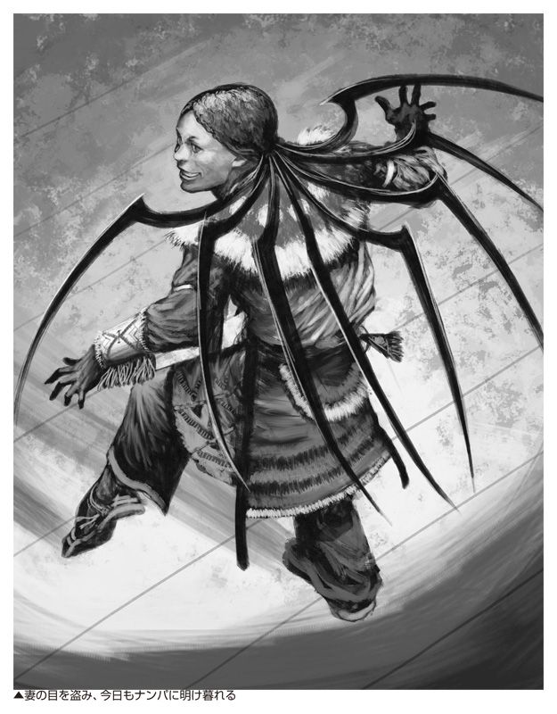
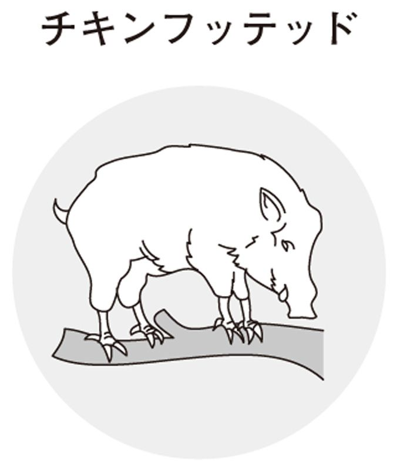
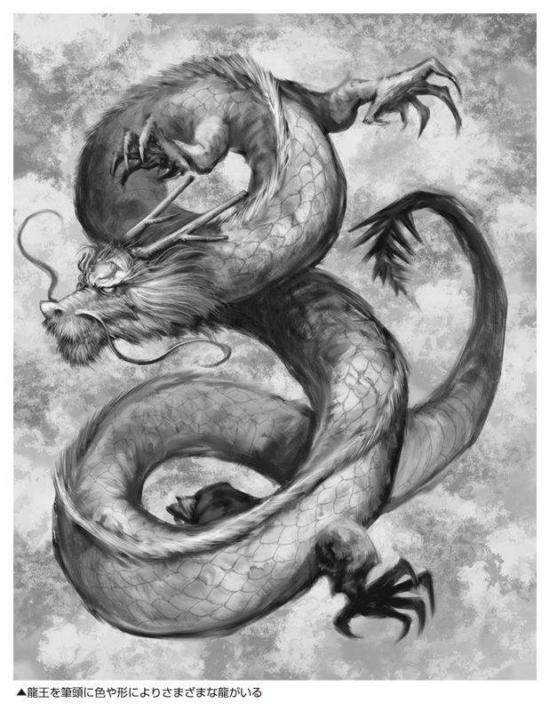
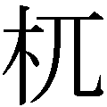
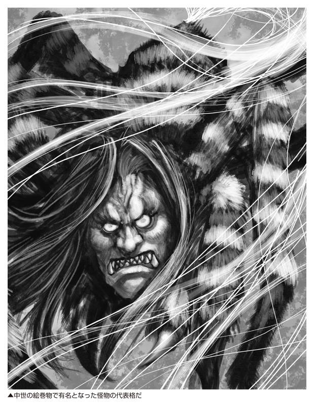
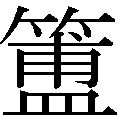

| 世界の「神獣・モンスター」がよくわかる本 ドラゴン、ペガサスから鳳凰、ケルベロスまで (PHP文庫) | |
| 造事務所 | |
| PHP研究所 (2007) | |

世界の「神獣・モンスター」がよくわかる本
ドラゴン、ペガサスから鳳凰、ケルベロスまで
東ゆみこ 監修／造事務所 編著
さて、いまからあなたを、神獣・モンスターの世界にお連れしようと思う。
この世界の異形のものたちのイメージは、じつにさまざまである。そのなかで、これまでにあなたがもっとも心ひかれた怪物は、いったいなんだろう。
私がいちばん興味を抱いたのは、十数年前に見た、ある奇妙な図のなかに描かれた怪物である（次の図）。
じつは、この図、十六世紀後半につくられた、れっきとした海図なのだ。ポルトガル沖の様子を描いたもので、沿岸に点在する岩、水深、陸の目標などが書きこまれている。さらには、船の運航に際しての注意書きも添えられている。
船乗りだったルカス・ワヘナールという人物が作成したもので、当時のヨーロッパで好評を博していたという。
海図には、一艘の船をねらいさだめたかのように泳ぐ、海の化け物が描かれている。それは、船よりも陸地の建物よりも大きく、牙もあらわに、潮をふきあげている。恐ろしいというより、ユーモラスである。
私はしばし、非常におもしろく、この海図をながめた。おもしろさの源は、むろん海図の精巧さにではなく、そこに描かれた海のモンスターにあった。そして、なぜ海図にモンスターが登場するのか、不思議な感覚を覚えたのである。
だがたしかに、十六世紀後半という時代、人々は、しごく真面目に、海図に海獣を描いていたのである。
人間の力がおよばない場所には、人智を超えた巨大で恐ろしい存在が潜んでいるという警告だったのだろうか。あるいは、当時の人々がもつ海のイメージに、具体的な形を与えると、こういう海獣になるということなのか......。
以前、そんなことを考えたのだ。そして、その後しばらくして、私はこの海獣が、もしかすると当時の人々の世界観の一端の現われではないかと思うようになったのである。
世界中の神話や伝承に登場する神獣やモンスター、そして精霊たち。彼らの姿から、あらゆる時代と場所で生きた人間が、みずからの世界をどのようにとらえていたのか。それを知ることができるのだ。
ところで、興味深いことに、現在、これら過去の時代の幻獣たちが、ゲームや映画、漫画、ファンタジー小説などで、新しい生命を得ている。私の見るところ、それは、現代の世界観のひとつになろうとしているかのようである。
なぜ現代人は、古い時代の神獣やモンスターをおもしろく感じ、欲するのだろうか。そして、それらを通じて、人々はどのような世界観を形づくろうとしているのか。
こんな見方で、本書に書かれている世界中の異形のものたちをながめてみたら、きっと、あなた自身と世界との意外なつながりを再発見できるであろう。
あなたが、神獣・モンスターと出会うとき、何かが始まるかもしれない。
二〇〇七年四月
東ゆみこ
世界の「神獣・モンスター」がよくわかる本 目次
概説
怪物の血の中から生まれた、空駆ける天馬
ペガサス（ペガソス）
見るだけで鳥をも落とす、邪視の持ち主
バジリスク（バシリスク）
人間をとって喰う、ひとつ目の巨人族
サイクロプス（キュクロプス）
有名無名、ヨーロッパの怪物たち
神話のなかの
モンスターたち
概説
白人にとっては未開拓の新世界
先住民には父祖伝来の
聖なる地
平和を説くミステリアス・ビューティー
ホワイトバッファローウーマン
「気はやさしくて力もち」な白人開拓者の英雄
ポール・バニヤン
概説
先住民の神話は西洋に強姦され、
民間伝承という
混血児を生んだ
球技をこよなく愛した、マヤの双子の英雄神
フナフプとシュバランケ
チリのモンスター・珍獣と、ブラジルの自然神
民間伝承からの収穫
概説
「夢の時代」からオーストラリアにいた怪獣
バニップ（バニイップ）
怪物、巨人、未確認生物、精霊たちの大行進
密林と南洋の住人たち
概説
日本の先住民かとも呼ばれた妖精のような民
コロボックル（コロポックル）
かつて怪物たちは神話のなかで縦横無尽に活躍していた。だが、時が経つにつれ、怪物たちは異教の存在となる。そして現代......。
一神教の影響と神獣・モンスターの変貌
ドラゴンやペガサス、あるいはピクシーやドワーフといった、われわれになじみの深いヨーロッパの神獣、モンスター、ないしは精霊たちの源流をたどれば、おおよそ三つの神話に行きあたる。ギリシァ神話、北欧神話、ケルト神話である。
それらの神話や伝承に登場する異形の存在の中には、神の血を引き、神に等しい力を持つ神獣もいた。反対に、神に対立し、人間に害を与える恐ろしいモンスターも、数多かった。
ところが、こうした多神教の神獣やモンスターたちは、一神教が普及するにつれて、容姿が変化したり、新しい地位を獲得したりしていったのである。
モンスターがよい神獣として甦えった代表といえば、ユニコーンであろう。古代ローマ時代、獰猛さで名高かったユニコーンは、キリスト教の世界では、救世主イエスの象徴となった。ユニコーンのかたわらにいる処女は、聖母マリアを表わすとみなされたのである。
「異教」のレッテルのもとでも、彼らは生き残った
そのいっぽうで、一神教が流布する以前に信じられていた、多くの神獣やモンスターたちには、いわゆる「異教」のレッテルがはられてしまった。そして彼らは矮小な存在とみなされるようになっていったのである。
たとえば、妖精というとわれわれは、すぐに人間より小さな者と思ってしまうが、本来、妖精たちは、ケルト神話などの神々だったのである。そこでは彼らは、人間たちと同等、あるいは人間よりも大きな体をもち、強大な魔力をもった存在であった。それがキリスト教の浸透とともに、徐々に体が小さくなり、力も弱まり、単なるイタズラ者ということになってしまったのだ。
しかし、キリスト教の影響がいかに大きかろうとも、人の心のなかにある、人間よりも力強く、不思議な力をもった存在たちへの憧れは消滅しなかった。モンスターたちは、貴族の紋章や伝説のなかに姿を隠しながらも、脈々と生きのびたのである。
そして現代──。モンスターたちは、文学や映画、ゲームのなかで、いきいきと自由に羽ばたいている。いまや、モンスターたちは神よりも、われわれに親しく、そしてわれわれの憧れを駆りたてる存在になっているといえるだろう。
偉大なる異形の者たちは、復活したのである。
ドラゴンは基本的に、巨大な爬虫類の体に、コウモリのような翼、鋭いカギ爪に、長い尾をもった姿で知られている。名前の由来は、ギリシァ語の drakon 「観察すること」からきており、このドラゴンを日本語に訳せば「龍（竜）」となる。
だが、西洋のドラゴンと東洋の龍では、その性格はずいぶんちがう。
東洋の龍が、神に近い善なる存在であることが多いのに対し、西洋のドラゴンは、たいてい悪の象徴となっているのだ。そして一神教以前の神話伝説だけでなく、キリスト教の世界観でもドラゴンは悪とされている。
キリスト教の伝説のなかには、聖ジョージのドラゴン退治の伝説をはじめ、聖人がドラゴンを倒した話がいくつもある。また、楽園に住んでいたアダムとイブの故事で、イブを誘惑した「蛇」とは、ドラゴンであるともいわれている。
黄金の羊の毛皮と魔法の指輪──宝を守るドラゴンたち
そんなドラゴンの伝説で、代表的なものを挙げるとすれば、次のふたつであろう。
ひとつはギリシァ神話のイアソンの冒険に登場する、黄金の羊の毛皮を守る「眠らないドラゴン」だ。テッサリアの王子であったイアソンは、奪われた王位を取りもどすために、黄金の羊の毛皮という秘宝を手に入れなければならなくなる。
だが、その秘宝は、けっして眠らないドラゴンに守られており、だれも近づけずにいた。そこで、イアソンは魔法を使う王女メディアの力を借り、薬を使ってドラゴンを眠らせ、黄金の羊の毛皮を手に入れるのである。
もうひとつ、西洋で有名なのは、北欧神話のシグルズ伝説に登場するドラゴンである。このドラゴンはファブニルの変身した姿であり、無限に黄金を生みだす、魔法の指輪アンドヴァリナウトを隠し持っている。その指輪を求めて、最高神オーディンの血を引く英雄シグルズは、ファブニルを退治するのだ。
ファブニルを殺したとき、シグルズは相手の血を浴びたため、背中の一カ所をのぞく不死身の体と、小鳥の言葉を理解する力を手に入れたとも言い伝えられている。
ギリシァ神話の「眠らないドラゴン」も、北欧神話のファブニルも、どちらも隠された財宝を守っている存在だ。
このほかにも、財宝を守るドラゴンの伝説は数多く残されており、それゆえ、ドラゴンは欲深だともいわれている。
そのことから、キリスト教では、悪の象徴とされたのかもしれない。
ヨーロッパ各地に残るドラゴンたちの伝説
北欧神話では、ファブニルのほかに、ニーズホッグと呼ばれる巨大なドラゴンがいる。このニーズホッグは、世界全体を支えている世界樹ユグドラシルの根をかじっていると伝えられている。
いっぽう、ロシアの民間伝承には、ゴリニチという名で呼ばれるドラゴンがいる。邪悪な魔法使いの甥で、皇帝の娘と結婚しようとしたという言い伝えで有名だ。また、紋章に見られる、とげのある蛇の尾と翼をもつワイバーンも、ドラゴンの一種であると考えられる。
さらには、ヨーロッパからはずれるが、バビロニア神話に登場するティアマトやイシュタル門を飾るシルシュも、ドラゴンだといわれている。
ところで、先に西洋のドラゴンは「悪」の象徴であると述べたが、すべてのドラゴンが悪かといえば、そうではない。ケルトの伝承に登場する赤いドラゴンは、イギリスのウェールズ地方では「ア・ドライグ・ゴッホ」と呼ばれ、その土地を侵略者たちから守る「守護者」なのだ。
ドラゴンの伝説は無数にあり、著名なドラゴンや、ドラゴンの眷属たちをひとつひとつ挙げていったら、それだけで一冊の本が書けるほどである。それほど、この怪物の姿は、西洋の人々の心の奥底に刻みこまれているのであろう。
フェニックスとは、永遠の命を持った神秘的な鳥のことだ。ギリシァ語ではポイニクスと呼ばれていた。ポイニクスの意味は「赤紫」である。
この不死鳥の姿については諸説あるが、一説には、体の大きさはワシぐらいで、頭の上には飾りのような羽毛が、首のまわりには金色に輝く羽毛が生えているとされている。そして、体の色は紫で、尾だけは薔薇色と青色の混じった色をしているという。
また別の説では、頭には孔雀のような鶏冠をいだいており、孔雀のものよりもはるかに大きいとも言い伝えられている。
フェニックスは炎のなかから蘇えるのか？
さて、フェニックスといえば、寿命がくるとみずから炎のなかに飛びこんで己の体を焼きつくし、灰のなかから新たな肉体を得て蘇えるというイメージが、一般には流布している。だが、その復活のしかたについても諸説ある。
たとえば、初期キリスト教の司教クレメンス一世（ローマのクレメンス）は、フェニックスは五百年生きた後、みずからの死が近づくと、さまざまな香料を集めて巣をつくり、そこに閉じこもって死ぬとしている。
そして、その死体から一匹の幼虫が生まれ、この幼虫はしばらく死体とともに暮らす。やがて羽毛が生じて飛びたち、以前のフェニックスの亡骸を、アラビアからエジプトのヘリオポリスの太陽の祭壇に運んでいくというのだ。つまり、フェニックスは鳥でありながら、生まれたときは虫であるといっているのである。
もちろんいっぽうで、われわれのよく知る、炎のなかから蘇える不死鳥としてのフェニックスも、古来より語られている。たとえば、一世紀のローマのポンポニウス・メラの『世界地理』によれば、フェニックスはやはり、五百年生きるとされる。また、みずから香料を積みあげて薪の山をつくり、その上に横たわって己の身体を火葬するという。
そして、炎によって灰となった部分が凝固し、そこからふたたびフェニックスが生まれ、やがて自分の古い骨をヘリオポリスにもっていき、神殿に安置するとされているのである。

フェニックスの一回の寿命は何年？
ところで、先にフェニックスは、一回の寿命が五百年であると述べたが、フェニックスは、その不死性だけではなく、一回の寿命も非常に長いものと信じられていた。だが、その長さは、人によっていうことがまちまちであり、五百年周期というのが有力な説ではあるが、ときに五百四十年、あるいは千四百六十一年、長いものでは、なんとプラトン年（三万六千年）の寿命をもつという意見も存在している。......とはいうものの、この数字に根拠はほとんどないと言っていいだろう。
フェニックスは、その長寿と不死性によって、ヨーロッパ全土をはじめ中東やアフリカなど、幅広い地域で信奉されてきた。ロシアには火の鳥の伝説があり、また東洋の神獣である鳳凰とフェニックスも、ある意味よく似ている。
それだけ、人間が死というものを恐れ、永遠の命をもつ不死鳥に憧れる気持ちは、洋の東西を問わず共通しているということなのだろう。
もっとも、フェニックスの存在を疑う意見も古代より多くあり、実際にフェニックスを捕獲したといった話は存在しないようである。
しかし、その意見に対しては、近代の学者アレクサンダー・ロスの「人間は、あらゆる動物のなかでもっとも凶暴なものであり、もしそんな人間に見つけられてしまったら、貪り食われてしまうということを、フェニックスは本能で知っているから姿を隠しているのだ」という反論も記しておきたい。
怪物の血の中から生まれた、空駆ける天馬
ペガサス（ペガソス）
空駆ける天馬──ペガサス。翼をもつ、この美しい生物は、その高貴な外見に見合った血統と、美しい外観から想像もできない、意外なモンスターの血統を引く存在だ。
なんと、ペガサスの父は海神ポセイドン、母は怪物メドュウサなのである。
その誕生を語るには、まずギリシァ神話のひとりの英雄譚を語らなければならない。
ペガサスの誕生に立ちあった英雄ペルセウス
最高神ゼウスと、人間の娘ダナエのあいだに生まれたペルセウスは、セリポス島の王の命令で、怪物メドュウサを退治しにいくことになる。メドュウサは、その顔を見るものを石にしてしまう恐ろしい力をもった怪物であったが、ペルセウスは、女神アテナに知恵を借り、直接、メドュウサと視線をあわせず、自分の持つ青銅の盾に怪物の姿を反射させることで、みごと、退治することに成功する。
このときメドュウサは、海神ポセイドンの子どもを身ごもっており、ペルセウスに首を切り落とされると、その飛び散った血のなかから、翼をもった馬ペガサスが誕生した。
ちなみに、ペガサスが誕生したとき、もう一頭、クリュサオルという怪物が生まれたとの伝承も存在している。
また、ポセイドンは馬と関係の深い神であり、のちに英雄ヘラクレスが乗るアリオンという馬の父もポセイドンなのだ。そして、ペガサスの兄弟であるクリュサオルは、やがてゲリュオンという、三つの頭と、六本の手足をもつ怪物を息子にもつことになるのだが、このゲリュオンを退治するのが、ヘラクレスなのである。
このように、ギリシァ神話のなかでは、神と、神の生みだした神獣・怪物と、人間の物語が、複雑に絡みあっている。
さらに余談だが、ぺルセウスが死んだあと、ペガサスはいったん女神アテナのものになり、しばらくしてからアテナは文学と詩の女神ムーサに、この天馬を贈ったという。ムーサたちが住むといわれるヘリコン山には、ヒッポクレネ（「馬の泉」）という泉があり、泉の水は芸術家に霊感を与えるとされている。この泉は、ペガサスが蹄で大地を叩き、湧きでたと言い伝えられている。
ペガサスをアテナより授かった英雄ベレロポン──高慢の罪
ところで、ペガサスの伝説には、もうひとり、ギリシァ神話の英雄が登場する。
それは、ベレロポンという男だ。殺人の罪で国外追放となった若者──ベレロポンは、リュキアの町に流れつく。ちょうどそのとき、リュキアはキマイラという怪物に悩まされており、王イオバテスは怪物を退治する英雄を探していた。そこで白羽の矢が立ったのが、ベレロポンであった。
ベレロポンは、王の頼みを引きうけ、予言者ポリュイドスに相談する。すると予言者は、「キマイラを退治するためにはペガサスを手に入れる必要がある。そのためには、アテナの神殿で一晩過ごさなければならない」と告げる。そこでベレロポンがアテナ神殿で寝ていると、夢にアテナが現われ、ペガサスを御すための黄金の手綱を渡してくれるのである。こうして、入手した魔法の手綱の力でペガサスを捕え、調教することに成功したベレロポンは、天馬に跨って空高く舞いあがり、たやすくキマイラを退治してしまう。
このキマイラ退治を皮切りに、ベレロポンはペガサスの力を借りながら、さまざまな困難に打ち勝ち、名高い英雄となっていくのだが、じつは、ベレロポンとペガサスの伝説は、悲惨な結末を迎えるのだ。英雄の名声に思いあがったベレロポンは、ある日、ペガサスに乗って神々の住むオリュンポス山まで飛ぼうとする。しかし、その高慢さに怒ったゼウスが、ペガサスにベレロポンを振りおとすように命じ、ペガサスから落ちた英雄は、アレイオンの野に墜落、狂気に襲われ遍歴するのである。
のちにペガサスは、神に召され、星座（ペガスス座）になったという。
ユニコーンと聞いて、ふつう、われわれが思いうかべるのは、額に一本の長い角を生やし、すらりとした脚をもつ、気品ある美しい馬の姿だろう。西洋絵画では、貴婦人の横に守護者のようにたたずむユニコーンの姿が、よく見うけられる。
だが、一角獣としても知られるこの動物を、はじめて書き記した紀元前五世紀のギリシァの歴史家クテシアスは、深い紅色の頭に五十センチほどの角の生えた、青い瞳の白いロバだとしている。また、一世紀、古代ローマの博物学者プリニウスは、胴体は馬、頭は牡鹿、足は象、尾は猪で、額の真ん中に一メートルほどの黒い角が生えていると書き記しているのだ。
ちなみに、生息地はインドともエチオピアともいわれているが、十三～十四世紀の探検家マルコ・ポーロは、著作『東方見聞録』（正式名称は『世界の記述』）のなかで、ユニコーンは、バスマン王国（現在のスマトラ島にあったとされる）に多数生息していると書き残している。
ともあれ、ロバや象の足では、あまり貴婦人の守護者としてさまにならないといわざるを得まい。
汚れなき乙女たちの守護者
このように、もとは怪物に近い姿として知られていたユニコーンだが、額から一本の角が生えているという特徴のほかに、共通して知られていたのは非常に力が強く、凶暴な性格をもっているということだ。ユニコーンは、象や獅子を仇敵とし、互角に戦うとも信じられていたのである。
ところで、その凶暴さから、人間が生きたユニコーンを捕まえるのは、長いあいだ、絶対に不可能だとされていた。だが、いつのころからか、人びとのあいだにユニコーンを捕らえる方法なるものが知られようになる。その方法とは、ユニコーンは若い処女に弱く、処女をおとりとして使えば、処女に近づいてきて、その頭を膝の上にのせて眠ってしまうというものだ。そのすきに、物陰に隠れていた猟師たちが、ユニコーンを捕らえるのである。
この、処女に弱いという伝説から、やがてユニコーンは貴婦人の守護者のような存在になり、美しい馬の姿で描かれるようになっていったのであろう。
もっとも、万が一、そのおとりが処女でなかった場合、ユニコーンはおとりの女性を角で突き殺してしまうともいわれているから、凶暴な性格がなくなってしまったわけではない。
また、たとえ生きて捕らえたとしても、人間の手で飼いならすのはむずかしく、誇り高いユニコーンは、やがて悲しみのあまり死んでしまうともいわれている。
中世の貴族たちが探し求めたユニコーンの角
話は変わるが、ユニコーンの角には不思議な力があるとされている。
ユニコーンの角でつくった酒盃に毒を注げば、たちどころに毒は中和されてしまうとされ、また、短剣の柄にユニコーンの角を使えば、その短剣を毒のそばに置いたとき、柄が湿り気を帯びると信じられていた。
このため、つねに毒殺の危機におびえていた中世ヨーロッパの貴族たちは、こぞってユニコーンの角を探し求めたという。そのためには、領地を売りはらい、黄金を積みあげた者も少なくない。そして実際に、彼らが手に入れたユニコーンの角というものが、現代にも多数残されているのだ。しかし、このユニコーンの角の正体は、牛の蹄や北極海に住む鯨の仲間、イッカクという動物の牙であった。頭のいい商人たちが、貴族たちをだまして、大金を巻きあげたのである。
最後に余談だが、アジアにもユニコーンの伝説は残されており、チンギス・ハーンの軍隊が山中で、額から角を生やした鹿のような動物と出会ったと言い伝えられている。これは、中国で角端と呼ばれる一角獣であったらしいが、この角端は麒麟の一種とされている。
ギリシァ神話に登場する上半身が人間、下半身が馬の姿をした、半人半馬の怪物がケンタウロスである。単独の怪物ではなく、ひとつの種族であり、名前の意味は、「槍兵」だ。二世紀ごろに成立した、著者不明の『フィシオログス』という本の中では、オノケンタウロスと呼ばれる半人半驢馬の幻獣が記されている。これと区別する際には、半人半馬を、とくにヒッポケンタウロスと呼ぶ。
もっとも、ホメロスの『イリアス』では、たんに「野獣」とされているようだ。
一説には、地中海沿岸に定住していた人びとが、アジアの草原からやってきた騎馬民族を目にしたときの恐怖心をもとに生みだしたものと考えられるが、真偽のほどは定かではない。
ともあれ、神話のなかのケンタウロス族は、戦闘神アレスの息子とも、そのアレスの血を引くテッサリアの王イクシオンが、女神ヘラに恋をしたことに、ゼウスが怒って送りつけた、ヘラに似せた雲とのあいだに誕生したともいわれている。
英雄ヘラクレスに滅ぼされたケンタウロスたち
ケンタウロスの性格は野蛮、粗暴とされ、また生肉を食うなどとも言い伝えられている。そんな乱暴者たちの集団であったケンタウロスだが、酒を飲む習慣はなかったという。しかし、その飲酒の習慣がなかったことが原因で、事件を起こしてもいるのである。
人間のラピタイ族の王の結婚式に、ケンタウロス族が招かれたが、その席で酒を出され、飲みなれない酒に酔ったケンタウロス族のひとり、エウリュティオンが花嫁を襲ってしまったのだ。それに乗せられ、ほかのケンタウロスたちも、出席していた女性たちを次つぎと襲いはじめ、ラピタイ族と戦争になってしまう。
結局、この戦争は、ケンタウロスたちに多大な損害を与え、彼らの敗北で終わった。そして、そののち、ケンタウロスたちは英雄ヘラクレスとも戦い、最終的には滅ぼされてしまうのである。
だが、ケンタウロスたちも、やられているばかりではない。ケンタウロス族のひとり、ネッソスは、ヘラクレスに殺されるとき、彼の二番目の妻に「夫の心をつなぎとめる薬だ」と言って、毒の混じった自分の血を渡している。のちに妻は、その血で染まった服をヘラクレスに着せて、死に追いやってしまうのである。
もっとも、ヘラクレスはこの一件で人間としては死ぬが、真の神として復活する。
射手座になった賢者ケイロン
ケンタウロスにまつわる、血生臭ぐさい逸話ばかり紹介してしまったが、そんな粗暴なケンタウロスたちのなかにも、数少ない理知的な者がいる。それがケイロンだ。
巨人族のクロノスの血を引くともいわれるケイロンは、テッサリアのペリオン山に住んでおり、武術にも、音楽にも、医学にも、薬学にも通じていたという。ケンタウロス族にはめずらしい、賢者ともいうべき存在である（余談だが、古来、薬効があるとされた矢車菊はケンタウロスにちなんだ名前である。これは、ペリオン山が薬草の産地であることに由来しているのであろう）。
ケイロンは、その才能を生かし、アキレウスやイアソン、アスクレピオスといった英雄たちの教師の役割をはたしたと言い伝えられている。
ことに、医者であったアスクレピオスは、ケイロンから学んだ知識を使って死者を蘇えらせたが、そのことでゼウスの怒りをかって罰せられ、雷に打たれて死んだという。それだけ、ケイロンの知識がすごかったということだろう。
太陽神アポロンの友人でもあったケイロンは、多くのギリシァ神話の登場人物たちと同じように、死後、ゼウスによって星座にされた。それが、射手座である。
あまり評判のよくないケンタウロス族のなかにあって、やはりケイロンだけは特別な存在であったといえよう。
難攻不落の迷宮の奥に潜む恐怖の主
ギリシァ神話に登場する、牛の頭と人間の体をもった凶暴な怪物。海神ポセイドンが波からつくり出した雄牛と、クレタ島のミノス王の妃・パシパエのあいだに生まれた不義の子で、名前の意味は「ミノスの雄牛」である。
ミノタウロスは、名工ダイダロスのつくった迷宮ラビュリントスの奥に潜み、毎年、生贄としてアテナイから送られてきた七人の少年少女を、貪り食ったという。
その恐怖の儀式に終止符を打ったのが、英雄テセウスだ。クレタ島に乗りこんだテセウスに対し、ミノス王の娘アリアドネは、ひと巻きの糸玉をわたす。この糸をほどきながら進めば、迷宮を脱出するときに迷うことはないと教えたのだ。この助けによって、テセウスはみごと、牛頭人体の怪物を退治することに成功する。
ところで、テセウスは、ポセイドンの子だともいわれる。だとすれば、彼は自分と関係が深いミノタウロスを、己の手で殺していることになるのだ。
由緒正しき怪物の血統
キマイラは、獅子の頭、山羊の胴、ドラゴンの尻尾をもち、口から炎を吐く、ギリシァ神話の女怪だ。火山地帯のリュキアに生息していたと伝えられている。この怪物の父は、大地母神ガイアの息子で蛇のような怪物テュポン、母は上半身は女、下半身は蛇の怪物エキドナだ。テュポンが、ゼウスと世界の支配者の座を争い、敗北しそうになったとき、キマイラを生んだとされている。
テュポンとエキドナのあいだには、ケルベロスやヒュドラなども生まれており、そういう意味で、キマイラはモンスターとして由緒正しい血統であるといえるだろう。
英雄ベレロポンによって退治されたことはペガサスの項でふれたが、ベレロポンはキマイラを退治する際、天馬ペガサスに乗り、まずはそれを空高く飛翔させたという。そして、空中からキマイラの背を矢で射ち、怪物を死に至らしめたのである。
船を難破させる魔物か、豊漁をもたらす神か!?
十八世紀なかばまで、実在が信じられていた海の怪物。北極海に住み、洋上を航海する船を巨大な触手で深海に引きずりこむと、船乗りたちに恐れられていた。その正体は、巨大なタコとも、イカ、ヒトデ、クラゲともいわれているが、不明だ。
十八世紀、デンマークの司教ポントピダンは、クラーケンの全身を見た者はおらず、海上に浮かぶ背中あるいは上部だけでも、周囲二キロメートル以上あり、一見すると小島の集合のようだと書き記している。また、ポントピダンは、この怪物の特徴として、激臭を発して魚を呼びよせ、えさとしているとも記す。
漁師たちにとっては、臭いによって魚を呼びよせるクラーケンは、豊漁をもたらすありがたい存在でもあったようだ。
また、この怪物が本当に船を襲うかどうかは、わからないという。なぜなら、クラーケンに実際に遭遇し生還してきた人物がいないからだと、司教は記している。
冥府を守る地獄の番犬
三つの頭をもち、首のまわりには無数の蛇が生え、尾も蛇という姿の、ギリシァ神話に登場する地獄の番犬。死者が冥界から出ていかないよう見張っているため、だれもその前を通れないといわれている。
だが、ギリシァ神話のなかで何人かは、無事、ケルベロスの前を通過している。たとえば詩人オルぺウスは、死んだ妻をとりもどすために、竪琴の音で、この番犬をおとなしくさせ、冥界に入っていった。また、ヘラクレスの行なった十二の難行のひとつは、ケルベロスを冥界から連れてくるというものであったが、彼は冥界の女王ペルセポネらの助けを借りて、この使命をみごと達成しているのである。
ちなみに、地獄の番犬という観念は、インドやヨーロッパなどに共通するものらしい。北欧神話では、冥府には番犬ガルムがいるとされ、インドの神話でも、冥界の王ヤマ（閻魔）は、目が四つある犬を二匹飼っているとされている。
千年の寿命をもち、地中を自由自在に動きまわる土の精霊
十六世紀の錬金術師パラケルススの提唱した、火、水、風、土の四大元素の精のうち、土の精霊がノーム（ピグミー）だ。鳥が大空を、魚が水中を自由に動きまわれるように、ノームは土のなかを自在に動きまわれるとされている。
その姿には諸説あり、髭を生やした老人の姿をしているとも、赤い帽子をかぶった小人の姿をしているともいわれている。また、ノームは非常に長命で、千年もの寿命をもち、百歳でようやく成人するとも言い伝えられている。
名前の由来は、ギリシァ語の「グノーシス（知ること）」からきているとも、「ゲ＝ノムス（地に住む者）」からきているともいわれてるが、実際には不明。
そもそも、大地の精という考えかたは太古よりあったが、ノームという名前を記述したのは、パラケルススが最初であったと思われる。それがのちの世に広まり、地下の財宝を守る賢者として、人びとに信じられるようになっていったのだ。
人間と恋に落ちることで魂を得る水の精霊
ウンディーネ（ニンフ）は、もともとは古代ギリシァの女神で、若くてとても美しい山川草木の精である。
だが、十六世紀の錬金術師パラケルススが、ウンディーネこそが四大元素の精のうち「水の精霊」であるとしたことから、以後、水中で暮らす、美しい乙女の姿をした精霊として信じられるようになっていく。
そんなウンディーネの特徴を、ひとつ挙げるとしたら、恋に情熱的であるということだろうか。伝承によれば、ウンディーネには魂がなく、人間と恋に落ち、その人間の子を産めば魂を得られようになる。だが、それと同時に人間としての魂の苦悩も引きうけなければならないという。
この、ある意味ロマンチックな伝承は、多くのヨーロッパの作家たちを刺激し、後世、ウンディーネを題材にした作品が、いくつも創りだされた。
そよ風は、風の精霊のささやき声
シルフは、パラケルススが定めた四大精霊のうち、風を司る精霊だ。その名前は、蝶に変身する昆虫のギリシァ名「シルフェ」からとられている。
本来、シルフには男女両性があるとされていたが、しだいに、優雅な若い女性の姿としてだけ信じられるようになっていった。もっとも、人間がシルフの姿を見ることは非常にむずかしいという。一説によれば、シルフはほとんど半透明の体に、小さな羽根が生えているとされているが、たしかに、半透明では姿を確認するのは困難であろう。
そよ風は、シルフの声であるともいわれる。だが、人間にできるのは、ただこの風の精霊の声を聞くことだけなのである。
パラケルススは、四大元素の精からさまざまな怪物が生じると考えている。そして、風の精シルフからは、なんと巨人が生まれるという。
炎の中で踊りくるう、火トカゲ
サラマンダーは、炎のなかに住み、炎を消したり、燃えさからせたりすることができるトカゲのような怪物である。通称、火トカゲ。
この怪物のおもしろいところは、ある種の実在する両生類を、サラマンダーであるとする意見と、自然界の精霊とみなす意見の両方があることだろう。
現実にいる両生類の山椒魚の英語名はサラマンダーであり、古代において、山椒魚は炎に強いと信じられていた。プリニウスは、「山椒魚は非常に冷たいので、火に触れると火は消える」と記している。これは、山椒魚の皮膚から分泌された粘液が、炎を消すと考えられていたからであろう。
いっぽう、サラマンダーを精霊とみることにもっとも影響を与えたのは、パラケルススである。彼は十五～十六世紀の医者であり、錬金術師でもあった。そしてサラマンダーを、四大精霊のひとつであり、火のなかに住み、火を司る精霊だとした。
また、他の四大精霊のひとつ、水の精ウンディーネは、人間に好意を寄せることもあるが、燃えさかるサラマンダーは、人間とは仲が悪いという。
しかし、錬金術では、鉄などの金属を金に変える「賢者の石」をつくるために、この怪物が必要だったとされている。
ちなみに、サラマンダーの皮や、血を浸した布といった、炎にくべても燃えない生地の記載が残されている。
日本の『竹取物語』にも、同様の性質をもつ「火鼠の皮衣」というものが登場する。だが、この正体は繊維状の鉱物である石綿（アスベスト）であろう。
石綿の性質は、古代ローマ時代から知られ、実用化されていたのである。
女神アテナの怨みを買った不幸な女性
メドュウサは、ギリシァ神話に登場する、ゴルゴンと呼ばれる怪物三姉妹のひとりだ。名前の意味は「女王」で、残りの姉妹は、ステンノ「強い女」、エウリュアレ「遠くに飛ぶ女」という名をもっている。
三姉妹とも、猪のような大きな牙に、青銅の手を持ち、頭に生えているのは無数の生きた蛇という、恐ろしい姿をしている。
また、黄金の翼によって空を飛び、宝石のように輝く目で見られた者は、だれであろうと石になってしまうというのも、三姉妹に共通している特徴だ。
だが、ステンノとエウリュアレが不死身とされているのに対して、なぜかメドュウサだけは不死身でなく、それゆえ英雄ペルセウスに殺されてしまう。ペルセウスがメドュウサを退治した経緯については、ペガサスの項で触れた。
ところで、このように恐ろしい姿をしたメドュウサだが、はじめから怪物であったわけではないともいわれている。
もとは美しい処女であり、とくに美しい髪の毛を自慢にしていた。だが、女神アテナと美を競おうとしたために罰を受け、自慢の髪の毛をすべて蛇に変えられたのだ。
さらに、アテナとメドュウサの関係といえば、ペルセウスがメドュウサを退治するときに助力したのもアテナであるし、倒したあと、彼はアテナに、この怪物の首を捧げている。
そして、アテナは、死んでからも見た者を石にする力を失っていないメドュウサの首を、自分の持つ盾の真ん中にはめこんだと伝えられているのだ。
これらを考えあわせると、アテナとメドュウサ、このどちらが恐ろしい女性なのかは、判断がむずかしい。
額に「言葉」を書きこむと動きだす、巨大な泥人形
ゴーレムとは、ユダヤ教の伝承に登場する人造人間のことだ。ユダヤ人のあいだでは、祈祷してから断食をし、粘土で人の形をつくり、神の名を語りかける。すると、泥人形に生命が吹きこまれ、怪物がつくりだせると長いあいだ信じられていた。
名前の意味は、ヘブライ語で「胎児」だ。その名前が示すように、秘儀によって製造されたゴーレムは、言葉もしゃべれず、知能は低かった。だが、力は人間よりも強く、人間の言葉をある程度は聞きわけられたという。
ヨーロッパで迫害され続けてきたユダヤ人にとって、人間離れした怪力をもつゴーレムは、自分たちの守護者のような存在でもあった。それゆえ、彼らのあいだで長年、ゴーレムの存在が信奉され続けてきたのであろう。
この人造人間は、はじめは小さいが、すぐに人間の背たけを越す巨人になるといわれている。おもしろいのは、「言葉」の力によって支配されるところだ。
伝承によれば、ゴーレムの額にヘブライ語でemeth「エメト＝（真理）」と書きこむと動きだし、停止させたいときには、最初の「ｅ」を消して、meth 「メト＝（彼は死せり）」とすると、もとの粘土に還るという。
だが、ある男がゴーレムをつくったのはいいが、あまりに大きくなりすぎたため額に手が届かなくなり、この怪物の活動を止められなくなってしまったという伝承も残されている。
一計を案じたこの男は、ゴーレムに「靴を脱がせてくれ」と命じた。そして、ゴーレムがしゃがんだすきに文字を消すことに成功した。
しかし、その瞬間、大量の粘土の塊に戻ったゴーレムは、男の上にくずれ落ちた。結局この男は圧死したという。
見るだけで鳥をも落とす、邪視の持ち主
バジリスク（バシリスク）
意外な弱点のある蛇の王
バジリスクは、猛毒をもった蛇の怪物である。名前の意味は「王侯」。
一世紀ローマの博物学者プリニウスは、バジリスクはアフリカ北部に住む、長さ二十四センチメートルほどの、頭に王冠の模様のついた蛇であると記している。また、強烈な毒をもっており、ひとりの馬に乗った男が槍を刺してバジリスクを殺したが、毒が槍を伝わって、馬もろともその男は死んでしまったとの逸話を残している。
プリニウスは、バジリスクをトカゲの一種としている。だが、別の伝承では、バジリスクは、頭に雄鶏のトサカと角をもち、翼がふたつあって、尻尾が槍の穂先となっている、いわばニワトリと蛇が合体したような怪物とされているのだ。
もっとも、姿かたちについては諸説あるが、猛毒をもっているという特徴は、どの伝承でも共通している。その毒は体内にあるだけでなく、両目からも放たれ、この怪物に見られたら、空を飛んでいる鳥でさえ落ちてくるといわれるほどだ。
見ただけで相手を殺せるというのは、ギリシァ神話の怪物、メドュウサに近い能力であろう。それほどの力があれば無敵かと思えるが、そうでもない。バジリスクはイタチが天敵であるとされているのだ。
一説によれば、イタチの穴にバジリスクが投げこまれると、イタチは自分の命と引きかえに、臭い匂いでバジリスクを殺すという。意外な弱点のある怪物である。
ちなみに、バジリスクが鏡をのぞきこめば、自分の目の毒で死ぬと、十七世紀の寓意画集に書かれている。ペルセウスがメドュウサを退治したときと同じように、人間も鏡を使ってバジリスクの死の視線をはね返すことができれば、かの怪物を退治できるであろう。
王侯貴族に愛された「王」と「知識」のシンボル
ライオンの胴体にワシの頭部と翼をもつグリフォン（グリフィン、グリュプス）は、古代オリエントに起源をもち、広くその実在を信じられていた怪物だ。
また、中世以降、ヨーロッパの王侯貴族たちが、自分の家の紋章にグリフォンを使用した。そのため、この怪物の姿は、現代のわれわれに非常になじみが深い。ギリシァでは、グリフォンの生息地はインド（エチオピアという説も）であると考えられている。名前は、ギリシァ語で「曲がった」という意味である。
はじめのうちは、ワシが獲物を捕らえるように、上空から人間に襲いかかり、鋭い爪でつかんで巣へ運びさる悪魔のような怪物として恐れられていた。だが、時代をへるにつれ、キリスト教で聖なる象徴とされるライオンやワシとの類似性から、神聖な動物とみなされるようになっていく。
この流れから、「王」や「知識」のシンボルとして、紋章として用いられるようになったのだろう。
ところで、グリフォンは、金鉱のある地に住むといわれる。それゆえ、この獅子鷲は、黄金の守護者とも称されているのだ。
もちろん、この特性に欲深な人間が目をつけないわけがない。
ある伝説によれば、グリフォンが生息する近隣地域には、アリマスポイ人と呼ばれるひとつ目種族も住んでおり、財宝をねらうひとつ目族とグリフォンのあいだに、日々はげしい戦いがくりひろげられたと伝えられている。
とはいえ、人間がグリフォンの巣から財宝をもち帰ったという記録は、残念ながら残されていない。
人間をとって喰う、ひとつ目の巨人族
サイクロプス（キュクロプス）
トロイア戦争の英雄にただひとつの目をつぶされた巨人
ギリシァ神話に登場する、ひとつ目の巨人族のことを、サイクロプスという。
はじめ、サイクロプス族は、鍛冶の神ヘパイストスを手伝う職人たちであった。ゼウスのもつ雷や、海神ポセイドンのもつ三叉の矛などは、すべてサイクロプス族がつくりだしたものなのだ。ちなみに、古来、洋の東西を問わず、鍛冶の神と、ひとつ目は関係が深い。これは、職人が焼けた鉄を叩くときに片目をつぶるからだとも、飛びちった火花で片目がつぶれるからだともいわれている。
ともあれ、もとは職人であったサイクロプス族だが、いつのころからか、このひとつ目の巨人たちは、凶暴な人食い怪物ということになってしまうのだ。
その代表的な存在が、ポリュペモスという名前のサイクロプスだろう。ポリュペモスは、ポセイドンの血を引き、シチリア島に住んでいたといわれる。
伝説によれば、トロイア戦争の指導者である英雄オデュッセウスが、部下とともに、この島に流れ着いた。一行はポリュペモスにとらえられ、巨大な石で入り口をふさがれた洞窟に閉じこめられてしまう。そして、毎晩数人ずつ生きたまま食べられたのである。
そこで、オデュッセウスは、巨人に葡萄酒を飲ませて酔いつぶしてから、巨人のただひとつの目に、木の杭を打ちこんだという。
盲目となったポリュペモスは、翌朝、飼っていた羊を外に出すため、洞窟の入り口の岩をどかしたが、そのとき人間たちが逃げださないよう、一頭一頭の羊の背中を触り、たしかめていった。
しかし、オデュッセウスたちは、羊の腹の下に隠れ、無事、脱出に成功するのである。
紀元前五世紀にインドで発見された!? 「人喰いモンスター」
血の色をした人間の顔と、ライオンの体と、サソリの尻尾をもち、人間の肉を好んで食べる怪物がマンティコラである。
笛とラッパを同時に鳴らしたような声を出し、人間の耳をもち、眼の色は青とも灰ともいわれる。そして、口のなかには三列にならんだ牙が生え、鹿よりも速く走ったようである。
また、サソリの尾からは鋭い矢が放たれ、相手を殺すとされている。名前の起源は古代ペルシァ語の「人殺し」が変化したものだ。
マンティコラについて、はじめて書き記したのは、紀元前五世紀のギリシァ人、クテシアスだといわれている。医師としてペルシァ王に仕えたクテシアスは、『インド誌』という本のなかで、この怪物を紹介した。
ところで、このインドのモンスター、マンティコラは、当時のギリシァ・ローマ世界では、かなり衝撃的で魅惑的な存在だったようである。
というのも、哲学者アリストテレスをはじめとして、プリニウスや、ギリシァの旅行家パウサニアスなど、当時の著名人がこぞって、マンティコラについて触れているからだ。
ただし、パウサニアスは「私は虎だと信じている」と述べ、マンティコラの存在を疑問に思っていたようである。
やがて、中世以降のキリスト教の信仰の中でマンティコラは、「人喰い」という性質が強調され、悪魔と同一視されるようになっていく。
終末をもたらす巨狼
フェンリルとは、悪神ロキと、霜の女巨人アングルボザとのあいだに生まれた巨大な狼であり、北欧神話最大の怪物である。
北欧神話では、神々と巨人族のあいだに戦争が起こり、世界が滅亡することが、あらかじめ運命によって定められている。その世界の終末を、「ラグナロク」という。そして、フェンリルは生まれたときから、ラグナロクの際に最高神オーディンを滅ぼすであろうと、運命の女神ノルンによって予言されていた。
この予言を知った神々は、フェンリルを監禁しようとするが、このモンスターを縛れるような鎖は存在しなかった。そこで、オーディンは小人たちに、グレイプニルという魔法のかせをつくらせることにする。グレイプニルは、猫の足音、女性の髭、山の根、魚の息、熊の腱、鳥の唾という六つの材料からできており、絹紐のように滑らかでありながら、非常に頑丈なものであったという。
だが次の問題は、だれがフェンリルを縛るかであった。その困難を買ってでたのが、戦闘神テュールだ。彼は、フェンリルを安心させるために、この怪物の口に自分の手をさし入れ、そのすきに、かせをはめることに成功する。
フェンリルは、罠にはまったと気づいた瞬間、テュールの片手を食いちぎったが、あとの祭り。
こうして、巨狼はとらわれの獣となったのである。
しかし、テュールが片手を犠牲にしたにもかかわらず、ラグナロクが到来したとき、フェンリルは戒めをといてしまう。そして、上顎は天に、下顎は大地に触れるほど大きく口を開くと、予言のとおりにオーディンを飲みこんでしまうのである。
小さなイタズラ者は妖精の代名詞
イングランド南西部に伝わる、小さな妖精。妖精族は緑色と関係が深いとされているのだが、このピクシーも、緑色の服や帽子を身につけているとされている。呼び名の由来は不明だが、スカンジナビア地方の「ピスケ（小さな妖精）」という言葉と関係があるらしい。
ピクシーの伝承が残されている地域には、「ピクシーの雑木林」や「ピクシーの洞窟」などと名づけられた場所が数多く存在している。それだけ人びとの生活に密着した、なじみの深い妖精といえよう。そのせいか、ピクシーという名は、そのまま妖精の代名詞として使われることも多い。
そんなピクシーは、イタズラ好きで知られており、馬を盗んで乗りまわしたり、子馬のたてがみをひねって結び目をつくったりすると信じられている。
また、たびたび人間を道に迷わせるのも、この小さな妖精の得意技だ。遊んで帰りの遅くなった子どもを、少しのあいだ隠したり、農夫を畑のなかで道に迷わせたりといった話が、いくつも残されている。
この、ピクシーに惑わされることを「ピクシーレッド（Pixy-led）」という。
そして、それからのがれるには、着ていた上着を裏返しにすればよいと言い伝えられている。
もっとも、ピクシーはイタズラをするだけではなく、自分が気にいった人間に対しては、親切に手助けをしてくれるともいう。
さらに、ピクシーの正体は、幼くして死んだ子どもの魂だともいわれている。そう考えれば、イタズラ好きの性質も、ときに人なつっこく親切にしてくれることも納得がいく。
悪魔を罠にはめた男の哀れな結末
別名・ジャッキー・ランタン。イングランドの沼地に住む妖精で、鬼火で人を惑わし、旅人を迷わせたり、底なし沼にひきずりこむといわれている。
現在では、カボチャの頭をもち、手にランタン（角灯）を持ったハロウィンの怪物としての姿が有名。だが、空中を漂う鬼火＝ウィル・オ・ザ・ウィスプと、ジャック・オ・ランタンは同一のものである。また、鉄製のものをジャック・オ・ランタンは嫌うという言い伝えも残されている。
そんなジャック・オ・ランタンの由来を説明する、ひとつの伝承を紹介しよう。
むかし、ジャックという悪賢い農夫が、悪魔を罠にはめて、自分ではおりられないほど高い木の上に登らせた。そして、木に十字のしるしをつけておいた。悪魔はおろしてくれとジャックに頼んだ。そこでジャックは、「自分が死んでも地獄に落ちない約束をしろ」と悪魔に条件を持ちだし、まんまと契約をとりかわしたのだ。
やがてジャックが死んだとき、彼は天国に向かったが、生前あまりに悪事を働いていたので天国に入ることを許されなかった。だが、地獄に向かったところ、悪魔との契約により、地獄に落ちることも免れる。
そこでジャックは、カブをくり抜いてランタンをつくり、いまでもその灯りを頼りに、安住の地を求めてさまよっているというのである。
この伝承に登場するカブのランタンが、時代をへるにつれ、カボチャのランタンに変わり、やがてわれわれのよく知る、カボチャ頭のハロウィンの怪物の姿となったのであろう。
どこかユーモラスな姿の怪物だが、もとは悪魔以上に悪賢い人間なので、けっして甘く見てはいけない。
孫悟空のようなヒーローもいるが、神獣ではなくモンスターとなるとたいてい悪役。英雄たちに倒される「引きたて役」として登場するが、モンスターが強いほど、英雄の功績は大きいといえるだろう。
ここでは、そんなモンスターを退治した英雄たちを紹介しよう。
怪物退治の英雄といえば、やはりヨーロッパが本場。ドラゴンを退治した聖ゲオルギウス（聖ジョージ）や、メドュウサを退治したペルセウスなど、神話伝承にはこと欠かない。
なかでも、退治した数の多さでは、ギリシァ神話の英雄ヘラクレスの右に出る者はない。
「十二の功業」に棍棒一本でたちむかい、ヒュドラを倒し、ミノタウロスの父親である雄牛をとらえ、さらに地獄の番犬ケルベロスを引きずりだす。まさに、英雄の名にふさわしい活躍ぶりだ。
いっぽう、アジアに目を向けると、ヴリトラを退治したインドのインドラがいる。日本でも帝釈天としてまつられる彼の持つ金剛杵の破壊力はすさまじい。
日本では、ヤマタノオロチを退治したスサノオノミコトが有名だ。また、鬼の酒呑童子を退治するのは源頼光と四天王。同じメンバーで土蜘蛛も退治している。ほかの英雄が神や神の子であることを考えると、人間としては大健闘といえる。
そのほか、怪鳥ヴクブ・カキシュや、巨人シパクナを倒したマヤ神話の双子神フナフプとシュバランケ、魔法の唄で龍キリムを退治したコンゴのムウィンドなど、世界各地には、さまざまな英雄譚が残されている。
教会の屋根から人びとを見おろす魔像
ガーゴイルは、ヨーロッパの教会建築の上に飾られた、悪魔じみた恐ろしい石像で知られる怪物である。この怪物の名前の由来は、フランス語で「食道」、あるいは「喉」を意味するガルグユからきているとされる。また、ガルグユには、樋という意味もある。
教会に飾られた彫像には、神秘的な意味が隠されているともいわれるが、その真実は明らかではない。
その姿にしても、先に悪魔じみた恐ろしい怪物と述べたが、さまざまな姿によって表わされる。そのためこれといって定まった形を示すことはできない。ときに獅子の頭をもった怪物、ときに豚の頭にコウモリの羽と人間の体をもった半獣半人、ときにまた別の獣と人間の合わさった怪物として表わされているのだ。
だが、そもそもガーゴイルの原型となったといわれる怪物は、一種のドラゴンであった。セーヌ川河畔に住み、人びとを襲うといわれていた、ドラゴンに似た怪物の名前がガルグユなのである。
乗り手を溺死させる水棲馬
スコットランドに伝わる、灰色の馬の姿をした水の妖精。水の妖精といっても、海や湖に住むのではなく、その多くは、川に生息しているとされる。
ケルピーは、人間の前に姿を現わすと、自分の背中にまたがるよう誘うという。
だが、人間がまたがった途端、ケルピーは水中に飛びこむ。そして、乗り手を溺死させ、食い殺すのだ。また、そのときなぜか、肝臓だけは食べずに残し、岸辺にうち捨てるともいう。
この恐ろしい水の妖精・ケルピーを捕まえ、人間のいうことを聞かせる方法として知られているのは、ただひとつ、轡をケルピーの頭にかぶせることだけである。そうすれば、ケルピーは人間の命令をおとなしく聞くとされている。
一説には、ケルピーは人間の男の姿に変身することができるともいわれる。そして、人間の姿となったケルピーは、若い女性を誘惑し、その血を吸いとって殺してしまうと言い伝えられている。
死を告げる不吉な泣き女
アイルランドに伝わる、不吉な死の妖精。バンシーは泣く妖精として知られており、両手を打ちあわせたり、うずくまったりして、いかにも悲しげといった風情で嘆き悲しむとされる。さらに、バンシーの泣き声は、旧家のだれかの死を予告しているといわれ、また複数のバンシーがいっしょに泣いているときは、偉人の死の前ぶれであるともいわれる。
バンシーは、美しく長い髪を持ち、緑の服の上に灰色のコートを着ているとされている。だが、醜い老婆であるという者や、白い服を着ているという者もいる。
また、人間の前に現われるときは、棺を乗せた巨大な四頭立ての馬車に乗っているという説と、泣きながら空を飛んでいるという説が存在している。そして、この妖精の目は、いつも泣いているので、火のように真っ赤であるという。
このように非常に不吉で不気味なバンシーだが、彼女の垂れた醜い乳を吸う勇気のある者には、三つの願いごとを叶えてくれるとも言い伝えられている。実際に、バンシーの乳を吸った、勇気ある者がいたかどうかは不明ではあるが......。
コバルト・ブルーの輝きは精霊のイタズラ
ドイツなどで知られている精霊。デンマークではニス、イングランドではホブゴブリンと呼ばれる。醜い毛むくじゃらの小人として語られることが多い。人家に潜む精霊とも、鉱山の精霊ともいわれているが、一説には山の精霊であったらしい。
実際、ヨーロッパの鉱夫たちのあいだには、このコボルトの言い伝えが数多く残されている。コボルトは、鉱夫たちの重労働を手伝うこともあれば、邪魔することもあるという。また、鉱夫たちは採掘の最中に、金属のとりだしにくい鉱石にでくわすと、この精霊のイタズラのせいだと考えていたらしい。そして、その鉱石に精霊の名前をつけ、コバルトと呼んだのである。なお、このコバルトからは青い顔料がとれ、これをコバルト・ブルーという。
人間の家に潜む精霊としてのコボルトは、まずミルクにゴミを投げこむとされている。コボルトは住人がそのミルクを捨てずに飲むと、歓迎されていると考え、家に住みつくのである。そうやって人間と幸福に暮らすコボルトは、子どもに子守唄を歌ってくれると言い伝えられている。
海原に響く、悪魔の歌声
ギリシァ神話に登場する、海の精霊。本来、その姿に関する記述はあいまいだった。だが、後世、上半身が人間の女性、下半身が鳥の姿で表わされることが多くなる。これは、ハーピーの影響であろうか。
セイレンは、シチリア島近くの小島に住む。そこを通りかかる船乗りたちを、魔法の歌でとりこにし、自分の近くにひきよせ、死に至らしめたという。その歌声を聴いた者たちは、われを忘れて海に飛びこんでしまい、溺死するのである。また、溺れずにすんだ者も、島に上陸したが最後、しゃぶりつくされて骨になると言い伝えられている。
そんなセイレンの歌声から生きてのがれたひとりが、ギリシァ神話の英雄オデュッセウスだ。オデュッセウスは、船員の耳にロウをつめて歌声が聴こえないようにし、みずからの体もマストに縛りつけ、無事この海域を通過したのである。
一説によれば、セイレンは、女神ムーサと歌で競いあい、その勝負に負けて羽をむしられたという。
オーディンを乗せる八本脚の神馬
スレイプニルは、北欧神話の主神オーディンの乗る、八本の脚をもった神馬である。名前の意味は「滑るもの」。その名にふさわしく、空や海、大地を滑るように駆けぬけたという。また、スレイプニルは、神々の使命を受けたオーディンの息子が冥府に向かったとき、彼を地の底まで連れていったともいう。
さらに、この神馬の駆ける速さは、どんな名馬でも勝てぬほどであった。
あるとき、霜の巨人フルングニルは、グッルファクシ（金のたてがみ）という名をもつ自慢の駿馬で、このオーディンの持ち馬に競争をしかけたが、スレイプニルには歯が立たなかったと言い伝えられている。
スレイプニルの出自は、スヴァジルフェーリという牡馬と、牝馬に変身した悪神ロキのあいだに生まれたという特異なものである。そういう意味では、この八本脚の神馬は、巨狼フェンリルの異母（父？）兄弟ともいえよう。
世界の終わり（ラグナロク）のときに、オーディンを背に乗せ、戦場に連れていくのも、やはりこのスレイプニルである。
魔女の嫉妬心からモンスターに変えられた海の精霊
ギリシァ神話に登場する、六つの頭をもった海のモンスター。伝説によれば、メッシナ海峡の洞窟に潜み、イルカやアザラシ、船乗りたちを、長い首を伸ばして貪り食ったという。だが、この恐ろしいモンスター・スキュラは、もとは美しい海のニンフ（精霊）であった。そして、ポセイドンなどの有力な神々の寵愛を受けていたのである。しかし、そのことに嫉妬した魔女キルケによって、醜いモンスターに変えられてしまったと言い伝えられている。
また別の伝承によれば、キルケが惚れていた人間の猟師グラウコスがスキュラに恋をしてしまい、そのことに怒り狂ってモンスターに変えられたとも言い伝えられている。
そのような経緯がありながら、英雄オデュッセウスが、スキュラの住む海峡を通るときに、恐ろしいモンスターに注意するようにと警告するのが、このキルケなのだ。
メドュウサの項でも述べたが、ギリシァ神話に登場する女性たちの嫉妬心は、どんなモンスターよりも恐ろしいといわざるをえまい。
戦場を飛びまわる邪悪な怪鳥
ハルピュイアとも呼ばれるこのモンスターは、ギリシァ神話に登場する、人間の女性の上半身と、鳥の羽と下半身をもった怪鳥である。しかし、世界各地で女性と鳥の組み合わせのモンスターが多いのはどういうわけであろうか？
それはともあれ、ハーピーは、戦場の上を飛びまわり、弱った者や傷ついた者を捕らえて、飛びさると言い伝えられている。
また、ある伝説によれば、神から授かった力をむやみに使い、ゼウスの怒りに触れて盲目にされたピネウスという王に、さらなる罰を与えるためにさし向けられたのが、このハーピーであるという。盲目の王の前に食事が置かれた途端、空からハーピーが舞いおり、食事を横どりしてしまうのである。
そして別の伝承では、英雄アイネイアスがトロイア戦争に負けたあと、新たな安住の地を求めて旅に出た際、その旅先で、このハーピーと出会ったともいわれている。ちなみにアイネイアスは、やがてイタリア半島にたどり着き、ローマ人の祖先となったとされている。
わが子を奪われ、復讐に燃える蛇体の女
女性と蛇が合わさった姿で知られるラミアは、中世ヨーロッパでは吸血鬼とみなされることが多かった。しかし本来は、ギリシァ神話に登場するモンスターである。
ラミアははじめ、美しい女性の姿をしており、ゼウスの愛人であったという。そして、ゼウスとのあいだに子どもをもうけたのだが、そのことがゼウスの妻である女神ヘラの嫉妬を買ってしまい、子どもたちを殺されてしまう。
それ以来、わが子を奪われた怒りと悲しみから、ラミアは人間の子どもを盗むようになり、盗んだ子どもを食い殺すモンスターとなったと言い伝えられている。
また、より残酷な異伝も残されている。子どもに加えて、ヘラがラミアの眠りをも奪うという話だ。そこで不憫に思ったゼウスは、ラミアの目を取りはずしができるようにした。だが彼女は、目がついているあいだ、さまよい歩いては、子どもをさらったという。
荒野に出没して、子どもを襲うモンスターといえば、アダムの最初の妻リリスも同じである。そのため、リリスをラミアと同一とする見方も存在している。
ケルト神話の英雄に倒された、邪悪な怪物
アレン・マク・ミーナは、ケルト神話に登場する、邪悪なモンスターである。
この怪物は、三十二年間にもわたり、毎年サワーンの祭礼の日（十一月一日）になると、ターラの町に現われ、魔法の音楽を奏で、衛兵たちを眠らせる。そして、口から火を放ち、宮殿を焼きはらっていたという。
そんな邪悪な怪物を退治したのは、ケルト神話の英雄であり、フィアナ騎士団の首領である、フィン・マックールだ。フィン・マックールは、魔法の槍の穂先を自分の額に押しつけることで、モンスターの音楽に対抗したといわれている。
そして、アレン・マク・ミーナが炎を吐きながら襲いかかってくるのをかえり討ちにし、妖精の首を切り落としたのである。
こうして、フィン・マックールおよびフィアナ騎士団は、アイルランドの守護者として、人びとの尊敬を集めたという。
ちなみに、アレン・マク・ミーナは、アイルランドに先住していた、ダーナ神族の一員であるという説も存在している。
無限に首を再生する九頭蛇
ギリシァ神話に登場する、九つの頭をもった蛇のモンスター。名前の意味は「水蛇」だ。キマイラの項でも触れたが、ヒュドラの父はモンスター・テュポン、母はモンスター・エキドナである。
つまり、ヒュドラは、キマイラとケルベロスの兄弟ということなる。
この怪物は、アルゴスの地、レルネの沼に住んでおり、近辺を荒らしまわっていたという。それを退治したのが英雄ヘラクレスである。ヒュドラを倒す際に、最大の問題であったのが、九つの首を切り落としても、すぐにそこから新しい首が生えてくるということであった。そこでヘラクレスは、甥のイオラオスの助けを借り、ヘラクレスがこのモンスターの首を切り落とすはしから、その切り口をイオラオスに焼いてもらうことで、みごと退治することに成功する。
もっとも、ヒュドラの九つの頭のうち、真ん中のひとつだけは不死身であったため、ヘラクレスは、その頭だけは切り落とすことを断念し、巨大な岩の下じきにしたと言い伝えられている。
好色で野蛮な、半獣半人
ギリシァ神話に登場する、山や森の奥深くに住む精霊たちの種族を、サテュロスという。サテュロスは、山羊の下半身に人間の上半身、山羊の耳と小さな角、そして大きな性器をもった姿であるとされることが多い。
この森の精霊たちは、好色で野蛮であったといわれ、酒を飲んで森のなかで騒いだり、美しいニンフを追いまわし、ときには人間にイタズラをしかけたと言い伝えられている。このような性質や、半獣半人の姿は、ケンタウロスの一族とよく似ている。だが、残念ながら、サテュロスのなかから、賢者が生まれたという話は残されていない。
ちなみにサテュロスは、酒と陶酔の神であり、人間を狂乱に陥れる神であるディオニュソスの従者であるとも目されている。人間の理性をゆるがす厄介な神であるディオニュソス神への信仰は、ギリシァ・ローマ時代、たびたび禁止されたという。
そして、サテュロスは人間の放埓の象徴とみなされるようになり、中世以降のヨーロッパにおける、神と対立する悪魔のイメージの拡大に寄与した。
冬の寒さを擬人化した霜の妖精
イングランドに伝わる霜の妖精。冬の訪れとともに霜を運び、木の葉や家の窓ガラスに、精密な氷の模様を描くとされている。
また、ドイツの民話では、フロストは老婆とされる。彼女がベッドをゆすると、白い羽根が飛び散り、雪が降りはじめるという。ようするに、冬の寒さを擬人化したということであろう。
このジャック・フロストによく似た存在に、ロシアの冬の精霊ファザー・フロストがいる。彼は鎖でもって大地と水を縛りつける、力持ちの鍛冶屋とされる。
ちなみに、ジャック・フロストや、ジャック・オ・ランタンの「ジャック」とは、英語で男性一般をさす言葉でもある。日本語でいえば、「太郎」という言葉に近い。
つまり、ジャック・フロストは「霜男（霜太郎）」、ジャック・オ・ランタンは「ランタン男（ランタン太郎）」といったところである。
夜をさまよう、不気味な首なし紳士
デュラハンは、アイルランドに伝わる妖精である。黒い馬車をあやつり、バンシーをともなって現われるとされる。が、この妖精の最大の特徴は、その姿形であろう。デュラハンは首のない男の姿をしており、一説によれば、自分の首を脇に抱えているとされているのだ。また、主人と同じように首のない馬に乗って現われるともいわれている。
死を予告する妖精バンシーをともなっていることからもわかるように、デュラハンも死と関係の深い妖精だ。デュラハンが足をとめた家では、必ずだれかが死ぬとされているのである。
一説には、デュラハンは現われるときに、けたたましい音を立てるともいわれ、ある伝承によれば、その音は「世界中にある金属の皿をいっせいにばら撒いたような音」であるという。そして、その音に驚いた人間が家のドアを開けると、大量の血を浴びせかけ去っていくともいわれる。だから、どんなに外でけたたましい音がしても、けっして家のドアを開けてはいけない。
意外と賢く、金持ちな巨人の末裔
トロールは、北欧神話において巨人をさす言葉であったが、時代を経るにつれ、ドワーフやオーグルに似た、もう少し小型のモンスター、あるいは、精霊のような存在と考えられるようになっていった。
彼らの住みかは、岩の多い地域か、山や森であるとされている。トロールには男女両性があるが、男女ともに大柄で、毛に覆われた体躯をもち、醜い顔をしているといわれる。また、日光が苦手で、太陽の日を浴びると、石になってしまうという言い伝えも残されている。
おもしろいのは、三匹のトロールが、たったひとつの目玉を順ぐりに使っていることや、さらには、三匹でひとりの妻をもっていたことだろう。
また、トロールはその外見に似合わず、意外と金持ちである。金や水晶といった貴金属を大量に所持し、金と水晶でできた宮殿に住んでいるともいわれている。
そして、もうひとつ外見に似合わない点は、未来を見通す魔法をもっているとされることである。
心やさしい、アイルランドの人魚たち
メローは、アイルランドに伝わる、上半身が人間、下半身が魚の人魚である。
メローという名前は、ゲール語では「ムルグッハ」といい、英語のマーメイド（海の乙女）と同じ意味であるが、実際には男女両性が存在する。
男のメローは、緑の歯と髪、小さな目と赤い鼻をもち、非常に醜いとされているが、女のメローは美しい容姿だといわれている。
もっとも、女のメローがいかに美しくとも、その指のあいだには水かきがあるのだが......。
世界各地に存在する、人魚伝説の人魚たちは、排他的で人間嫌いなことが多いが、メローはやさしい心をもち、ときには人間の漁師と恋に落ちることもあるという。いっぽう、人間の魂を集める男のメローもいた。嵐のときに溺れ、暖かい場所を求めてさまよう漁師の魂を籠のなかに入れては、海の底にある家に陳列するのである。
伝説によれば、メローは赤い羽根の帽子をかぶっているとされ、その帽子が盗まれると、永遠に海に帰れなくなるという。
巨人の死体から生まれた知恵者
山中に住み、地中を自在に動きまわり、鉱物の知識が豊富。また背が低くずんぐりとした醜い外見で、力が強い──これが一般的なドワーフのイメージであろうか。
たしかに、そのような小人や妖精に近いドワーフの伝承も、ヨーロッパには数多く残されている。そういった伝承のなかでドワーフは、老人のような皮膚をもち、三歳で大人になり、七歳で老人の姿になるとされている。また、ドワーフには女性が存在せず、新たなドワーフは石からつくられるとも言い伝えられている。
しかし、本来のドワーフは、少しちがった存在であった。ドワーフの原型は北欧神話にあり、そこではドヴェルグとよばれ、神に近い存在とされているのである。
北欧の創世神話において、神々が巨人ユミルを殺し、その死体から世界を創ったとき、ユミルの肉の中に蛆虫の形でドヴェルグたちが息づいていた。そして、ドヴェルグは神々から、すぐれた知恵と大いなる力を授かり、人間の姿を得た。ときには神を助けることもあったと言われている。巨狼フェンリルを縛りあげるひもをつくったのも、このドヴェルグだとされている。
ヨーロッパ大陸を徘徊する鬼
オーグルは、ヨーロッパに伝わる神話、伝説、民話などに頻繁に登場する、大柄で邪悪なモンスターである。オーグルのイメージは、あまりに広範なものであり、固定した説明をするのは非常にむずかしい。
だが、この怪物の名前が日本語に翻訳されるときは、「鬼」とされることが多い。たしかに「鬼」のようなものととらえても、大きなまちがいではないだろう。
たいていのオーグルに共通しているのは、醜い外見をしているということと、人間の肉が好物であるということだ。そういう意味でも、日本の「鬼」に近いといえよう。
オーグルの原型には諸説あるが、ラテン語の「オルクス」が、オーグルの語源という説もある。そのオルクスは、ローマ人の信じた死の神である。この神は壁画上では、髭の巨人として描かれている。
ミルクが酸っぱくなるのはゴブリンのせい？
イングランドに伝わる、醜く小柄な妖精。
一説によれば、その起源はフランスで、ピレネー山脈の割れ目から現われ、ヨーロッパ全土に散らばっていったという。そして、教会の墓地の地下や、岩の裂け目、あるいは洞窟や、古い木の根のあいだなどに住んでいるとされる。
ゴブリンは、それほど邪悪な存在というわけではないが、意地が悪く、ゴブリンが笑うとミルクが酸っぱくなるという言い伝えも残されている。
ときとして、人間に好意的になることもあり、馬と子どもが好きだといわれる。そして、馬のたてがみにクシを入れたり、子どもに食事を運んできてくれたりするという。
このゴブリンの一種に、ホブゴブリンというものが存在するが、こちらは、ゴブリンよりもさらに人間に親切だとされている。
もしかすると、先に紹介した、馬のたてがみにクシを入れたり、子どもに食事を運んだりしたのは、このホブゴブリンのほうであるかもしれない。
ギリシァ神話のモンスターたち
本編で紹介できなかったギリシァ神話のモンスターたちを紹介しておこう。まず忘れてはいけないのが、巨人アトラスである。
厳密にいえばアトラスはモンスターではなく、ティタン族という古い神々の一員なのだが、巨人の代名詞ともされ、天空を支える者として伝わっている。
巨人の代名詞といえば、ギガンテスも忘れていけない。ギガンテスは、ティタン族とはまた別の巨人族で、倒すには人間の力を借りなければならず、神々だけでは倒せない、という予言があった。
どうしてもギガンテスを倒せなかったゼウスは、人間の女とのあいだに子どもをつくり、その子、英雄ヘラクレスの力によって、ようやくうち倒すのである。
話は変わるが、ギリシァ神話に登場する神馬としては、本編にも登場するペガサスが有名だ。だが、そのほかにも神馬はいろいろといる。たとえば、妖鳥ハーピーが西風の神ゼピュロスによって孕み、産みおとしたとされる神馬クサントスは、人語を話し、戦士アキレウスの持ち馬となったという。
それから、もうひとつ有名なギリシァ神話のモンスター（？）といえば、トリトンもいる。トリトンは海神ポセイドンの息子ともされ、半分人間、半分魚の体をした男の人魚である。ほら貝を吹いて、海や浪をコントロールすることができたという。
北欧神話のモンスターたち
北欧神話のモンスターといえば、神々と対立した巨人族が筆頭に挙げられるだろう。
たとえば、フェンリルの項でふれた霜の女巨人アングルボザがいる。彼女は、悪神ロキとのあいだに、フェンリル狼、凶暴な大蛇ヨルムンガンド（ミズガルズ蛇）、冥府を支配する女王ヘルをもうけているのである。
フェンリルとヨルムンガンドとヘルは、北欧神話のモンスターを代表する存在だ。その意味で、アングルボザは、モンスターの偉大なる母といえる。
もうひとり、神々と対立した巨人を紹介するならば、ヴァフスルーズニルという賢い霜の巨人だろうか。この巨人は謎かけの名人とされ、主神オーディンとナゾナゾで対決したのだが、破れて命を落としている。
巨人たちや、その息子たちより、もう少し人間に身近な北欧神話のモンスターとしては、グレンデルがいる。グレンデルは水のモンスターで、どんな武器にも傷つかず、デンマークの王を苦しめていた。だが、英雄ベーオウルフによって、腕を引きちぎられ、倒されたと言い伝えられている。
ケルト神話のモンスターたち
最後にケルト神話のモンスターを二体ほど紹介しよう。
まずは魔女イルナン。彼女は、フィアナ騎士団を捕らえるために魔法の網をつくったり、それに失敗すると、こんどはみずからモンスターに変身し、戦いを挑んだ。が、英雄フィン・マックールに率いられた騎士団の前に滅んだという。
次は、ひとつ目の巨人バロル。この巨人の瞼は四人の従者が力をあわせなければ持ちあがらず、いちど開けば、その目で見られた者は即死したという。
ケルト神話は、明確な形での記録が残されておらず、その全貌は明らかでない。
だが、神話に登場した神々やモンスターたちは、本編でも紹介したピクシーや、たった一杯のミルクだけで家の仕事を手伝ってくれるブラウニーなどの妖精たちに姿を変え、われわれによく知られているのである。
白人にとっては未開拓の新世界
先住民には父祖伝来の聖なる地
開拓の歴史を通じて発生した、白人移民のホラ話・話と、起伏に富んだ環境にはぐくまれた、先住民の諸部族の自然賛歌。
神話なき新興国家に飛びかう、Ｂ級クリーチャーのうわさ話
北米を二分する、カナダとアメリカ合衆国は、ともに西洋から移住してきた白人によってつくられた、新興国家である。
科学が進歩するにつれ、古い伝承が迷信として駆逐されていった近代に成立しただけあって、両国には建国神話なるものが存在しない。
ゆえに、数世代にわたる開拓の歴史から生まれ、開拓者たちの子孫へと受けつがれていった伝承は、種々雑多で一貫性に乏しい。つまりは、体系化されていないのだ。
労働者たちが仕事の合間に披露しあった、あからさまなホラ話、実際に起こった事件をもとにした、怪談めいた都市伝説、あるいはいわゆるＵＭＡ（未確認動物）の話など、そこに登場する怪物たちは、どこかマンガ的で、Ｂ級という印象をぬぐえない。
が、逆にそれこそが、新興の移民国家らしさだといえないこともないだろう。そのＢ級テイストは、キングコングやエイリアンなど、ハリウッド製クリーチャーにも通じるものがある。
多様な自然への畏怖と敬意に満ちた、先住民の神話群
しかし北米大陸にも、由緒正しい古きモンスターたちは、存在する。白人到来以前からこの地に暮らしていた先住民、いわゆるアメリカ・インディアンの神話に登場する面々である。
ひとくちに先住民といっても、その文化は非常に多様だ。スー族をはじめ、平原の諸部族は、バッファローの群れを追って移動する狩猟民族だったが、肥沃な台地に定住していたホピ族らは、トウモロコシを栽培し、主食とする農耕民族だった。他方、北米大陸ではカナダやアラスカの北極海沿岸に住むイヌイット族（エスキモー）は、海からの恩恵でも、食料や衣料をまかなっていた。
そう、地域によって自然環境がまるで異なるため、生活習慣も、部族によってまちまちだったのだ。彼らの神話に登場する神や精霊、モンスターたちも、それを如実に反映している。
数百もの諸部族は、大きく八つの文化圏に分けられるが、本章ではその各文化圏から、それぞれを象徴するような神獣やモンスターたちをセレクトしてみた。
しいて全体に共通する特徴を挙げるなら、自然との密接な関係であろう。山、海、森、平野、雪原など、環境に応じてモンスターたちは姿を変えるが、つきつめていけば、みな自然界の化身だ。
その裏には、大自然を敬う、先住民の謙虚な姿勢がある。
いうまでもなく、コヨーテは実在の肉食獣だ。オオカミに似ているが、それよりもやや小型で、北米大陸全域に広く分布。おもにウサギやプレーリードッグなどの小動物を捕食し、人間の残飯をあさることもある。
そんな実在の動物が幻獣と呼ばれるのには違和感があるかもしれない。が、北米先住民の多くの部族のあいだでは、古来、コヨーテは魔法をもちいる動物だと信じられていた。とくに平原地帯に住む部族には、コヨーテを主人公とした神話や民話が、無数に存在する。
コヨーテは、たしかに先住民にとって、おなじみの人気キャラクターなのである。
神話のなかのコヨーテは、たいてい、狡猾ないたずら者として描かれる。
たとえば、ピマ族の創世神話では、創造神が粘土を焼いて人間をつくろうとした際、コヨーテがおもしろがってちょっかいを出した結果、生焼けの人間（白人）と、焼きすぎで黒こげの人間（黒人）ができてしまう。腹を立てた神は、コヨーテを追いはらい、ようやく適度な焼き具合の人間（プエブロ・インディアン）をつくるが、これは、肌の色が異なる人種が存在することの由来話にもなっている。
このように、コヨーテが最初からそれを意図していたわけでないが、結果的にその行動が、後の世まで名残りをとどめるといった逸話が多く見られる。
だからこそ彼は、秩序の破壊者とされながらも、新たな秩序の創造者（文化英雄）とも呼ばれるのだろう。
また、クロー族の神話では、コヨーテこそが、人間をはじめ、さまざまな動物をつくった造物主だとする。彼らは動物たちの要望を聞きいれ、せっせと世界を豊かにしていく。だが、クマがあまり不平ばかりいうので、ついに立腹し、「お前の顔など見たくない、穴にこもって冬じゅう寝ていろ」と命じる。これもやはり、クマの冬眠の由来話になっている。
フラットヘッド族の民話では、彼は洞窟とまちがえて、巨人の口のなかへ入ってしまう。奥では、巨人に食われた人間が、空腹で死にかけていた。コヨーテは、「お前らは馬鹿だな」と言いつつ、ナイフで洞窟の壁（巨人の肉）を切りとって、人間に与え、内側から巨人の心臓をさして彼を倒し、みなを連れて脱出する。
このように、コヨーテはときに、神や英雄に近い役割もはたす。が、いずれの場合も、彼は崇拝や賞賛の対象とならない。けっして全能ではなく、少しばかりドジで、身勝手でもあり、なりゆきしだいで善も悪も行なう。そして、尊敬というより、むしろ共感や親しみをもって愛される、自由なキャラクターだといえる。
アパッチ族の民話のコヨーテは、さらに狡猾だ。ロバの尻の穴に金貨をつめ、それが飛びだすところを白人に見せて、「お金のふんをするロバ」と称し、高額で売りつけるのである。むろんこれは、白人が北米に入植した以後に生まれた、比較的新しい逸話だろう。白人の侵略に苦しめられていた先住民が、彼らを笑い者にすることで、うっぷんを晴らしたのかもしれない。
同時にこの逸話は、コヨーテの物語が、古い神話だけでなく、時代の移り変わりとともに、新しいエピソードを加え、発展し続けたことも示している。
同じころのスー族の民話では、コヨーテは三枚目だ。転がり落ちてきた大岩の下敷きにされてぺしゃんこになり、白人牧場主にひろわれて、暖炉の前の敷物にされてしまう。しかし、彼は復活する。一晩かけて、ようやく身体が膨らんだ彼は、翌朝、牧場主の家からほうほうのていで逃げだしていく。
この逸話は、米国のキッズ向けアニメを連想させる。そう、足の速い鳥、ロード・ランナーをつかまえようとして、いつもひどい目にあう、ワイリー・コヨーテだ。いまやコヨーテは、白人にも親しまれるコメディ・スターとなっているのだ。
イクトミは、スー族の民話にひんぱんに登場する、トリックスターである。
同じ大陸のコヨーテとは、似たものどうしで気があうのか、しばしば共演する、漫才コンビのようなあいだがらだ。たとえば、コヨーテがぺしゃんこになる逸話（『ぺしゃんこになっても復活する、不死身のコメディアン』）では、じつはイクトミもその場にいたのだが、いちはやく相棒を見捨てて逃げだし、自分だけ助かっているのである。彼はこのとき、蜘蛛に変身して地面の穴に隠れ、岩の下敷きになるのをまぬがれた。
じつはイクトミとは、スー族の言葉で「蜘蛛」をさす。その異名も「蜘蛛男＝スパイダーマン」という。そう、彼は人間だが、蜘蛛の能力をもっているのだ。
寝ても覚めても女、女、女──好色な元祖スパイダーマン
とはいえ、有名なアメコミ・ヒーローとは異なり、彼はその能力を活用して、怪物と戦ったりするわけではない。たいていは暇をもてあまし、ブラブラほっつき歩きながら、ろくでもないことばかり考えている。しかもその大半は、女性のことだ。
たとえば、彼には長年連れそった妻がいるが、その妻の目を盗んで、同じ村の娘のテント（ティーピー）に、夜這いをしかけたことがある。が、妻は彼の計画などお見通しで、前もって娘を説得し、彼女と入れ替わっていた。闇のなかで、イクトミは相手が妻だと気づかぬまま、喜び勇んで彼女を抱き、「うちのしなびた古女房とはえらいちがいだ」と口走ってしまって、結果、妻から袋叩きにされている。
別の逸話では、女装してかわいらしい乙女に近づき、水浴びに誘う。ウブな乙女は、彼の裸を見ても、まだ男だと気づかない。それをいいことに、イクトミは自分のペニスを、「悪い魔法使いにつけられたおでき」だと言いはり、乙女の性器のなかに挿入するのが唯一の治療法、とだましてまんまと彼女を犯すことに成功する。
さらに別の逸話では、友人のコヨーテに、自分が見た悪夢を語る。夢のなかで彼は、川で水浴びをしている娘を発見、それを眺めているうち、ペニスが縄のように長く伸びて道を横切り、水中から彼女のなかへ入っていったという。「すてきな夢だ。どこが悪夢だよ？」と、コヨーテはつっこむが、オチを聞いて納得する。
「そのとき、白人の大きな荷馬車が走ってきて、俺と彼女のあいだを横切るんだ」
......なんともお気楽で、能天気な悪夢というほかあるまい。

先住民の危急存亡のとき──もう笑ってる場合じゃない！
ところで、イクトミの猥談が多く伝わるスー族は、北米先住民のなかでも、とりわけ勇猛な戦闘部族として知られている。
かの第七騎兵隊で知られるカスター中佐が参加したインディアン討伐軍を全滅させたのも彼らだし、映画の西部劇でおなじみの羽根の冠も、スー族の文化だ。つまりスー族こそは、西部劇の「インディアン」像に、もっとも近い部族だといってもよい。そのスー族の猛々しいイメージと、イクトミの滑稽なイメージは、一見、水と油だ。
が、白人の圧迫が強まってきたころに成立したと思われる逸話では、イクトミも従来のコミカル色を失っている。そこでの彼は、すべての部族の言語を話せるメッセンジャーで、「蜘蛛男」ならではの能力を駆使し、風にのって各地の部族のあいだを駆けめぐる。そしてみなに、不吉な敵の襲来を警告してまわるのである。
「白い座頭虫がやってくる。彼らは嘘つきで、強欲で、途中の部族を食いつくし、土地を貪りながら、ゆっくり進み、お前たちをも踏みつけにするだろう」
この彼のセリフは、カスター将軍を破ったスー族の英雄的酋長、シッティング・ブルが、晩年に残した呪詛と、申しあわせたようにぴったり符合している。
「私はすべての白人を憎む。お前たちは泥棒で嘘つきだ。われわれの土地を取りあげ、われわれを宿なしにしてしまった」
イクトミの滑稽な猥談に、腹を抱えて笑い転げていた陽気なスー族を、獰猛な戦闘部族へ変えたのは、白人の脅威だったのである。
サンダーバードは、日本ではよく、ライチョウと混同される。実在のライチョウは、山岳地帯に住む、キジの一種だ。翼が退化しており、飛ぶことがあまり得意ではなく、そのために、ワシなどの猛禽に狙われやすい。
だから彼らは、そうした天敵が現われにくい、雷が鳴るような悪天候の日にこそ、もっとも活発に活動する。そのことから、「雷鳥」と名づけられたといわれる。
「雷鳥」を、そのまま英語に置きかえると、サンダーバードとなる。だが、じつはライチョウの英語名は、ターミガン、もしくはグラウスだ。冬になると色が白く変わる種類がターミガン、変わらない種類がグラウスだが、どちらも、サンダーバードとは別モノ。では、サンダーバードとはなんだったのだろうか？
鯨を捕食し、人語をあやつる、巨大な猛禽
サンダーバードは、北米先住民の多くの部族の伝承に登場する、巨大な鳥である。鋭い爪をもち、大きな翼をはばたかせることで雷鳴を生み、目、または翼やクチバシから、稲妻を発するといわれる。もっぱら鹿などを捕食するが、ときには、海に鯨を捕りにいくこともあるという。そんな強大なイメージは、どの部族の伝承でもおおむね共通している。が、ディティールとなると、部族によってまちまちだ。
その容姿も、赤い羽毛をまとった鷲に似ているとか、人間の顔をもつとか、あるいはその全体像を見た者はいないので真の姿はわからない、などの諸説がある。
北西部沿岸のハイダ族は、木にさまざまな動物の彫刻をほどこした柱状の神像、トーテムポールで有名だが、そのトーテムに彫られたサンダーバードは、たいてい鳥の頭とは別に、腹部に人間の顔を有している。
住む場所についても、複数の説がある。スー族のある祈祷師は、かつては聖地ブラックヒルズの頂上にいたが、そこにディズニーランドができてからは、俗悪な喧騒を嫌って、どこかへいってしまったと述べている。いっぽう、北西部沿岸の伝説は、湖の水底から現われ、ふたたびそこに消えていったと語っている。
単独の存在だといわれることもあれば、家族単位で行動するとされることもあり、神、もしくはその遣いとして崇める部族もあれば、魔物として恐れる部族もある。
また、複数の伝説で、彼は言葉をしゃべり、人間と会話を交わしている。
人間の敵にも味方にもなり得る、自然界の化身
神に近い存在としてのサンダーバードは、人間を守るために、邪悪な海蛇ウンクテヒと戦ったという逸話に見られる。両者の壮絶な争いは、日本の怪獣映画をほうふつさせるが、日本の怪獣映画の代表的ヒーロー、ゴジラがそうであるように、サンダーバードもまた、つねに人間の味方であるとは限らない。
米国では、民俗学者などによって採集された先住民の民話が、児童向けのおとぎ話や絵本にまとめられて、広く読まれている。サンダーバードは、そうした本のなかで英雄的な主人公の敵役として登場することも多い。
たとえば、サンダーバードに連れさられ、そのヒナ鳥のエサにされかかった青年が、勇敢に戦ってみごとに生還をはたす、といった具合だ。別の物語では、サンダーバードに愛する妻をさらわれた青年が、妻を取りもどすために、サンダーバードの巣穴をめざして、冒険の旅をする。
ブラックフット族から採集された逸話をもとにしたというこの物語では、サンダーバードは、おとなしく青年に妻を返す。さらに土産に、魔法のパイプまで与えている。そのパイプから立ちのぼる煙をみて、「二度と人間を傷つけない」という青年との約束を、彼は思いだすのだという。
パイプが自然界の精霊との約束の証とされる点は、スー族のホワイトバッファローウーマンの伝説にも似ている。周知のように、現在、喫煙の習慣は世界中で悪癖とされており、とりわけ米国では、その傾向が強い。が、先住民にとっては、宗教的な意味あいを含む、重要な伝統的文化なのだ。
足跡や記録映像が実在を示唆する、毛むくじゃらの野人
北米北西部の山岳地帯には、人間と猿の中間のような野人が生息する──そんなが、マスコミを通じて全米に広まったのは、二十世紀なかば以降のことだ。
目撃者の証言によれば、その身長は二～三メートル。全身が毛に覆われ、腕が異様に長く、人間のように二本足で歩くという。そんな特徴から、その正体はもっぱら、石器時代のネアンデルタール人に似た、類人猿の一種だと推測されている。
これまでに集められた目撃証言は数百におよび、目撃地点は、カナダのブリティッシュ・コロンビア州、米国のカリフォルニア、オレゴン、ワシントン各州などの広範囲にわたる。それらの地域では、しばしば長さ四十センチメートルほどの大きな足跡が発見されており、ビッグフットという呼称は、そこから定着した。
一九六七年には、その姿をおさめたという映像まで公表されたが、画像が不鮮明なこともあって捏造を疑う声も根強く、その実在はいまだ証明されていない。実際、有名になったあとで目撃談が急増したことを考えれば、やはりその大半は眉唾ものとみたほうが無難かもしれない。
とはいえ、かの地では古くから、山の巨人にまつわる伝承が存在した。
古い新聞を調べてみると、早くも十九世紀なかばころから、現代の目撃談に似た記事がときおり掲載されている。
かのセオドア・ルーズベルトも、狩猟の旅で耳にしたとして、十九世紀末、その内容を詳細に記録している。仮にデマだとしても、昨日今日生まれたものでないのは、たしかなのだ。
カナダの先住民、チェハリス族には、サスクワッチ（「毛深い男たち」という意味）なる巨人に関する伝説があり、その末裔だとみなす者もいる。
平和を説くミステリアス・ビューティー
ホワイトバッファローウーマン
平原部族の生活基盤、バッファローの化身
本来、バッファローとは水牛のことだが、北米では、アメリカ・バイソンをさす。
平原地帯の先住民は、その肉を主食とし、毛皮で衣服を、骨や内臓で生活用具をつくった。バッファローこそが、彼らの生活の糧だったのである。
だから彼らは、この動物を獲物とするいっぽう、恵みを与えてくれる存在として崇めもした。スー族に伝わる「白いバッファローの女の伝説」も、その一例だ。
はるかむかし、獲物がとれず、人びとが飢饉に見まわれたころ、ひとりの謎めいた美女が、スー族を訪れた。軽率な若者が彼女に欲情し、その身体に手をふれようとしたとたん、稲妻に打たれて焼け死んでしまった。人びとは、彼女が聖なる存在だと悟り、丁重にもてなしたという。のちに彼女は、聖なるパイプを彼らに与える。それがバッファローとインディアンを象徴し、同時に地上と天上、男と女、死者と生者をつなぐものであると説き、大切に守るよう人びとに告げた。
やがて彼女は去る際、白い雌のバッファローに変身したという。
直後、あたかもみずから餌食となるかのように、バッファローの群れが現われ、人びとは飢えから救われたのだ。
このときの聖なるパイプは、現存している。その守り役をたくされた祈祷師は、現在、アーボル・ルッキングホースと名のり、十九代目にあたる。彼はパイプを平和のシンボルとして市民運動を指揮している。
また、非常にまれだが白いバッファローが生まれることも現実にある。その仔牛は、スー族から神聖視された。
なお、バッファローは、十九世紀、白人による乱獲で激減、食料源を失った平原部族は大打撃を受け、彼らが白人に敗北する遠因となった。
女神か、魔女か？ ──北極圏の深海に生きる海獣の母
北米の先住民のなかでも、いわゆるインディアンとは一線を画すのが、カナダやアラスカなど極寒の地に住むイヌイット族（エスキモー）だ。セドナはそのイヌイットの伝承に登場する女性で、海の生物の守護者、冥界アドリヴンの支配者である。
彼女は深海の、鯨の骨でできた家に住んでいる。その姿は、みにくい老婆だとも、目がひとつしかないともされる。だが、イヌイットたちは、彼女に大漁を祈願する。
その生いたちについては、巨人の夫婦を両親にもち、かつては美しい娘で、多くの求婚者に囲まれていたとされる場合が多い。この説によれば、彼女はなかなか結婚しようとせず、ようやく夫としたのが、鳥（カモメあるいはツバメといわれる）の魔物だったという。魔物は彼女を孤島へ連れていったが、父がその島へ乗りこんでいき、娘を取りもどす。だが、その帰りに海で嵐に遭遇、それが魔物の復讐だと悟った父は、いったんは奪還した娘を、なんと船から海へ投げ捨てる。自分だけ助かろうとしたのだ。
しかも、船に必死でしがみつく娘の指を斧で切り落としたというから、ひどい親もあったものだ。かくしてセドナは海中に沈み、その指はアザラシやセイウチなどの海獣に変身したのだった。
ただし、父が彼女を捨てたのは、彼女が幼少期から異様な食欲を示し、眠っている両親の手足を食おうとしたため、おそれをなしたからだという異説もある。
また、父はその後、無事に陸地に帰りついたものの、まもなく波にさらわれ、今は海中で娘と暮らしているといわれている。
いずれにせよ、陰惨なムードに包まれた伝説だ。それは、北極圏の過酷な自然環境の反映なのかもしれない。
「気はやさしくて力もち」な白人開拓者の英雄
ポール・バニヤン
白人労働者のホラから生まれた巨人伝説
数十メートルもの身長を有する、山のような巨人で、職業は木こり。大規模な土木工事を、たった一日でなしとげる力の持ち主で、いつも仲間のためにこころよくひと肌ぬぐナイス・ガイ。ベイブという名の、巨大な青い牡牛を相棒とする。
以上が、ポール・バニヤンのプロフィールである。生まれは十九世紀末から二十世紀初頭くらいの米北東部の森林地帯。そこで木こりとして働いていた、白人開拓者たちのホラ話から創造されたというのが定説だ。材木会社の宣伝パンフレットに、イメージキャラクターとして起用され、一躍、全米の有名人となった。
以来、多くの作家が彼を主人公とした逸話を書き、現在はおもに児童向けの絵本などでおなじみだが、その逸話は多種多様。干ばつなどの天災から人びとを救ったり、力自慢の強敵と戦ったりする話から、誕生秘話、相棒ベイブとの出会いにまでおよぶ。概してその眼目は、筋立てよりも大げさな表現にこそあるといえる。
たとえば、赤ん坊時代から身長が八メートル、乳牛五十頭分のミルクを飲んだ、とあれば、「母親は通常の女性なのに、そんな巨大な胎児をどうやって胎内におさめていたのか？」とつっこみたくなるが、それは野暮というもの。次つぎと大きな数字を列挙し、彼の行為の結果として、山や谷ができたなどと語っていくことで、その巨大さが強調されるのがつねなのだ。
そのどこまでが伝承にもとづき、どこからが作家の脚色なのか、見分けることはむずかしい。だが、元来、彼は著作権フリーの創作キャラである。基本設定さえ守り、かつおもしろければ、だれが好き勝手に新しい要素を加えようと、スケールのデカいホラが好きな米国人は、気にせず爆笑するのである。
Another story
いちどは飼いたい、便利なモンスター
犬や猫だけでなく、最近はめずらしい動物がペットとして飼われています。もちろん、本書に登場する神獣・モンスターたちを飼ってみたいと思われるかたも多いでしょう。
そんなあなたにオススメの便利な神獣・モンスターをご紹介。
まずは、捕まえたものに富をもたらしてくれる、南米のカーバンクル。ヨーロッパのグリフォンは毛並みもキレイですし、病を治す力もあるそうです。
『竹取物語』に登場する火鼠は、皮衣が貴重で高く売れるうえに防火服にもなります。昆侖原産の視肉は食べても減らないので、たくさん飼えば、牧場経営ができるかもしれませんね。
それから、最近寝つけないというかたには、中国の獏がオススメ。悪夢を食べてくれるので、安らかな眠りをお約束します。
白澤も魔をはらってくれるので、番犬としていかがですか？ さらに麒麟を乗りこなせば、あなたも聖人と呼ばれますよ。
お子さまがおいでのおたくには、ゴブリンが最適。留守中に、お子さまの世話をしてくれる最高のベビーシッターです。
外出するときは、コボルトを連れていきましょう。鉱脈を見つけて掘ってくれますから、お仕事もラクですね。さらに、妖精もいっしょにご購入いただくと、家政婦さんとしてあなたが寝ているあいだに小麦をひいてくれます。この三体がそろえば奥様も大助かり。
どれもこれも魅力的で目移りしてしまいそうです。
あ、でも、これらはペットショップでは扱っておりません。注文して店員さんを困らせないように。
米国版ツチノコ？ 車輪状になって転がる、幻の蛇
フープとは輪っかの意。かつてフラフープなる玩具が流行したことがあるが（最近のダイエットブームで、人気が再燃中だとか）、あれを想像するとわかりやすい。
フープスネークは、ときにフラフープに似た形態をとる、蛇の珍種だ。ふだんは通常の蛇と同様、地面を這っている。だが、敵と遭遇すると、自分の尻尾を口にふくんで輪っか状になり、車輪のように転がって逃げていくとか、逆に敵に突進して襲いかかることから、こう呼ばれているのである。
その筋の権威者らは、そんな蛇は存在しないと苦笑する。なぜなら、一般的にフープスネークは、ポール・バニヤンなどと同様、労働者たちのホラ話から生まれた存在だと考えられているからだ。しかし、田舎の農村などには、実際に輪っか状になって転がる蛇を見たと主張する人も多く、実在を信じる派と信じない派のあいだで、しばしば論争が起こったりもする。
ほかにも米国には、鋭く尖った尻尾の先端で人を刺すという、スティンギングスネーク（人刺し蛇）の伝承もあり、両者は同一の存在だという人もいる。
病と飢えをもたらす、氷の世界の魔物
Ｈ・Ｐ・ラヴクラフトを始祖とし、幾人もの作家によって書きつがれた一連の怪奇小説群、「クトゥルー神話」は、日本にも愛読者が多い。その愛読者のあいだでウィンディゴは、邪神イタカの別名として知られている。
イタカは作家による創作だが、モデルとなったウィンディゴは、カナダや米国北部の、寒冷地帯に住む先住民に、語り伝えられた存在である。日本では、人食いの巨人とか、雪男の一種と紹介されることもあるが、もっと抽象的なもの──雪原に住まう悪霊とか、病魔のたぐい──とするほうが、もとの伝承に忠実だと思われる。
イヌイットの民話では、祈祷師がウィンディゴを退治することで、死の病に侵されていた少女が救われる。クリー族の民話では、飢えて獲物を探しに出た猟師が、氷原で悪性の寒気に襲われたため、その原因であるウィンディゴを倒して、念願の獲物を手に入れる。いずれの逸話も、ウィンディゴの容姿については語っていないが、病気や飢餓と関連がある点は、一致している。
病気も飢餓も、極寒の地では大敵だ。ウィンディゴは、その具現なのだろう。
名前だけは知られている、異形の守護霊
むかし、あるイヌイットの男が、両親を亡くした直後、不思議な生物に出会った。毛むくじゃらの身体と、細く長い手、異様に大きな目、歯が左右に生えた縦長の口をもつ彼は、「悲しい思いと闘っている」者どうしとして、男に共感を覚えたらしく、「お前の守護霊になってやる」と告げたという。
これが、通称「大目玉」とも呼ばれる精霊、イシトクであった。陰鬱な性格ながら、タブーを冒した者を探す手伝いをするともいわれる。おおむね、人間の味方といえる存在なのだろう。
じつは、この記述は、『ラスムッセンの極北旅行』からの引用である。この書籍の日本語訳は見当たらず、ドイツ語の原書も、国内にわずか数冊あるきり。イシトクに関する文献は、ほとんど見あたらないのが実情だ。
にもかかわらず、ゲームなどの影響もあって、その名は意外に有名だ。しかし、同じイヌイットの伝承にあるウィンディゴ同様、名前だけがひとり歩きしている観があり、一部、ウィンディゴと混同されている節もある。
湖の魚を独占した巨大ビーバー、コヨーテに敗北
近年、ファッションとして鼻にピアスをつける若者は少なくない。その元祖は、米国ワシントン州などの高原地帯で、半遊牧民的な生活をしていた先住民、ネズパース族である。ネズパースとは、フランス語で「穴のあいた鼻（ネ・ペルセ）」という意味。彼らの特異な習慣から、フランス人がつけた呼称が定着しているのだ。
ウィシュプーシュは、そのネズパース族の神話に登場する、巨大なビーバーの怪物だ。彼は自分の住む湖の魚をひとり占めし、人々が魚をとろうとすると、大きなカギ爪で、相手を水の底へ引きずりこんでしまうのがつねだったという。
その独占欲を見かねて、彼に勝負を挑んだのが、かのトリックスター、コヨーテだった。湖で始まった両者の戦闘は、やがて川をへて海にまでもつれこむ。ウィシュプーシュは、鯨を捕まえてそれを食い、疲労を回復したという。
最終的にコヨーテは、魔法で流木に化け、ウィシュプーシュがそれを丸呑みにしたあと、体内から彼の心臓をめったざしにして、勝利した。その勝ちかたは、フラットヘッド族に伝わる、巨人との戦いの逸話（『善にも悪にもなる、自由奔放に生きるいたずら者』）と酷似している。
怪物には勝っても赤ん坊には弱い？ 偉大なる魔法使い
グルスキャップを主人公とした神話は数多く、種類も豊富だ。それらは、北米中西部の諸部族に広く浸透しており、ある意味では、彼は北米先住民の神話世界において、コヨーテ、イクトミにつぐ、第三の人気キャラクターとも呼べる。
彼は、この世にいちばんはじめに生まれた「最初の男」であり、不老不死の、偉大な「魔法使い」でもある。万物を創造したのは、他ならぬ彼で、かつては人間や動物はもちろん、小鬼や巨人、悪魔までを服従させていたともいわれる。
その地位は、いわゆる「神」に近いが、神にしては、ちょっと間の抜けたところがあるのも特徴だ。たとえば、自分の権威を示そうと、赤ん坊に命令をくだし、無視された逸話がある。カッとなって怒鳴れば泣かれ、魔法で地獄の死者たちを呼びだしておどしつければ笑われ、結局、彼は白旗を掲げて降参したという。
だが、そのいっぽうで、人々を苦しめる巨大な怪物を退治し、鯨を乗りこなしたともいうから、やはり偉大な存在ではあるのだ。現在は世界のどこかで隠棲しているが、いつかふたたび戻ってきて、人間の上に君臨するといわれている。
争いあう部族をまとめあげた、半神半人の伝説的大酋長
十九世紀の米国の大詩人、ロングフェローは、『ハイアワサの歌』という長編叙事詩を残している。その名のもとになったのは、イロクォイ族の伝説だ。イロクォイ族は、モホーク、オナイダ、オノンダガ、カユーガ、セネカの五部族の連合で、反目しあっていた彼らを和解させ、統一したのが、実在の指導者ハイアワサなのだ。
イロクォイ族は、その大連合が誕生した経緯を、次のように語っている。
元来、ハイアワサは神のような存在だった。彼は、五部族のそれぞれに、農耕や狩猟などの特技を授けたのち、みずからも人となって、彼らといっしょに暮らした。やがて彼は、妻とのあいだに、ムニハハという娘を得る。が、あるとき彼女は、大きな鳥にさらわれ、天へ消えてしまう。最愛の娘を失って意気消沈したハイアワサは、隠棲を決意。五部族の代表者たちに、たがいに助けあい、ひとつの部族となるよう教え諭したのち、白い魔法の小舟にのって、天へ昇っていった──。
なお『ハイアワサの歌』は、創作物ゆえ「あばれ馬鹿」という男や、その霊魂と戦う英雄の冒険談となった。米国では、そのイメージが浸透している。
コヨーテの分身か？ 空飛ぶ黒いトリックスター
ワタリガラス（英名レイブン）は、日本で通常みられるカラスより大型で、オオガラスとも呼ばれる。北米では、このワタリガラスこそが、一般的なカラスだ。作家で詩人のエドガー・アラン・ポーも、『大鴉』にうたっている。
腐肉をあさったりすることから、西洋では魔女の使いなど、不吉な存在とされることが多いが、北米先住民の神話では、コヨーテとならぶトリックスターである。
イヌイットの創世神話では、その全体像を一望することさえかなわぬほどの巨大な海獣を、ワタリガラスが退治し、その死体が、現在の北米大陸になったとされる。
ハイダ族やクワキウトル族の神話では、人類に火をもたらした存在でもある。
いっぽうでは、アサバスカ族の民話のように、人間に化けて若い娘を妻にしようとするなど、イタズラで人を困らせる逸話も多い。変身は、彼の特技である。
英雄でもあり、イタズラ者でもあるという二面性は、まさにコヨーテと共通する。
コヨーテの逸話が、南西部の諸部族に多いのに対し、ワタリガラスのそれは、北西部が中心。姿や名前はちがうが、じつは、両者は同一の存在なのかもしれない。
戦闘部族の守護精霊・頼もしく恐ろしい「山の人」
ガヘは、アパッチ族に信仰される守護精霊である。おおまかな概念は、ホピ族ら農耕部族が信仰する、カチナ（『ココぺリ』参照）に似ている。単独ではなく、多数の存在であり、ホピ族がカチナの仮面をつけて踊るのと同様、アパッチ族にも、祈祷師らがガヘの仮面をつけて踊る（あるいはガヘを演じる）儀式がある。
もっとも、アパッチ族はスー族とならび、戦闘的なイメージで知られる部族だ。
かの有名なゲリラ戦士ジェロニモも、まさしくこの部族の一員だし、湾岸戦争などで活躍した米軍の戦闘ヘリの名も、この部族に由来している。そんな部族を守護する存在だけに、五穀豊穣を司どるカチナにくらべると、ガヘたちは、いささか荒々しい性格をもっているといえそうだ。
ある伝承では、彼らはメキシコの軍隊を岩に閉じこめ、生き埋めにすることで、彼らに追われていたアパッチ戦士たちを救った。別の伝承では、好奇心を抑えられずに、ガヘの秘術をのぞいた少女を、罰として剣で切り刻んでもいる。
アパッチ族は、彼らを「山の人」という婉曲表現で呼び、敬いつつ恐れている。
農耕部族を導く善意の精霊・笛を吹くキリギリス
北米先住民といえば、狩猟民族のイメージが強いが、白人到来以前から農耕を営んでいた部族も多い。ココペリは、その農耕部族らが信仰する精霊、カチナの一種だ。
神と人間の中間に位置するカチナは、作物の栽培法を人に教えたり、恵みの雨を降らせる存在とされる。農耕部族の人びとは、いまでも彼らをかたどった仮面をつけて踊ることで豊作を祈願し、彼らの人形をお守りとする。ただし、部族や村によってさまざまなカチナがおり、その種類は五百にもおよぶという。
なかでもココペリは、ホピ族の神話で重要な役を演じている。ホピの先祖が、安住の地を求めて流浪していた先史時代、彼らを導いたのは、笛を吹くキリギリスで、それがココペリの原型なのだ。古い岩壁画（ロックアート）に描かれたその姿には、触角があるが、時代をへるにつれ、しだいに人の姿に近くなったらしい。
が、つねに笛を吹いており、背中に大きなコブがあるのは、一貫した特徴である。
笛の音は熱を生み、背中のコブには、植物の種が入っているという。大きな男根をもつ姿で描かれることもあり、それは豊穣と子孫繁栄の象徴だと考えられている。
化石となって砂漠に横たわる、北米版ドラゴン
ドラゴンの伝承は世界各地にあるが、北米も例外ではない。先住民の多くの部族が、巨大な海蛇について伝えている。スー族は、これをウンクテヒと呼ぶ。
ある伝承では、ウンクテヒは雲母のうろこと水晶の心臓をもち、頭に角を、背中にたてがみを生やした海蛇である。勇敢な双子の兄弟が、力を合わせてこの怪物を倒したが、その心臓はまだ生きており、以後、毎日肉を食わせてくれることを条件に、彼らに未来を見通す力を与えたという。兄弟はその力によって富や地位を得たが、やがてむなしくなり、心臓をこわして、平凡な幸福を手に入れたとされる。
別の伝承では、ミズーリ川を氾濫させて人間を滅ぼそうとしたウンクテヒに、人間に好意的なサンダーバードが戦いを挑む。それぞれの子どもらを巻きこんだ壮絶な戦闘は数年間におよび、最後はサンダーバードの勝利に終わったのだった。
ところで、ネブラスカ州や南北ダコタ州の砂漠には、いまでもウンクテヒの巨大な骨が散らばっているそうだ。あるいは、それは恐竜の化石であり、ウンクテヒとは、恐竜の末裔だったのかもしれない。
精霊から与えられた新種の犬？
角の生えた犬かと思いきや、さにあらず。ヘラジカ犬とは、馬のことである。
十六世紀なかばごろ、白人が持ちこむまで、北米に「馬」という動物は存在しなかった。ゆえに先住民の言語にはそれをさす言葉がなく、彼らは便宜上、ヘラジカのように足が速く、犬のように荷物を運んでくれるという意味で、馬をこう呼んだ。
白人のもとから脱走して野生化した馬は、百年あまりで爆発的に増殖し、北米各地に広まったといわれる。先住民がいつからそれを飼いならすようになったかは定かでないが、十八世紀なかばには、すでにシャイアン族は馬に乗っていたという。
また、ブラックフット族は、この動物を精霊からの贈りものと考えた。神話によれば、ロング・アローという若者が、伝説を頼りに遠い雪山の山頂まで冒険をし、湖の底に住む精霊から、勇気に対する褒美として与えられたとされている。
彼がそれを持ち帰って以後、人々は荷物の運搬や狩猟に、苦労せずにすむようになったのだ。白人が北米大陸に持ちこんだもののなかにも、最低ひとつは、有益なものがあったといえよう。
十八世紀から囁かれる、異形の子の都市伝説
米国東部ニュージャージー州には、植民地時代から伝わる、一種の都市伝説がある。十八世紀、州南部のリーズポイントに住んでいた、リーズ家なる白人の家で、異形の男の子が生まれたというのだ。その子は、馬に似た頭部、蛇に似た胴体、蹄のある足、コウモリのような翼、竜のような尻尾をもつ。そしてある晩、翼を広げて煙突から外へ飛びだしたきり、行方不明になったという。
以後、近隣で子どもが消えたり、変死事件が起こると、地元住民はその子のしわざだとし、いつしかその子は、「ジャージーの悪魔」、または「リーズ家の悪魔」と呼ばれるようになった。あるいは、どこかの家庭に奇形児が生まれ、そこに尾ひれがついたのかもしれない。が、その発端となった事件は実際にあったのだろう。
歴史家のあいだでは、母はリーズ夫人ではなく、シュラウズ夫人という別人説だとか、一家が住んでいたのはリーズポイントではなく別の町だとか、諸説あるという。
現在では、彼はいわゆるＵＭＡ（未確認動物）のひとつとみなされ、しばしば目撃証言が寄せられたり、ホラー映画の題材になったりもしている。
歩く毒ガス兵器？ 巨大スカンクの最期
カナダから五大湖周辺という、広い範囲に住んでいたオジブワ族は、白人と真っ先に接触した部族のひとつだ。毛皮の交易を通じ、フランス系移民から火薬や銃を手にいれた彼らは、それを用いて、ライバルのスー族を西へ追いやった。勇猛な戦闘部族スーに勝利した部族は、あとにもさきにも彼らだけである。
そんなオジブワ族さえ、アニーウェを恐れた。巨大スカンクである彼は、わざわざ人間を探し、隠れている者まで見つけだしては、うしろ向きになって毒ガスを吹きかけたからだ。ガスを浴びた者は、病気になって死んだという。
オジブワ族は、自分たち同様、アニーウェを脅威とみなす黄テンと同盟を結び、彼を退治した。人間がおとりとなって彼をワナにさそいこみ、黄テンがその尻の穴をしめつけると、アニーウェは、全身にまわった自分の毒で悶死してしまったのだ。
戦闘後、人びとはアニーウェの死体を焼いたが、その遺灰から、今日見られるような、小さなスカンクが生まれたという。スカンクが北米に広く分布しているのも、灰が風に乗って遠くまで運ばれ、あちこちに散らばったからといわれる。
元祖アメコミヒーロー？ 人間を越えた英雄たち
民話や伝承には、その国のお国柄が反映されているものである。アメリカのお国柄といえば、まず過剰なまでの英雄崇拝が、あげられよう。巨人ポール・バニヤンは、まさにその体現者といえる。
木こりたちのあいだで生まれた、彼の伝説に対し、鉄道工事の現場から発生したのが、黒人工夫ジョン・ヘンリーの伝説だ。誕生時からハンマーを手にしていた彼は、生粋の肉体労働者。同僚たちを失業の危機から救うため、蒸気ドリルと穴掘りで競争し、みごと勝利したのち、力尽きて落命した。
同じく黒人のアンクル・マンディーは、アフリカ生まれの呪術師である。奴隷として北米に連行されたが、脱走して逃亡奴隷のリーダーとなる。最後は白人に追いつめられたが、それでも断固奴隷になることを拒絶し、ワニに変身して湖中に消えた。現在でも時どき、人間の姿に戻って湖畔を散歩するといわれる。
ポール・バニヤン伝説にくらべて悲壮なトーンが濃いあたりに、有色人種の労働者がおかれていた、過酷な境遇がしのばれる。
以上は架空の存在だが、実在人物が伝説化された例も多い。開拓移民の子から政治家になったデイビー・クロケットは、わずか三歳でクマを退治したと、童謡にも歌われている。米国版の金太郎である。
ナンセンスきわまりない、トールテールの珍獣たち
英雄崇拝とならぶ米国人の国民性に、ホラ好きというのもある。とくに、フープスネークのようなヘンテコな生物に関するホラは、彼らの得意とするところだ。
たとえばアーカンソー州には、他州では見られない野生の豚が、何種類もいるという。横から見るとふつうの豚だが、正面から見るとカミソリのように平べったいレイザーバック。鋭くとがった鼻先で、障害物をけちらしつつ疾駆するヘイゼルスプリンター。水にもぐって魚を捕らえるフィッシュホッグ。つねに三匹で行動し、チームワークで虫やミミズを捕まえるトリオ。鳥のように木の枝に巣をつくる、チキンフッテッド。

さらに、耳から尻尾までの長さと、耳から鼻先までの長さが同じなセンターブリードなどなど。無意味でくだらないのだが、なんだか楽しい。
『トム・ソーヤの冒険』で高名な作家、マーク・トウェインも、もともとはこうしたホラ話（トールテール）の語り手としてスタートした。彼の初期の短編は、空中でとんぼ返りするカエルの話などを、いなかの人びとが実話と称して力説する形で展開する。
米国版イソップ寓話・黒人民話の動物たち
文学作品でいえば、Ｊ・Ｃ・ハリスの『アンクル・リーマスの物語』も有名だ。白人の坊やにせがまれて、毎回お話を披露する老黒人アンクル・リーマスこそハリスの創作だが、お話の内容自体は、南部の黒人から収集された伝承がもと。
あの手この手でウサギどん（ブレア・ラビット）を食おうとするキツネどん（ブレア・フォックス）が、逆にしてやられるというパターンは、アニメ作品『トムとジェリー』の原型に相違ない。
強い相手を知恵で撃退するウサギ像は、先住民の神話にもよく見られる。狡猾だがドジなキツネ像も、かのコヨーテに似ている。
してみれば『アンクル・リーマス』は、先住民神話などに影響された黒人民話が、白人によってまとめられたものだと、いえないこともない。
いかにも、多民族国家らしい現象である。
先住民の神話は西洋に強姦され、
民間伝承という混血児を生んだ
中南米のモンスターは、植民地支配の闇の歴史の証人だ。古代文明の神々を滅ぼした白人は、ブードゥー教に恐怖する。
壮麗なるアステカ、マヤの神話と、誤解された宗教
かつてスペイン、ポルトガルというラテン系国家に支配された中南米は、いまなお文化的にその影響下にあることから、「ラテン・アメリカ」とも呼ばれる。中米メキシコが、北米大陸に位置しながら、カナダやアメリカ合衆国ではなく、南米諸国と同じグループに属するとされるのも、この文化的な区分によっている。
だが、白人到来以前から、メキシコは北米のほかの地域とは、異質であった。無数の部族が小さな共同体を形成しつつ割拠していた北米先住民とは対照的に、この地で栄えたアステカ、マヤなどの古代文明は、中央集権的な国家をもっていたのだ。
本章では、そのアステカ、マヤの神話から、おもな神々を紹介する。彼らは神であるから、厳密には神獣・モンスターではないが、彼ら抜きに中米の伝説は語れないし、その神像は多分に動物的でもあるので、ここでは便宜的に神獣とした。
いっぽう、メキシコの東沖に浮かぶカリブ諸島の伝承は、同じ中米でありながら、大陸本土のそれとは系統を異にする。
ハイチを中心に信仰される黒人の宗教、ブードゥーの神話だ。あやしげな邪教という通俗的イメージが、白人の誤解や偏見にもとづくものであることは、先に指摘しておいてもいいだろう。
神話は失われ、黄金伝説とローカル伝承が残った
さて、中米でアステカ、マヤの神話を重視したからには、南米の古代文明・インカにもふれねばなるまい。
が、インカ神話は現在では大半が失われている。また、その神々は抽象的な存在であるため、あまり動物的とはいえない。ゆえに、この神話からピックアップできる神獣・モンスターは、多くない。
しかしインカは、黄金の豊富さによって、文明自体が伝説化した面もある。侵略の過程で白人たちの側から生まれた伝説は、本来のインカ神話を消去しつつ、新たに上書きされたものともいえよう。
そのなかに見られる、金や財宝に関連した怪物たちは、黄金都市インカ帝国のイメージが投影されたものにちがいない。
もっとも、より怪物らしいものを探すなら、むしろ各地の諸部族がもつ、ローカルな伝承に目を向けたほうが、素材は豊富だ。
なかには、西洋の伝承と融合して生まれたと思しきモンスターも多く、ここにも、植民地支配の歴史を感じずにはいられない。
『チャタレイ夫人の恋人』で有名な、二十世紀初頭の英国作家、Ｄ・Ｈ・ロレンスは、メキシコ滞在中、現地を舞台とした、『翼ある蛇』という作品を執筆した。異文化と対峙した、西洋人の価値観のゆらぎが、その主題のひとつである。
この作品のタイトルが意味するものこそ、ここで紹介するケツァルコアトルだ。ケツァルコアトルは、メキシコを中心とする中米一帯で、古くから崇拝されてきた創造神であり、その神像は通常、「羽毛をもつ蛇」の姿で表わされる。
極彩色の妖しい美しさにいろどられた彼の神話は、メキシコを訪れた多くの西洋人を魅了したいわれる。ロレンスもまた、そのひとりだったのだろう。
世界と人類を創造した、「白き羽毛をもつ蛇」
ケツァルコアトルは、太陽、または金星の神であり、風の神でもある。
その名は、中米の高原地帯に住むめずらしい鳥、ケツァルと、蛇を意味するコアトルの複合語で、アステカ文明に先立つ、テオティワカン文明、トルテカ文明の時代から、中米先住民であるナワ人に信仰されていた。ナワ人とは系統を異にする、マヤ文明の宗教にも、ククルカンという名でとりこまれている。
アステカ神話によれば、彼は原初の神の、四人の王子のひとりである。
彼らはそれぞれ、赤・黒・白・青をシンボルカラーとし、ケツァルコアトルはその三番目、白い神にあたる。彼は、弟である末っ子の青い神、ウィツィロポチトリとともに、世界と人類の創造を父からまかされた。が、異説では、世界創造で彼の相棒をつとめたのは、のちに彼の宿敵となるテスカトリポカだともいわれる。
また、ウィツィロポチトリもテスカトリポカも、ともにケツァルコアトルの分身だとされることもある。さらには、彼が金星の神である場合には、ショロトルという名の犬が登場する。また、太陽神である場合には、オセロット（豹）が、彼の双子の兄弟として登場するため、その血縁関係はひどくややこしい。
しかし、ケツァルコアトルが、かの地の先住民の主食トウモロコシを人類にもたらしたということは、多くの伝承で一致している。彼は、人類に対して非常に恵み深い神だったと考えられている。
そんなケツァルコアトルは、人類を生んだのち、王として人間の上に君臨し、長らく善政をしいたという。トルテカ文明の実在の王（あるいは複数の王たち）が、彼と同一視されたため、その功績のどこまでが神話で、どこまでが史実か、いまや判別は困難である。が、いずれにせよ、彼の統治は永久には続かなかった。
神話によれば、彼は宿敵のテスカトリポカの策略にはまり、泥酔したあげく、自分の妹と肉体関係を結んでしまったのだ（異説もあるが、酒と肉欲による堕落という点は共通している）。酔いから覚め、その行為を恥じた彼は、みずから王座を降り、トルテカの国を立ち去ったといわれる。一説によれば、マヤ人のいうククルカンとは、トルテカを去った彼のその後の姿だとも推測される。たしかにそう考えれば、異なる文明の神話がうまくつながることになるが、それはさておき──。
残されたトルテカの人びとのあいだでは、彼がいつか帰還し、ふたたび王座につくという伝説が、長く語りつがれたそうだ。
やがてトルテカは滅び、あとに帝国を築いたアステカ人はみずからケツァルコアトルの末裔を名乗り、その支配を正当化した。が、彼らはいっぽうで、本物のケツァルコアトルが帰還するという、トルテカ人の伝説を信じてもいた。その伝説は、ある意味で実現した。
元来、ケツァルコアトルは「白い神」である。ゆえにアステカ人は、十六世紀に中米にやってきた白人（スペイン人）を、戻ってきたケツァルコアトルだと勘ちがいしたのだ。かくて彼らは、敵を国内へ迎えいれ、滅びの道をたどったのである。
アステカ創造神の永遠のライバル・騒乱を好むジャガー
アステカ神話において、創造神ケツァルコアトルの敵テスカトリポカの名は、「煙を吐く鏡」を意味し、呪術に関係していると考えられている。
呪術というと、なにやらまがまがしい印象を受けるが、死の神であり、夜の神でもある彼には、いかにもふさわしい。
が、アステカ人たちにとって、彼は必ずしも悪なる存在ではなかった。創造神の敵になってからも、依然として崇拝されていた。とりわけ彼を崇めたのは、戦士たちだという。荒っぽい戦士たちには、温厚で紳士的なケツァルコアトルより、ときに残酷で野蛮なテスカトリポカのほうが、波長があったのかもしれない。
彼がケツァルコアトルの宿敵となったのは、どうやら世界創造の際、主導権を争ったことに起因しているようだ。最初にできた世界で、テスカトリポカは太陽として天に君臨したが、ケツァルコアトルは、その世界に不満だったのか、彼をジャガーに変えてしまい、改めて世界をつくりなおしたという。
中南米には、ジャガーを神の化身として崇める傾向が強いが、テスカトリポカは、まさにその代表的存在なのだ。
しかし、一度の敗北で屈服するような従順な性格なら、戦士の神とは呼ばれまい。以後、彼は再三にわたって、ケツァルコアトルの邪魔をし、しまいには、策略によって彼を失脚させることに成功する（『アステカ崩壊の原因──失脚した神が帰還するという伝説』）。
両者の関係は、じつは表裏一体でもある。ケツァルコアトルが精神の象徴であり、秩序の守り手なら、テスカトリポカは現象の象徴、騒乱の招き手だ。
それは、ときに人にやさしく、ときに苛烈な、神というものの二面性の表われとも考えられる。

ドクロの顔をもつ冥界の王
「ミクトラン」とは、アステカ神話で地底の世界をさし、世界各地の多くの神話と同様、死者の場所、いわゆる冥界とされている。ただし、その冥界像は、いささか独特だ。戦で死んだ戦士たちは、この冥界ではなく、無条件で太陽の国＝楽園へ行けるとされた。つまり戦士たちにとっては、冥界に落ちるのは不本意なことだったのだ。勇猛な戦士が多かった、アステカらしい思想といえよう。
「テクートリ」とは、「主」の意。すなわちミクトランテクートリは、冥界の支配者、あるいは地底世界の王だ。その地位にふさわしく、彼はもっぱら、帽子をかぶった骸骨という不気味な姿で表わされる。ときには、巨大なコウモリの姿をしているといわれることもある。コウモリは、蜘蛛やフクロウとならぶ、彼の部下でもある。
ケツァルコアトルは、現在の人類を創造する際、死者の骨（現在の世界が完成する以前、ケツァルコアトルとテスカトリポカは、交互に世界をつくっては破壊したので、旧人類の死者が存在した）を素材としたが、それを集めるために、ミクトランを訪れて、ミクトランテクートリから盗んだと伝えられている。
生贄を求めるハチドリの戦士
アステカ神話における、主神ウィツィロポチトリは、テスカトリポカとならぶ（ときに同一視されることもある）、もうひとりの戦士の神である。
通常、鳥の羽飾りをつけ、ヘビの足をもつ戦士の姿で描かれる彼の名は、「左（もしくは南）のハチドリ」を意味する。ハチドリといえば、体重わずか二十グラム程度の小鳥である。すばやく羽根を動かし、空中で静止しつつ、長いくちばしで花の蜜を吸うことで知られ、英名はハミングバード。なんとも可憐なその名とイメージは、戦士にそぐわない。だが、アステカでは、戦争や血と深く結びついていた。
実際、ウィツィロポチトリの性格は、可憐どころか、苛烈きわまりない。生まれてすぐに姉や兄たちを惨殺したという逸話（『人肉を喰らう蛇女』）もさることながら、自分を崇める人びとに、生贄を要求し続けたことが、その気質をよく示している。
そう、アステカといえば、戦の捕虜から心臓をえぐりとるという、生贄の儀式が有名だ。十六世紀に中米を訪れたスペイン人たちに、強烈なカルチャーショックを与えたこの儀式こそは、ウィツィロポチトリに捧げられたものだったのだ。
アステカの大地の女神コアトリクエは、戦神ウィツィロポチトリの母でもある。
未亡人だった彼女は、男性との性交渉をへずに、彼を生んだといわれている。ある日、家の掃除をしている最中に羽毛のかたまりをみつけ、それをふところへしまっておいたら、妊娠してしまったというのだ。
が、彼女の娘と、四百人もの息子たちは、その妊娠を一族の恥とし、こともあろうに、実母を殺害しようとした。そのとき、完全武装で彼女の腹から飛びだしたウィツィロポチトリが、兄や姉をかたっぱしからみな殺しにしたと伝えられている。
この逸話からは、かよわい存在、という印象を受けるコアトリクエだが、じつは彼女自身も、なかなか恐ろしい一面をもっている。彼女の名は「蛇のスカートの女」という意味。その名のとおり、彼女はつねに、ガラガラ蛇を織りあわせたスカートをはいており、ときには、蛇の頭をもつ。人間の心臓や手首、頭蓋骨でできた首飾りをさげていることもあり、人肉を食したとの説もある。それは、大地が死者を飲みこむ墓であることの暗示ともいわれる。
祖国を裏切り、白人からも捨てられた悲劇の女幽霊
『四谷怪談』のお岩さんをご存じだろうか。同じようにメキシコにも、恐がられながらも、庶民の同情を集める、有名な女幽霊がいる。
その名はジョローナ。川でわが子を溺死させ、そのあとを追ってみずからも自殺した、若い母親だ。その幽霊は、夜ごと泣きながら川辺をさまよい、子どもを探し歩くとされる。そして、ときには他人の子をさらっていくこともあるといわれる。
ただしこの伝承には、地域や時代によって、多くのバージョンがある。裕福な白人に嫁いだ混血女性が、貧しい若者と不倫の恋に落ちて身ごもったあげく、思いあまって赤ん坊を手にかけてしまったとする話、人妻ではなく、恋人に裏切られた未婚の母とする話など、筋立ては一緒でも、立場が微妙に異なるのだ。
そのモデルは、十六世紀に侵略者スペイン人の愛人となって同胞から売国奴呼ばわりされ、やがて白人からも捨てられて発狂した、実在のアステカ女性だという。
ただし、メキシコ民謡の名曲、『ラ・ジョローナ』は、名前は同じだが、この伝承とは別物である。
球技をこよなく愛した、マヤの双子の英雄神
フナフプとシュバランケ
中米の二大文明、アステカとマヤは、ともに象形文字をもっていた。ことにマヤの象形文字は進歩しており、それによって書かれたいくつかの文書が、マヤ神話を知る貴重な資料とされている。とくに重要なのが、グアテマラ高地のキチェ・マヤ族の聖典、『ポポル・ヴフ』（評議会の書）だ。
スペイン人による植民地化が進みつつあった、十六世紀なかばに書かれたと思しきこの本は、十八世紀、スペイン人修道士によって発見され、スペイン語に訳された。現在、原本は行方不明だが、写本だけでも残されたのは、幸いといえよう。
フナフプとシュバランケは、そのなかで大活躍する、双子の英雄神である。
『ポポル・ヴフ』は、四部構成になっている。第一部は文字どおり創世神話、第二部は人類が誕生する前の時代の物語、第三部でようやく人間が誕生し、第四部ではその最初の人間の子孫である、キチェ・マヤ族の歴史が語られる。
フナフプとシュバランケは、そのうちの第二部の主役だ。『ポポル・ヴフ』の叙述では、しばしば順序が逆転するが、ここでは時系列的に、その概要を追ってみることにしよう。
第一部の創世神話で活躍した「始祖父」シュピヤコックと、その妻「始祖母」シュムカネには、フン・フナフプとヴクブ・フナフプという、双子の息子がいた。彼らは球技（足や腰でボールを打ち、壁のゴールに入れることをめざす競技）を愛し、いつも試合に明けくれていた。が、地下の冥界、シバルバの神々は、その騒々しさに腹を立て、親善試合の名目で兄弟を地下へ招き、罠にかけて殺してしまう。
フン・フナフプの首は、さらしものとなって地下のヒョウタンの木に吊るされるが、彼は首だけの存在となりながらも、地底世界の王の娘、シュキックを誘惑し、その手に唾を吐きかけて、彼女を妊娠させることに成功する。娘の妊娠を知り、地底の王は激怒するが、そんな父からのがれて、シュキックは夫の母にあたるシュムカネを頼る。シュムカネは、当初は彼女を拒んだが、テストの結果、彼女が本当に息子の子を宿していると知り、彼女を庇護することを決める。
その庇護下で生まれたのが、第二世代の双子、フナフプとシュバランケであった。
偽の太陽神を倒し、父と叔父の仇討ちに挑む
「始祖父母」の孫として正式に認知されたフナフプとシュバランケだったが、父の正妻の子である異母兄たちは、彼らを虐待した。が、双子は反撃に転じ、異母兄たちを猿に変えてしまうといったやんちゃぶりを発揮しつつ、成長していく。
やがて双子は、太陽と月を詐称して神々の権威を脅かす怪鳥、ヴクブ・カキシュに勝負を挑む。得意の吹筒（木製の筒のなかに土球を入れたもの）と知略で、彼らはみごと、ヴクブ・カキシュと、そのふたりの息子、巨人のシパクナとカブラカンとを倒し、神々の英雄となる。
ところで祖母のシュムカネは、最初の双子の不幸の原因となった球技を嫌悪していたのか、そのボールを隠しておいたという。が、血筋はあらそえないということか、フナフプとシュバランケは、まんまと祖母をあざむいてボールを手にいれ、ひそかに練習を重ねて、かつての父や叔父に匹敵する名選手となっていた。
そんな彼らに、シバルバの神々がふたたび親善試合を申しこんでくる。フナフプとシュバランケは、罠と承知のうえで、あえて地底世界へ乗りこんでゆく。数かずの陥穽をたくみに切りぬけ、逆にシバルバの神々を計略にはめることで、ついに父と叔父の仇討ちをはたした彼らは、やがて天にのぼって、太陽と月になったのだった。
なお、フナフプは狩りの神、シュバランケはジャガー神である。遺跡の壁画や土器では、フナフプは顔と身体の皮膚に斑点をもち、シュバランケはジャガーの皮を皮膚にはりつけた姿で描かれている。
イツァムナ
人類に字を与えた双頭のイグアナ
イツァムナは、マヤ神話において非常に重要な神である。
だが、その実像は意外に、あいまいである。たとえば彼は、アステカ神話の創造神、ケツァルコアトルが、マヤ神話に取り入れられて名を変えた存在、ククルカンと同一視されることもあり、双頭の蛇の姿で描かれたりもする。
そのいっぽうで、もっと古い時代の神々のひとり、Ｄ神と同一の存在とも、推測されている。初期の神々は、現在、正式な呼び名は失われており、便宜上アルファベットの仮名で呼ばれているのだが、なかでもＤ神は老創造神であり、その属性がイツァムナと共通しているのである。さらにイツァムナは、『ポポル・ヴフ』に登場する「始祖父」シュピヤコック（『双子神が誕生するまで──だまし討ちにされた父と叔父の物語』）とも同一視される。
かくも多くの異名や分身が、その真の姿をわかりにくくしているといえるだろう。
イツァムナの名は「イグアナの家」を意味し、多くの場合その姿は、双頭のイグアナ、もしくは鼻の大きな、歯のない老人として表わされる。神としての特徴も、たしかに爬虫類を思わせる。
家というのは、古代マヤ人の世界観に由来している。彼らは、世界は巨大な爬虫類の身体でできていると考え、なおかつ、空を屋根、地を床、四方を壁に見たて、それを家と呼んだのだ。
ゆえに、イツァムナは天でもあり地でもあり、世界そのものでもある。
ケツァルコアトル同様、彼もまた、温厚で恵み深い神とされ、マヤ文明の特徴のひとつ、絵文字の発明によって、人類の文化の発展に寄与したといわれている。よって彼は、芸術と科学の守護神であり、医学と結びつけられることもあるのだ。
ニセ歯医者の前で口を開けたのが運の尽き
フナフプとシュバランケの項で、悪役として登場したヴクブ・カキシュは、通常、怪鳥と呼ばれる。実際、彼の名は「七のコンゴウインコ」を意味し（キチェ・マヤ語の固有名詞には、頭に数字が付せられることは少なくない）、マヤの遺跡の壁画などに描かれたその姿も、鳥であることが多い。
だが、『ポポル・ヴフ』の記述を見ると、彼は「男」、もしくは「巨人」と呼ばれていたらしい。いっぽう、光り輝く羽根をもつとも書かれている。彼は巨人だったのか、怪鳥だったのか？ その答えは不明だが、鳥だとしても、くちばしの奥に「歯」があったことはまちがいない。その歯は、真珠のように輝いていたという。
フナフプとシュバランケの双子は、奥歯が痛んで夜も眠れずに苦しんでいるヴクブ・カキシュに、歯医者を装って近づいた。そして、治療と称し、よい歯も全部抜いてしまうことで、彼の無尽蔵の怪力を奪い、死に至らしめたのだった。
悪意をもったニセ歯医者に全幅の信頼を寄せ、無防備な姿をさらしたあげく、だまし討ちにされる。いかに悪役とはいえ、悲惨にすぎる死にざまといえよう。
Another story
守ってあげたい弱々しいモンスター
最強の怪物も気になるが、意外なことに神獣やモンスターのなかには、人間にすら負ける弱々しいものも多い。
ピクシーはかわいらしいし、アラビアのイフリートはいつも人間にだまされている。日本の件も人びとに追いまわされているだけで、ちっとも恐くない。
そんな神獣界で最弱を決めるとしたら？ 最有力候補は北米のイクトミだ。相棒コヨーテの危機にいちはやく逃げだすは、奥さんに浮気がバレて、袋叩きにあうはという情けなさ。
対抗はアジアのア・バオ・ア・クゥー。毎回塔の階段から転げおちて悲鳴をあげる姿には、同情すら覚える。
最弱の神獣は、この二強（弱）でほぼ決まりだろう。
インティ
南米大陸の西部には、標高三千メートルを越える高峰の連なり、アンデス山脈が、長々と南北に走っている。その山脈に沿う高地一帯で、十五世紀ころに栄えたのが、ケチュア人と呼ばれる民族を担い手とする、インカ文明だ。
強大な軍事力で近隣の諸部族を征服したケチュア人は、インカ帝国を興し、その版図は、現在のペルー、ボリビアを中心に、北はコロンビアから南はチリまでという、じつに広い範囲におよんだ。首都クスコは、巨石を加工して築いた壮麗な建築物が整然と立ちならぶ大都市であり、十六世紀、それを目にしたスペイン人たちは、その高度な設計技術、都市計画、そして社会政策に驚嘆したという。
インティは、そのインカ帝国で崇拝されていた、太陽の神である。
大帝国インカを守護する太陽の黄金仮面
インティがインカ帝国でいかに重要な存在だったかは、今日の南米の文化に、その名残りをみることができる。
たとえばペルーでは、通貨の単位として「インティ」が用いられていた時期がある（現在は「ヌエボ・ソル」に変更）。また冬至（南半球では六月）には毎年、「インティ・ライミ」という盛大な祝祭が催されてもいる。
「太陽祭」と訳されるこの祭りは、現在ブラジルのリオのカーニバルとならぶ、南米観光の目玉イベントのひとつとなっているが、元来は、インカ帝国でもっとも重視された儀式であった。当時は、帝国の王をはじめ各地の部族の長たちが、金銀を神殿に捧げたといわれるが、その神殿こそインティを祀った太陽神殿だったのだ。
ところで太陽神といえば、アステカ神話のケツァルコアトルが想起されるが、彼が蛇の姿で表わされるのに対し、インティの容姿は、より端的に太陽をかたどっている。手足をもたぬ、円盤状の顔だけの存在で、その顔の周囲は炎、もしくは放射状に伸びた光線にとり囲まれている。これが、もっとも一般的なインティのイメージだ。その姿はしばしば、黄金製の仮面に託されてもいるが、ギザギザの波形を描きながら伸びたその光線は、彼の髪の毛や髭のように見えなくもない。光線の先端に、無数の小さな人面がついていることもある。
三柱の高位の神をもつ複雑な神話
アステカの王がケツァルコアトルの末裔を名乗ったのと同様、インカ帝国の歴代皇帝もまた、インティの化身とされた。恵み深い性格の神とされた点も、ケツァルコアトルと似ている。またインカでは、ときに発生する日食が、インティの怒りの発露とみなされたこともあったようだ。
が、それほどまでに重要視された神であるにもかかわらず、インティの具体的な行ないを物語る逸話を、ここに紹介することはむずかしい。
その理由の第一は、インカ帝国成立以前から、アンデスの諸地域には、創造神として崇められる神が、インティのほかにふたりも存在したことにある。高地の創造神ビラコチャと、低地の大地神パチャカマック。インカ帝国は、ついに征服した諸民族から、彼らへの信仰を奪うことができず、結局、彼らをも自分たちの宗教に取りこむことで、その信仰を容認した。結果、インカには三柱の高位の神が並存することになった。
そのことに整合性をもたせようと、三者を関連づける神話があみだされたが、もともと異質な者どうしだけに、やはり無理があったのか、結果的に、それはひどく複雑でわかりにくい、抽象的なものとなってしまった。
くわえて、十六世紀以降の、スペイン人の侵略があった。彼らは反偶像崇拝の名のもとに、インティ、ビラコチャ、パチャカマックの各神殿を破壊するいっぽう、キリスト教の布教につとめた。インカは、中米のアステカやマヤと異なり、文字をもたぬ文明であったので、元来、文献資料というものが存在しない。かくしてその神話は、現在では大半が失われてしまい、謎に包まれているのである。
無数の野心家を惑わせ、破滅に追いこんだ黄金の男
現在、「黄金郷」として用いられることが多いエル・ドラードとは、本来は「金メッキを施された男」を意味する。つまり人をさす言葉だったのだ。それは、インカ帝国と強く結びついているが、実質的には、白人に生みだされた伝説といえる。
発端は、スペイン人が最初に上陸した中米で、先住民から聞いた話だ。それによれば、はるか南方に、全身に金メッキをほどこした神官（エル・ドラード）が治める、黄金の都市が存在するとのことだった。おそらくは、インカ帝国の繁栄が、誇張されて伝わったものだったのだろう。実際、をたよりに南下したスペイン人は、やがてインカに至り、神殿や宮殿から略奪をほしいままにしたのだ。
が、インカ滅亡後も、伝説は続いた。真の黄金郷は別にあるといわれ、それを信じた多くの野心家が、アマゾンの密林へわけいっては、あえなく落命した。彼らをかりたてたのは、現在のコロンビアの先住民、チブチャ人の伝承だった。その古代の王たちは、即位の儀式として、湖に多量の黄金の装身具を投げ入れたという。それを手がかりに、神秘の湖に挑み、溺死したスペイン人も多いそうである。
世界の神獣・怪物を見わたすと、獣頭人身、獣頭魚身のように、複数の生物が合体してできたものが多い。
キマイラは、獅子の頭に山羊の胴、ドラゴンの尻尾と三種類の合成といえる。マンティコラも三種類で、複合型モンスターの代表ともいえる彼らだが、じつは数は少なめ。
四不像や鵺は四種類、五種類だとジャージーデビルがいるが、もっとも多くの生物の特徴をもつのが中国の龍。なんと、九種類もの生物の特徴をもっているのだ。
ただ、増えすぎてもとの生物がどこにいるのかわからないくらいなので、複合型モンスターとしては、三～五種類というのが、落ちつきどころなのかもしれない。
耳を翼として空を飛ぶ生首・シュールな南米版ヴァンパイア
中南米といえば、どうしてもアステカ、マヤ、インカの壮麗な神話群に目が向きがち。だが、それらとは別に、先住民諸部族が、それぞれ独自に伝えてきた民話や伝説にも、ユニークな生物が多数登場する。とりわけ、チリのアラウカノ族の伝承は、民俗学者のビクーニャ・シフエンテスが採集し、本にまとめたことで、広く知られるようになった。チョンチョンも、そのなかで紹介されたもののひとつだ。
ひとことでいえば、チョンチョンはヴァンパイアである。ドラキュラを代表とする西洋産ヴァンパイアは、コウモリと結びつけられることが多いが、この南米産ヴァンパイアもまた、翼をはためかせて夜空を飛びまわるという点で、コウモリに似ている。ただし、その外貌は異様というほかない。身体全体が人間の頭部の形状をしており、異様に大きな耳を翼のかわりとする、というのだ。生首が耳を羽ばたかせて夜空を舞う光景は、さぞかしおぞましいものにちがいない。
彼らは夜間、病人のいる家の周囲を飛びまわっては、あやしい鳴き声を発するという。現地人は、それを病人が死ぬ前兆ととらえ、病人の魂とチョンチョンとが格闘しているあかしだと考えている。チョンチョンは格闘に勝利してはじめて、病人の体内に入りこみ、血を吸うといわれている。
いっぽう、じつは彼らの正体は、人間の魔法使いだという説もある。チョンチョンの秘密を知ると、頭部を身体から分離させ、空を飛ぶ術を身につけられるそうだ。男が夜中にふと目を覚まし、となりを見たら、妻の首がなかったとか、村人たちがチョンチョンを殺した数日後、身元不明の首のない遺体が村はずれで発見されたなどの「実話」が、複数伝えられている。
甘美な声で鳴く小鳥は、危険きわまりない睡魔
アンデス山脈の高地と、アマゾン川流域の熱帯雨林。まったく対照的ながら、ともに南米を象徴する自然環境を有する内陸国、ボリビアは、当然、地域によって大きく文化が異なる。西部のアンデス地域、つまり高地の文化は、同国の他地域より、むしろ隣国のペルーに似ている。そして、その地域の先住民は、ラリ－ラリ（別名ヒン－チュカーニョー）という小鳥を恐れている。
通常、鳥は夜に目が利かないが、ラリ－ラリは夜行性である。しかも、猫、犬、猿などに姿を変えるというから、いかにも怪しげだ。それでも、変身するだけなら害はない。警戒すべきは、聞いた者に強烈な眠気をもたらすという、甘美な鳴き声だ。
誘惑に負けて寝入ってしまうと、ラリ－ラリは体内に入りこんで魂を盗む。魂を抜かれた者は、病気になって死んでしまうといわれる。
その性質は多くの点で、チリの吸血鬼、チョンチョンを連想させるが、同じボリビア高地には、容姿がチョンチョンにそっくりな、カテ－カテ（別名ウマ－カワ）なる魔物の伝承もある。もとはすべて同一の存在かもしれない。
他人に咬みつけば人間に戻る、ブラジルの狼男
日本からの大規模な移民、サンバやボサノバなどの民族音楽、そしてサッカーと、南米諸国のなかでも、とりわけ日本人となじみ深い国、ブラジル。
ロビスオーメンは、そのブラジルで広く流布する人狼である。が、人狼伝説の本場はやはり西洋。フランス語のル・ガルー、ドイツ語のヴェアヴォルフ、英語のウェアウルフなどの呼称は、日本でも有名。だが、このロビスオーメンも、本来はブラジル土着の伝承ではなく、旧宗主国ポルトガルを経由して伝わったものらしい（ちなみに、ほかの南米諸国の大半は、元スペイン領。現在もポルトガル語を公用語とするブラジルは、南米のなかでも、やや特殊である）。
西洋の狼男に似て、身体は人間、頭部は狼。満月の夜、あるいは毎晩、こんな姿になり、人間を襲うといわれる。
咬まれた者が狼人間と化すあたり、東欧の吸血鬼伝説に似ている。他人を変身させれば、咬みついた者はもとの人間に戻れるという点は、なにやら貧乏くじのなすりあいのようでもある。
富と幸運をもたらす宝石の主
名探偵ホームズの冒険談「青い紅玉」は、原題を〝The Blue Carbuncle〟という。そう、カーバンクルとは紅い宝石をさす語なのである。
ボルヘスによると、十六世紀に南米で目撃された、奇妙な小動物がこの名で呼ばれたのは、頭に「燃える石炭のような」輝く宝石をのせていたからだ。その宝石を手に入れた者は、富と幸運に恵まれるといわれ、スペイン人探検家のバルコ・センテネラは、その捕獲に挑戦し、結局失敗した。だが、彼は一度は、パラグアイでカーバンクルを見たという。ただし、その記録には、頭の宝石以外の描写は皆無で、角や尻尾の有無はもちろん、哺乳類、爬虫類の別さえ明記されていない。だれかがそれをヒントにカーバンクルを見つけると癪なので、わざと避けたのだろうか？
ある伝承では、竜が脳内に宿した光が、首を切り落とされると、凝固して宝石になるとされている。ここから、カーバンクルを竜だと考えた者もあった。
真偽はさておき、牙や毛皮を目当てに乱獲され、絶滅の危機に瀕した動物は多い。もし、カーバンクルが発見されていたら、確実にそのリストに加わっていただろう。
密林の白昼夢か？ 乳房を切除した女戦士の集団
女だけの戦闘部族、アマゾネスは、本来はギリシァ神話に登場する存在である。
それが南米の熱帯雨林を舞台とした伝説に再構築されたのは、十六世紀スペインの探検隊が、本国にもたらした報告がきっかけだった。密林のなかの大河を船でさかのぼっていった彼らは、弓矢で武装した女戦士らと遭遇し、交戦したというのだ。
ガイドの先住民がいうには、女だけで暮らしている彼女らは、年に一度、男を迎え入れて性交し、生まれた子が男なら殺してしまい、女だけを育てるとのこと。
それを聞いたスペイン人は、彼女らこそギリシァ神話のアマゾネスに相違ないと信じ、それにちなんで、事件の舞台となった大河をアマゾン川と命名した。アマゾネスは、弓を射るのに邪魔なので、右の乳房を切除しているともされた。
が、乳房を切除せずとも弓を射るのは可能だという声や、密林の諸部族では女性が戦闘に出るのはめずらしくない、との証言もある。そんな部族のひとつとの接触が、大げさに伝わったのだろうとみるのが、現在では定説。現に、その後今日にいたるまで、アマゾン川流域で女だけの部族の存在が確認されたことはない。
他人の秘密を暴露する、黒服の怪人
死神という言葉から、黒い山高帽と黒い燕尾服に身を包んだ紳士を連想する者も、いまや少なくないだろう。こうした近代的スタイルの死神像は、映画やコミックでは、もはや類型化しているといっても過言ではない。
そのイメージのもととなったのが、おそらく、サムディ男爵の異名をもつ、ブードゥー教の死神、ゲデだ。もっとも、彼の服は古ぼけ、すりきれ、破れている。
また、その態度や言葉づかいは、ひどく下品だともいわれる。さらに葉巻と酒が大好物ときているから、「やくざ紳士」と呼んだほうが、ふさわしいかもしれない。
死神という肩書きに似合わず、非常に陽気な性格だとされるが、しかし、その陽気さは、いささか悪趣味でもある。人間の生死を管理するという役柄、これまでに生きたすべての人間の履歴を把握している彼は、だれよりも博識で賢いが、いっぽうで、人間に憑依し、その口を借りて、好きなことをしゃべらせることができるといわれる。彼が憑依した人間は、ふだんなら決して口にしない本音や、他人の秘密を、公衆の面前で暴露することになるのだ。
こうやって騒動を巻きおこすのが、ゲデの残酷な快楽なのである。
ところでブードゥー教は、かつて白人に奴隷として使役された、黒人たちから生まれた宗教であり、アフリカ伝来の神秘思想と、キリスト教との混合を特徴としている。が、ゲデはそのどちらのルーツにも属さず、メキシコ湾の南、カリブ海に浮かぶ島国のハイチで、ブードゥー教が発展するうち、自然と誕生した存在らしい。
あるいはそれは、ハイチの「上流階級」に対する、一般大衆の風刺や反骨精神の体現なのかもしれない。
究極のプロレタリアート「働かされる死人」
ホラー映画で有名なゾンビは、ブードゥー教がさかんなハイチを故郷とする。
現地の伝承におけるゾンビは、無賃金で酷使されても不平をいわぬ労働者であり、ボコールと呼ばれる呪術者によってあやつられる。ボコールの多くは、ブードゥー教の司祭たるフーンガンを詐称するため、ブードゥー教のイメージを悪くしているが、正式なフーンガンが、この忌まわしい術を使うことはないという。
また、通常ゾンビは、「動く死体」とされているが、生きた人間もまた呪術で魂を抜かれ、ゾンビになり得る。実際、多くの合理主義者は、麻薬で自由意志を奪われた彼らこそがゾンビであり、動く死体説は、迷信だと一蹴する。
が、埋葬された少女が、五年後に学友たちに目撃されたというたぐいの話は、ハイチには無数に存在する。人びとが少女の墓を暴いて確認したところ、棺にはちゃんと骸骨が横たわっていたが、明らかに、死亡時より背丈が伸びていたという。
術者がゾンビ化できるのは新しい死体だけなので、ハイチの人びとは葬儀のあと数日間、よこしまな術者から死者を守るため、墓を見張るとのことである。
チリのモンスター・珍獣と、ブラジルの自然神
民間伝承からの収穫
チリの水辺は危険がいっぱい
冒頭で述べたとおり、南米のモンスターは、ローカルな民間伝承にこそ豊富だ。ここではその一部を、かけ足で紹介しよう。
まずはチリ南部アラウカノ族の伝承から。沿岸部族だけに、水棲のモンスターが多い。
たとえばクエーロ。人間や動物を海に引きずりこんで捕食する、巨大なイカである。が、その大きさは牛より大きい程度。じつは世のなかには、もっと巨大なイカが実在する。『海底二万マイル』などの海洋冒険映画で、よく船や潜水艦と戦ったりするダイオウイカは、実際に十メートルにも成長する。実在生物に負けるようでは、モンスターとしては少々ふがいないか？
その点、タツノオトシゴのカマウェトーは、明らかに実在の同胞より巨大だ。船を沈没させ、岸壁を割るほどの攻撃力をもつ。魔法使いたちは、彼らを飼いならして、背中に乗って海を旅するという。
他方、身体は小さいが、視線で人間を引きよせたり遠ざけたりする魔力をもつのが、ヒキガエルのサッポー・フエルソー。背中の甲羅が、ホタルのように発光するのが特徴で、焼かれない限りは不死身だ。
水棲といえば、南米にも人魚がいる。むろん、アマゾンの半魚人ではない。セレーナ嬢は、人間の上半身と魚の下半身をもつ正統派人魚で、しかも美少女。
ただし、その姿を見ると早死にするので、萌えてはいけない。
カーバンクルの親戚？ 金持ちな小動物
水辺から山や森へ目を転じると、人間を餌食にするのではなく、逆に狙われる立場の小動物たちがいる。
アリカントは砂金を食べる鳥で、体内に金をためこんでおり、身体が重くて飛びたてないうえ、身体が光っている。人間は、光を頼りに彼を捕獲しようともくろむが、彼らは自在に光を消すこともできる。また、賢いので、闇の奥の崖へ人間を誘導し、転落させて難を逃れるのがつねだという。
体内に黄金をもつ点は、カルブンコも同様。こちらは、貝殻のような外皮をもち、殻が開くと、内部の金色の光が漏れる。トウモロコシの穂に何本もの足をつけたような形をしているそうだが、名前からして、白人伝承のカーバンクルと関係がありそうである。
自然を保護するブラジルの神獣
以上のように、チリの怪物は動物系が主流だが、ブラジルには、自然の守護神系が多い。
筆頭格はカイポラ。イノシシの背に乗って森を周回し、人間に殺された動物たちを復活させるという女神である。薬用植物の小枝と、陶製のパイプがシンボルで、口笛の音がすると到来する。
平原地帯では、牡鹿のアンアンガが似たような役割をはたす。この鹿は、殺された動物たちを幽霊に変える力をもち、幽霊になった動物たちは、自分を殺した人間たちに復讐するという。
これら動物の守護者に対して、植物を守るのがクルピラだ。人間に似た姿をしているが、歯が緑色なのが特徴。うしろ向きに歩くことで、木々の伐採者たちを誤った道へと導く。
アマゾン川流域の熱帯雨林（セルバ）は、生物が必要な酸素の多くを供給しているが、現在、猛スピードで破壊が進行しており、それが温暖化の一因となっているという指摘もある。遠い日本のわれわれにとっても、他人事ではない。クルピラ様が末永く活躍してくれるよう、声援を送りたい。
文明社会から、「未開」と見られてきたアフリカとオセアニア。だが、そこには忘れられた自然の神秘への畏怖が生きている。
部族の伝承、白人の記録が入り乱れた、混沌のアフリカ大陸
アフリカ大陸は広い。なかでも、地中海に面するエジプトは、古くからヨーロッパ文化圏との交流も深く、スフィンクスなどの西洋文化圏になじみの深い神獣・モンスターも少なくない。
いっぽう、サハラ砂漠以南の地域では、多くの部族が混在し、各部族ごとに伝承がまったく異なる。このため、アフリカの神獣・モンスターというのはバラバラ。ゆえに代表的なものが挙げにくい。
しかし、もとはひとつの伝承が多くの地域に伝わり、発展をとげたと思われるものも少なくない。その代表例が、ベナンなどの西アフリカ地域に伝わる、巨大な「虹蛇」の伝承であろう。
また、コンゴに伝わる多頭龍キリムのように、偶然にもほかの地域の神話伝承と似たモンスターも存在する。これは、長らく白人中心の歴史観のなかで「未開世界」とみなされてきたアフリカもまた、世界の人類に共通で普遍的な、むしろ、その原形ともいうべき神話世界をもっているということを痛感させる。
現在も、アフリカ大陸の奥地に、謎の未確認生物がいるとのは絶えない。古代ローマ時代から伝わるカトブレパスやコロコッタ、アンフィスバエナなどのモンスターは、実質「ヨーロッパ人が記したアフリカのモンスター」なのだ。これは、アフリカは太古より「神秘の大陸」であったことをよく示している。
伝承が交錯した、オセアニアの神秘生物たち
アフリカ大陸とならび、長らく白人中心の歴史観のなかで、未開世界とみなされてきたのが、オセアニアである。
とくに、オーストラリア大陸の先住民アボリジニは、自然界の精霊やモンスターたちも多数登場する豊かな伝承をもち、白人たちの聞き書きによって、さらに知られるようになった。
彼らにとっては、自分たちの生活圏に結びついたカンガルーの精霊などは、親しみ深い存在であると同時に、ときとして、人間に対する自然のしっぺがえしをも象徴する、畏怖の対象であった。
オーストラリア大陸以外の広いオセアニア地域では、大洋に島々が点在するが、不思議と、離れた地域で似たような神獣やモンスターが登場している神話や伝承が見られる。
そのひとつの特徴は、やはり大洋という土地柄か、魚類や爬虫類など、水辺の生物にまつわるものが多いということだろうか。
いずれにせよ、神獣やモンスターのイメージは、世界各地である面共通しつつ、その土地柄がよく反映されていることがわかる。
獅子の体に人間の頭をもつスフィンクスは、エジプトの神獣としては、もっとも有名な存在だろう。
スフィンクスに関する図像と伝承は、シリアなどエジプト近隣の北アフリカ地域や、メソポタミアなどの西アジア、ギリシァなどの地域にも広がっている。
エジプトでは庶民にも親しまれた「王の顔をもつ神獣」
古代エジプトにおけるスフィンクスは、獅子の体に、エジプトの王であるファラオの頭巾をかぶった男性の頭をもつものが一般的だ。
このほか、エジプトでは、牡羊の頭をもち、アモン神の化身とされるクリオスフィンクス、隼の頭をもち、ホルス神の化身とされるヒエラコスフィンクスなどがある。
ギザの大ピラミッドのそばに座す巨大なスフィンクス像は有名だが、これは、紀元前二六〇〇年以前に建設されたという。このスフィンクスのお告げで王位を得たという君主がいる。紀元前一四〇〇年代のトトメス四世だ。
トトメス四世は、若いころ、狩りの途中で眠りについた。すると、夢のなかにスフィンクスが現われ、彼の体を覆っている砂を払いのければ王位を授かるだろうと伝えたという。彼が眠りについた場所は、ギザのスフィンクスのそばで、夢のなかに現われたそれを、太陽神ラーとも呼んでいる。
ともあれ、トトメス四世は、みずからの王位の由来を、このギザのスフィンクスの足元にある石碑に、誇らしげに記して残した。
残念ながら、スフィンクスの本家であるエジプトには、スフィンクス自体を主要な役柄とする神話物語はあまり見られない。これは、同地ではスフィンクスはもっぱら王権の象徴、あるいは、神が化身した姿とされたためだ。
また、エジプト神話では、多くの神々どうしがそれぞれ親子や兄弟とされているが、スフィンクスには親族もなく、単独で存在する神獣とされる。
エジプトでは、時代が進むと、王族ばかりでなく庶民にも親しまれ、多くの墓所などに守護像として置かれた。
旅人に謎をかけるギリシァのスフィンクス
ヨーロッパでのスフィンクスは、王権の象徴や守護神としてより、怪物のイメージが強い。ギリシァの伝承では、スフィンクス（スピンクス）は、テュポン、あるいはオルトロスが女怪物エキドナに産ませたものとされ、獅子の体に女性の頭と鷲の翼をもつ牝の怪物で、尾の部分が蛇のような姿で描かれる場合もある。
女神ヘラ、あるいはアポロン神は、テバイのライオス王をこらしめるために、このスフィンクスを遣わした。テバイに近いピキオン山の岩の上に座したスフィンクスは、道行く男たちに「朝は四本足、昼は二本足、夜は三本足で歩き、声はひとつで、もっとも足の多いときにもっとも弱いものは何か？」という問いをかけた。そして、答えられぬ者を、次つぎと食い殺したという。
ある日、若き日のオイディプス王がそこを通りかかって、この問いをかけられる。オイディプスは「その答えは人間だ、人間は生まれたばかりの時は四足で這いまわり、人生の盛りには二本足で歩き、老人になると杖をついて歩く」と答えた。
オイディプスが、あまりにもあっさり正解を答えてしまったので、スフィンクスは、われを忘れて岩の上から落ちて死んでしまったという。有名なこの話は、エジプトではなくギリシァでの物語である。なお、偶然かもしれないが、この答えはスフィンクスを生んだ、エジプトの最高神ラーに見たてることもできる。
というのも、ラーは太陽の神であったが、伝承によっては、毎日、朝日がのぼるときに生まれ、天上の船に乗って地上を照らし、日没時には杖をついた老人となって死に、翌朝また生まれ変わる、とされていたからである。
毎日生まれ変わるナイルの大蛇
古代エジプトでは、毎日、陽がのぼりまた沈むことを、太陽神ラーが、ほかの神々とともに船に乗って移動しているものと考えた。この船の運航を邪魔するものが、大蛇アペプだ。エジプトでは、アペプは神々の最大の宿敵である。
アペプはときおり、とぐろを巻いた姿で描かれる。その姿は、見ようによっては、ナイル川をわたる船の進行を妨げる、川中の砂洲を連想させる。ラーの船の運航を邪魔するアペプのイメージは、そこからきているのかもしれない。
ラーたち神々とアペプの戦いが激しいときは天候が荒れ、夕焼けの空は、神々によって倒されたアペプの血によって、赤く染まるといわれる。ラーの船では、暴風の神セト、あるいは智の神トトが先頭に立ち、アペプを攻める。ラーを崇拝する地上の神官たちも、アペプの人形を燃やす儀式を行ない、神々の勝利を願うという。
しかし、太陽神ラーが毎日生まれ変わるのと同様に、アペプもまた、何度でも翌朝に復活してしまうのである。
この生と死のくりかえしには、ナイル川が平穏な状態と氾濫とをくりかえすさまを現わしているとも、蛇が脱皮する姿が重ねられているともいわれる。
また、太陽が姿を消す皆既日食は、アペプがラーの乗る太陽の船を飲みこむことによって起きると考えられた。
まさにすべての光を奪ってしまう存在というわけで、古代エジプトでは、あらゆる悪と負のイメージが、アペプに結びつけられたのである。
蛇の怪物は、西アジアからヨーロッパ地域の多くで、大物の悪役となっている。そのもっとも古い原点のひとつが、このアペプなのかもしれない。
ナイルの不死鳥は青鷺だった!?
エジプト神話に登場するベヌウ鳥は、フェニックスのもとになったとされる不死鳥である。ヨーロッパのフェニックスは、一部では、炎に身を包んだ勇壮な鳥という印象がある。しかし、意外にも、その原形となったベヌウ鳥は、古代エジプトでは、青鷺かセキレイに似たたおやかな鳥で、後頭部に二枚の羽毛をもち、空のような青色と灰色がかった白で描かれた。
だが、後年ギリシァの歴史家ヘロドトスは、この不死鳥の羽毛は、黄金色と紅色からなると記している。ヨーロッパでは、そちらのイメージが広まったようだ。
さて、古代エジプト人は、すべての神も人も、魂バーと聖霊カーをもつと考えた。ベヌウ鳥は、エジプトの最高神である太陽神ラーの魂バーの姿であるとされる。
ラーは、最初に世界を創造したとき、まず原初の混沌の沼ヌウ（ヌン）のなかから、ベンベン石と呼ばれる、尖った石の上に現われたといわれる。この、ベンベン石の上に出現したときのラーの姿が、ベヌウ鳥であったという。
古代エジプトでは、毎朝、太陽が昇っては沈み、また翌日昇るさまが、死と再生をくりかえすイメージに結びつけられた。そこから転じて、生と死をくりかえす太陽神ラーと、その化身としてのベヌウ鳥が生まれた。
ベヌウという名は、古代エジプトでの、「光り輝く」、あるいは「立ち昇る」という語に由来するという。
いずれにせよ、ラーと同様、太陽のイメージがその背景にあったといえるだろう。
最高神ラーの化身であるベヌウ鳥は、のちに王権の象徴に結びつけられた。
神殿に飼われた牛の生神
牛は、多くの地域で農耕や豊穣と結びつけられ、神聖視される。古代エジプト人の崇拝した雄牛アピスは、その典型ともいえる。多くの図像では、アピスは頭上の二本の角のあいだに、太陽円盤と蛇の記章をつけた姿で表わされる。
古代エジプトでのアピス信仰の中心地は、メンフィスだった。同地の地域神は職工の神プタハであり、アピスの神殿は、プタハ神殿の向かいに置かれていた。
メンフィスの民は、実際に神殿に黒牛を飼い、これをアピス様と呼んで拝んでいたのである。豊作祈願のためのアピス神の祭りは、毎年盛大に祝われた。
この牛がどのように選ばれたかには諸説ある。古代ローマの学者プリニウスが、その著書『博物誌』で伝えているところによれば、アピスの目じるしは右の横腹にある白い斑点で、また、口中の舌の下にこぶがあったという。
神殿でアピスとして飼われた牛は、老衰するまで生きるか、二十五年以上生きると殺されたという。なにやら残酷なようにも思えるが、生きたアピスは、それ自体が豊穣を祈って、神に捧げられた生贄のような存在だったのだろう。
人の声をまねる混成獣
コロコッタは、アピスの項でふれたプリニウスが、その著書『博物誌』で、エチオピアの珍獣として紹介したことから伝わったモンスターである。
コロコッタは、ハイエナと雌ライオンのあいだに生まれる動物である。犬と狼が混ざった姿をしており、人間や牛などの声をまねる能力をもっていて、それによって獲物をおびき寄せて捕獲するという。
また、口のなかには、何本もの歯や牙が生えているのではなく、すべての歯がひとつになった骨の列のようなものがあり、これを収納する場所があるという。
さらに、眼球を動かせないので視線の向きを変えるときは、首ごと動かすとされた。
これまた相当の珍獣であるが、そもそも、プリニウスよりさらに古代には、ハイエナ自体が、数年おきに雄から雌に代わる、雌雄同体の珍獣と考えられていた。
『博物誌』のなかでも、ハイエナは、人の声をまねる能力や、ほかの動物を三度凝視すれば立ち止まらせてしまう能力があると記されている。コロコッタは、そのようなハイエナへの神秘的認識が、さらに重なって生みだされたもののようだ。
ローマ人が伝えたエチオピアの怪物
カトブレパスも、もともとはプリニウスが『博物誌』のなかで、エチオピアの珍獣のひとつとして紹介した怪物である。その名はギリシァ語で、「うつむく者」を意味する。
『博物誌』によれば、カトブレパスは、ナイル川の源流とされる、西エチオピアのニグリスという泉のそばに住む。その手足の動きは緩慢で、頭は非常に重く、そのため頭はいつも地面に垂れているが、その目を見るものは絶命するという。
後世のヨーロッパでは、この怪物は黒い牛のような姿をし、長くてしまりのない細い首の先に、ブタの頭が垂れ下がっているとされた。
これは正確には「ヨーロッパ人が伝えたアフリカの怪物」というべきだが、古代からヨーロッパ人にとっても、アフリカは神秘の大陸だったことをうかがわせる。
このカトブレパス、もともとは、エチオピアに実在する水牛（ヌー）の一種が原型だと伝えられている。余談ながら、『博物誌』で、このカトブレパスのすぐ次に紹介されている動物は、バジリスクである。
じつは足なしミミズトカゲだった双頭蛇
アンフィスバエナ（アンピスバエナ）は、尾の先にもうひとつの頭がある蛇で、一般にヨーロッパでは北アフリカに存在する生物とされる。その名はギリシァ語で「両側へ進める」という意味になる。
アンフィスバエナの名は、現在では、実在のミミズトカゲをさす。ミミズトカゲは、名前こそトカゲだが手足はなく、大きなミミズのような姿だ。頭と尾の先の形がよく似ており、一見して両方が頭のように見える。実際地中に潜ったときは、前後両方向に進むことができるため、これが誤って伝わったものらしい。
プリニウスも『博物誌』で、双頭の蛇アンフィスバエナの皮は、熱病による悪寒を避けると記している。だが、この蛇が北アフリカ産だとは明記していない。
では、両頭蛇は純粋にヨーロッパ人の想像の産物だったのだろうか？ と思いきや、西アフリカのベナンに住むフォン族のあいだでも、双頭の蛇の腕輪が幸運のお守りとして伝わっている。じつは、ミミズトカゲはアフリカの熱帯地方にも住んでいるのだ。ということで、アンフィスバエナはアフリカの生物といえそうだ。
ダは、西アフリカの小国ベナンのフォン族に伝わる大蛇である。その体は雌雄同体で、虹のように全身の色を変えるといわれる。
大蛇といっても、そのスケールは、ほかの地域のドラゴンや龍などより、はるかに大きい。天空と大地を支える、いわば「宇宙蛇」とでもいうべき存在なのである。
大地を支える宇宙規模の大蛇
ダは、大地がつくられたとき以来、それがバラバラにならないよう、とぐろを巻いて支えているという。そのとぐろはなんと七千巻きにもおよび、半分の三千五百巻き分は地上に、残りの三千五百巻き分が地下にあるという。
また別の伝承では、ダは、天を支えるため、大地の東西南北に立てられた四本の柱に、体を巻きつけているともいわれる。
同じベナンでは、ダの神話の異説のようなものとして、アイド・ウエドと呼ばれる、巨大蛇の伝承がある。
アイド・ウエドは、天地が創造されたとき、造物主であるマウ神を口のなかに入れて運び、毎日のように鉄を喰らい、ときにはみずからの尾を食べ、マウ神の行く先々で巨大な糞を落とし、それが地上の山々になったといわれる。糞の山といえば聞こえは良くないが、そこには宝が眠っていると考えられた。
そして大地ができあがると、マウ神は、大地が海に沈まないよう支えるため、アイド・ウエドに、自分の尾に噛みついてとぐろを巻き、大地を周囲から支えることを命じたという。ときおり起きる地震は、大地を支えるアイド・ウエドが体の姿勢を変えるため起きるのだとされる。
この伝承では、アイド・ウエドが大地を支えきれなくなったときは、大地が海に沈むときであり、それが世界の終わりであると伝えられている。
アフリカだけでなく、世界各地に伝わる巨大な虹蛇神話
くねくねとした川の流れを「蛇行」と呼ぶが、実際に世界の多くの地域で、蛇は水脈や河川と結びつけられている。フォン族の神話の世界観でも、ダは大洋や地下の水脈、うねうねと屈曲したもの、湿ったものの象徴とされる。
こうしたイメージの背景には、アフリカニシキヘビが念頭にあったのかもしれない。アフリカニシキヘビは湿地帯に住み、水中を泳ぐことも多い。かつてはサハラ以南のアフリカ大陸全土で見られ、最大級のものでは、十メートル近くに達する場合もあるという。
アフリカ大陸のとくに西アフリカでは、このダのほかにも、巨大な「虹蛇」の伝承がいくつも存在する。しかもこの「虹蛇」は、大西洋を飛びこえた中米でも信仰の対象となっている。
中米のハイチなどで信仰されるブードゥー教は、キリスト教と、西アフリカから連れてこられた、黒人たちの古来の宗教が入り混じったものだ。このブードゥー教の宇宙観にも、ダンバラ・ウェドゥ、アイダ・ウェドゥという巨大な蛇が登場し、ダンバラ・ウェドゥが七千巻きのとぐろを巻いて山や谷を創造した、という伝承があるのだ。そればかりか、なんとオーストラリアや、メラネシアの先住民などにも「虹蛇」の伝承が見られる。
これは、たとえば太陽神が、エジプト、インカなど世界のさまざまな神話に見られるひとつのパターンであることと同じだ。ただし、アフリカのものが直接伝わったと考えるより、「天地創造には超巨大な蛇が関わっている」という発想自体が、神話のひとつのパターンであるとも解釈できそうだ。
キリスト教普及後のヨーロッパや西アジア地域では、多くの場合、蛇は大物の悪役だった。しかし同時に多くの地域で、脱皮をくりかえす習性から、死と再生を象徴する存在として神聖視されてきた。そう、蛇は古来から多くの文化圏で、畏怖されると同時に、神秘的な存在として畏敬されてきたのである。
水の精霊の故郷はシリウス星系？
マリのドゴン族は、じつに独特な神話世界をもっている。そのなかに登場するノンモは、宇宙の創造神アンマが生みだした、双子の水の精霊である。
ノンモの体は緑色をしており、上半身は人間のようであるが、下半身は蛇のようであるという。その目は赤く、舌は蛇のようにふたまたにわかれており、体には関節がなく、肌はすべすべしているが、短い緑の毛に覆われていたとされる。
ノンモは光であり、また水であり、河川や海などあらゆる水のなかにあり、あらゆる水の恵みは、ノンモによってもたらされたものと考えられた。
いささか異様なのは、ノンモはどこから来たかという話である。ドゴン族の伝承では、ノンモはシリウス星系から「箱舟」によって飛来したという。しかもドゴン族は、古来、シリウスが三重星であると知っていたというのである！
これらを聞き出したのは、フランスの人類学者マルセル・グリオールである。
また、ドゴン族は、シリウスの伴星「フォニオの星」が、小さいが質量の大きな星、すなわち白色矮星であること、木星の衛星は四つあることなども知っていた。これらはグリオールがドゴン族に接した、二十世紀なかごろの最新の天文学知識であった。
これらの知識は、はたして、古代に飛来したシリウス星系人がドゴン族に伝えたものだったのだろうか？
もっとも、木星の衛星の数、シリウス星系の構造などは、のちの天文学では異説も出てきている。
結局、現在では、ドゴン族の神話のなかに、いつしか当時の白人の天文学の知識が混じりこんだのであろう、という解釈が通説となっている。
しかし、その真相は、今も謎である。
密林の多頭龍？ アフリカのヤマタノオロチ
キリムは、コンゴのニャンガ族に伝わる英雄ムウィンドによって、退治されたという龍である。森の奥に住み、その体は黒くて天空ほどに大きく、犬のような牙と鷹のような尾、七つの首と角と目をもち、人間の言葉をしゃべることができた。
あるとき、ムウィンドは野豚をとらえて食べようと思い、部下を森に放った。すると、彼らはキリムに襲われ、ただひとりが帰ってきた。龍と戦うことは災いを招くといわれたが、ムウィンドは、魔法の歌でキリムを無力化させて、ついに倒す。
ムウィンドは、村人たちにキリムを切りきざむように言いつけ、その腹のなかから、それまでに食われた人々を助けだした。肉片からは千人の人間が現われたという。しかし、キリムは、たびたびムウィンドの味方をしていた、稲妻の精霊ンクバの友だった。そこでンクバはムウィンドを天界に連れていき、数々の試練を課した。
ちなみに、ムウィンドは、かつて部族の長である実父に追放された王子であった。偶然ながら、同じく多頭龍のヤマタノオロチを退治した、日本のスサノオノミコトと境遇がそっくりなのが興味深い。
妖艶なエピソードを秘めた？ 密林の怪猫
アフリカ中部のスーダンからコンゴにかけて居住するアザンデ族のあいだでは、人間に不吉をもたらす妖術を持った動物の存在が、数多く伝わっている。その中で、もっとも恐れられているのが、アダンダラと呼ばれる野生の猫だ。
アダンダラは密林に住むが、その体は明るい色をしており、キラキラと輝く眼を
持ち、夜になると甲高い声で鳴くという。
さて、猫の怪というのは、どうも女性のイメージと結びつけられることが多い。古代のエジプトにはバステトという猫の女神がいたが、中世のヨーロッパで猫は魔女の使いとみなされた。日本でも化け猫といえば、鍋島でも久留米でも牝猫だった。
アフリカでも同様なのか、アダンダラについても、人間の女がひそかに妖術を持つ猫と交わって猫の子を産むといった話や、王室の後宮で女性どうしが交わっているのをアダンダラと（つまり、妖猫のようだと）呼ぶ、といった話が伝わっている。
なにやらエロティックな想像をそそられてしまうが、男がアダンダラの姿を覗くと死をもたらされるというから、関わらぬのが身のためのようだ。
みなさま、本日は神獣動物園へようこそ。当園では、架空の神獣たちの実物を、ご覧いただくことができます。
まずは、当園の人気者キリンです。中国の縁起のいい麒麟と同じ名前ですが、首の長いこちらはアフリカ原産のジラフという草食動物です。近くには獏もいますね。あの小さなお口でどうやって悪い夢を食べるのでしょう？
おや、あちらにはコヨーテが。アメリカの神獣は、ウサギやビーバーなど、実物と変わらないのですぐわかりますね。
それから、鳥類館には、鵺に鳴き声がそっくりなトラツグミやホロホロ鳥がいます。とくにホロホロ鳥は、ブードゥー教で、「鳴き声がかわいそうなので、神様も殺せなかった」といわれているんですよ。
こんどは爬虫類館です。バジリスクなどこわ～い神獣がいっぱい。バジリスクは、水の上を走るというすばしこいトカゲの仲間。ほかにも、サラマンダーことオオサンショウウオがいます。アンフィスバエナは、足のないミミズトカゲです。
おまけとして、おとなりの水族館ものぞいてみますか。イッカクは北海に生息するクジラの仲間で、むかしは長い角がユニコーンの角として売られていたそうです。
同じく海洋ほ乳類のジュゴンは、人魚としても有名ですね。
さて、みなさま、いかがでしたでしょうか？ 想像していたのとちがうからといって、あまりガッカリなさらないでくださいね。当園には、ほかにもホワイトタイガーやシフゾウなど、ほんとにめずらしい神獣がいっぱい。
またの来園を、心よりお待ちしていまーす。
「夢の時代」からオーストラリアにいた怪獣
バニップ（バニイップ）
バニップは、オーストラリア先住民アボリジニの古くからの伝承に登場し、彼らは長いあいだこのモンスターが実在すると考えていた。
バニップの生息地は水辺とされ、外見には諸説ある。頭は鳥、胴体はワニのようであるといわれるが、カバに似ているという説や、毛むくじゃらで、長い腕と、かぎ爪をもつという説もある。
そして、バニップは非常に凶暴で、人をさらって喰らうとされた。逆に、人間がバニップの子どもをさらうと、母バニップがはげしく怒り、人家を水攻めにして洪水を起こすともいわれている。
先住民も白人も恐れた、未知の水陸両生獣？
オーストラリア南東部に白人植民者が入ってきたのは、十八世紀末の一七八八年一月である。その後、開拓が進むにつれ、十九世紀前半のうちに、白人たちのあいだにも怪物バニップに関する話が広まっていったようだ。
自然を畏敬する民・アボリジニは、武装した白人たちの侵攻に屈したが、バニップは、アボリジニだけでなく、おごった白人たちをも恐れさせた。
そもそもオーストラリア大陸は、白人植民者にとってカンガルーやコアラなど、まったく未知の動物が数多く住む土地だった。初期の白人植民者も、アボリジニの話をもとに、この大陸で自分たちがまだ足を踏みいれてない地域には、何か未知の恐ろしい怪物がいるのかも知れないと思ったようだ。
白人たちのあいだでは、バニップはアザラシに似た動物という説も唱えられた。直立歩行も可能で、高さは十三フィート（約四メートル）程度という、やけに具体的な証言もあるが、これは大カンガルーの見まちがいだったのかも知れない。
バニップらしき動物の目撃談、バニップの鳴き声を聞いたという話は、十九世紀から数多く存在する。なかには、バニップの卵はエミュー（オーストラリアに住むダチョウに似た鳥）の倍はあるが、食べるとまずい、などという証言まである。
結局、バニップの存在を証明するものは何も発見されていない。バニップの鳴き声と思われていたものは、沼地に足を取られた牛や、川をのぼってきたアザラシの鳴き声だったのではないかという解釈もされている。
アボリジニ民話おなじみのキャラクター
アボリジニのあいだには「夢の時代」の物語といわれる伝承が多数ある。夢のような途方もなくむかしのお話、というもので、カンガルーやエミューなど動物を登場キャラクターにした話が多く、そのなかに、バニップが登場するものは少なくない。
「夢の時代」の伝承の多くでは、バニップは、自然界の善なる精霊ビアーミ（バイアーメ）と敵対する悪霊であるとされている。
また、オーストラリア南東部ビクトリア地方に残された伝承のひとつに、次のようなものがある。
トティエルグイルという名の腕利きの猟師がいたが、彼はあるとき、姑にケガをさせてしまった。姑はしかえしをたくらみ、水場にバニップが潜んでいるのを見つけ、その水場の上を木の枝と草で覆った。こうして、フクロアナグマの巣のように見せかけて、トティエルグイルをおびき寄せたのだ。
トティエルグイルは、そこをフクロアナグマの巣と思いこみ、姑のいうとおりに飛びかかってバニップに襲われ、溺死してしまう。このときトティエルグイルがバニップに投げたブーメランは、天に昇って北かんむり座になったという。
ちなみにギリシァ神話では、北かんむり座は、酒神ディオニュソスがアリアドネ姫に贈った冠とされる。アリアドネ姫といえば、英雄テセウスのミノタウロス退治を手助けした人物である。北半球と南半球で、同じ星座がどちらも怪物にちなんでいるというのは興味深い。
オーストラリアの大地をつくった聖なる大蛇
オーストラリアでは、多くのアボリジニに巨大な蛇の伝承が残されている。
部族ごとにその蛇の呼び名は異なるが、共通しているのは、途方もなく巨大で、体は鮮やかな多くの色からなるということ。赤と黄色のしま模様であったり、虹色であったり。これは、アフリカ地域のものと同様に「虹蛇」と総称される。
オーストラリア中央砂漠地帯では、ウォルンクァという、天にまで届くほど巨大な虹蛇の逸話が残っている。ウォルンクァは、地下を旅して各地で精霊の子たちを残し、今もその住みかであったタパウェルの泉に潜んでいるという。
また、オーストラリア北部地方の巨石エアーズロックは、現地のアボリジニにはウルルと呼ばれる。ここの巨石にはウァナンビと呼ばれる虹蛇が住み、ウルルのそばで火を起こしたり、泉の水を勝手に飲むとウァナンビの怒りにふれるとされた。
このほか、オーストラリアの北部アーネムランドでは、ユルルングルという名の虹蛇の伝承がある。
アフリカ地域での虹蛇もそうだが、大蛇は水脈や河川と結びつけられていることが多く、それはオーストラリアでも例外ではない。
アボリジニの伝承には、彼らの土地を流れる大きな河川や山脈は、かつて巨大な虹蛇が、その体をうねらせてつくったとされている場合が多い。
そして洪水は、虹蛇の怒りによって起きるとみなされた。乾期には滝のなかに潜み、雨を降らせて豊饒をもたらすとされる。
また、人間をふくめ地上の多くの生物は、虹蛇の産みおとした卵から生まれたという伝承もあり、虹蛇の卵とされる石が、部族の大切な宝として伝わっている村もあるという。
フクロネコとの死闘で大洞窟をつくった怪魚獣
アボリジニの伝承には、動物の精霊どうしの戦いの話も数多くある。
オーストラリア南東部、ニューサウスウェールズの伝承に登場するグランガチは、魚と爬虫類の混じりあったようなモンスターで、緑、紫、金色の輝く鱗をもつ。これと死闘を演じたのは、ミラガンという名の狩猟の得意なフクロネコだった。
ミラガンはあるとき、緑の池でグランガチを見つけた。槍を放ってしとめようとしたが、グランガチは水底へ逃げる。そこでミラガンは、毒のある樹皮を次つぎと池に投げこんだ。だが、グランガチを倒すには量がたりず、さらに多くの樹皮を探しにいった。そのすきに、グランガチは池の底を掘って地下道で逃げてしまう。
気づいたミラガンはグランガチを追ったが、やはり倒しきれず、西にいる水鳥たちを味方に呼びよせた。結局、ミラガンの仲間の水鳥が、水底に潜ってグランガチの体のひと切れをえぐり、ミラガンは、鳥たちとともにそれを食ったという。
同地のアボリジニのあいだでは、ニューサウスウェールズ地方にあるウィムベイアン洞窟は、逃げまわったグランガチがこのとき掘ったものと伝えられている。
ときには親しまれ、ときには恐れられた霊獣カンガルー
ボーラーとは、アボリジニの神話や民話に登場するカンガルーのことだ。北米先住民のあいだでは、コヨーテの伝承が数多いが、これと似たような存在だろう。
アボリジニたちの描くボーラーは、ほかの動物の絵でもそうだが、骨や筋肉が透けて見えるような姿で、赤や黄色の鮮やかな原色に彩られている。
彼らがなぜ、二本足で直立歩行するようになったかについては、有名な伝承がある。彼らはもともと四足の動物だったが、カミラロイの部族が祭りのため火を囲んで踊っているのを見て、つられていっしょに踊りだした。そのまま二本足で立つことを覚え、人間たちのほうは、カンガルーダンスを学んだという。
いっぽう、ジャンガ・ヨンガーと呼ばれるボーラーが、禁忌を犯してボーラーの子どもを捕食した部族を滅ぼしたという、恐ろしい話もある。
このほかにも、月や星の光さえない完全な闇夜が続いていた時代に、ボーラーは、魔力で時を巻きもどして闇を追いはらった話など、多数の伝承が残っている。
ボーラーは、多くの部族に親しまれつつ畏怖された霊獣だったのである。
もとは水神だった、南太平洋のトカゲ
タニファは、ニュージーランドのマオリ族をはじめとする、ポリネシア各地の伝承に登場する、巨大な牙をもったトカゲの怪物である。
ニュージーランド南島のネルソン地方には、村の水路にこのタニファがいたが、オットセイを素手で倒せるという勇者によって、退治されたという話が伝わる。
別の伝承では、兄弟とともに海を旅していた、マニニという名の勇者が、老婆と娘だけしかいない島にたどり着き、そこに住むタニファを退治したとされる。
いずれの話でも、最後に、倒されたタニファの体を切り裂くと、その体からは、タニファに食べられた多くの人間の死骸が出てきたという。
また、ポリネシアのうち、地域によっては、モコと呼ばれる八つの尾をもつ大トカゲの怪物が伝わっているが、これもタニファの一種とされている。
一説によれば、タニファはもともと、マオリ族の祖先の聖地ハワイキ（現実のハワイとは異なる）に住んでいた神で、川や湖や水路をつくったともいわれる。どちらかといえば、大トカゲの怪物というより、龍に近い存在なのかもしれない。
ココヤシの木になったウナギ男
トゥナ・ロアは、マオリ族をはじめポリネシアの神話に登場するウナギの化身で、人に姿を変え、雷鳴や大波をあやつったともいわれる。
トゥナ・ロアは、マオリ族の英雄である、マウイの妻が水のなかで体を洗っていると、そこに近づいて彼女にいかがわしい行為を働いた。妻からこの「いやに肌のすべすべした男」の話を聞いたマウイは、トゥナ・ロアを退治したという。
そのほか、トゥナ・ロアは人間の男の姿で、マオリ神話のヒロインのひとり、ヒナのもとに毎日現われたが、その正体はウナギであった、という伝承もある。ヒナを取りあってマウイと戦い、大波を起こしてマウイを攻撃したが、結局マウイによって倒された、と伝えられている場合もある。
いずれの伝承にも共通するのは、トゥナ・ロアは最後、頭を切られて土に埋められ、そこからココヤシの木が生えたということである。
日本では俗に、ウナギといえば精力増進剤だが、トゥナ・ロアにまつわる話も、何やら性的な隠喩が感じられなくもない。
南洋の女神をストーキングした豚男
カマプアアは、ハワイ諸島の民間伝承に登場する、豚の化身である。
彼は、人間や時として魚などの姿に変身することもできる。背中には剛毛が生えており、それを隠すためにマントを羽織っているという。また一説によれば、巨大なカマプアアが、その鼻で海底から島々を押しあげたともいわれる。
相当のスケベだったらしいが、豚というのはやはり好かれないらしい。彼は多くの女性に迫り、さらには火の女神ペレをも口説こうとした。しかし手ひどくフラれ「豚め！ 豚の子め！」と罵しられたうえ、両者はすさまじい争いになる。ペレは炎で攻撃し、カマプアアは霧を吹いて応戦したため、大地は荒れはててしまった。
どうにもひどい話であるが、そもそも、ハワイ諸島の火山の女神であるペレは、相当に気性が荒く、姉の夫を寝とって追いだされたという伝承さえある。
結局、カマプアアは降参してペレとハワイの領土を二分し、カマプアアが霧の多い低地を、ペレが火山帯をはじめとする丘陵地帯を得たそうである。
ハワイ諸島では、地震はカマプアアとペレの争いによって起きるといわれる。
怪物、巨人、未確認生物、精霊たちの大行進
密林と南洋の住人たち
ローカル怪物いろいろ
広い広いアフリカには、本論で取りあげきれなかった泡沫の（？）モンスターも膨大にいる。一部族、一地域にのみ伝わっているというものが多いためだ。
たとえば、ケニアやタンザニアのマサイ族の伝承には、オルタトゥアニという巨人が登場する。たびたびマサイ族の牛を奪ったため、マサイの戦士によって退治されたというが、これは、敵対部族の隠喩かもしれない。
アフリカは猛獣の宝庫だけあって、未確認生物系のもある。ナンディの森林地帯などに伝わるチミセット、別名ナンディベアがそうだ。
アフリカには本来熊はいないのだが、一説によれば、この怪物はハイエナよりも大きく、頭は熊に似て、皮膚は黄色がかった茶色であったという。
また、西アフリカのコンゴ川下流には、現地名でアムビゼ、白人にはホグフィッシュと呼ばれる怪魚が伝わっている。魚だが、雄牛の鼻をもち、手が二本あって的のような形の尾があるという。これも海牛類の一種が誤って伝わったのかも知れない。
草原のホラ話の獣たち
いっぽう、複数の地域、部族で似たモンスターの伝承があるという場合もある。
西アフリカのカメルーンに伝わるドゥージ・キナルがその例だろうか。これはとにかく巨大な鼻の穴をもち、そのなかにハイエナを住まわせて一緒に旅をし、おならで森の木々を吹きとばす、という壮大なホラ話系のモンスターだ。
その巨大な鼻は、象のイメージと思われる。ナイジェリアなど西アフリカ各地にも、ボトールミ、ボードゥなどと呼ばれる、似たような怪物の話があるという。
また、南北アメリカと同様、アフリカにも多くのトリックスター的精霊がいる。
その一例がナイジェリアのギナルー。その姿は小柄で猿のような姿をしているが、目には見えないという。
ギナルーは村人のまねをしてその畑仕事を手伝ってくれる。だが、村人の妻が作物のつまみ食いをしたら、こんどはそれもまねて畑をめちゃくちゃにしてしまったというのだ。
親切なのか、うっかりなのか、とんだくわせ者だ。
これも、類似の話がほかの地方にも複数あるらしい。
密林と南洋の雷様
天変地異を精霊や怪物に見たてたエピソードは世界共通だ。コンゴのある部族では、雷は犬の姿をした精霊であると伝えられ、雷の犬によって天に連れ去られてしまった人間の話などが伝わっている。
また、南部アフリカでは、雷に打たれた傷跡を鳥の爪に引っかかれた痕に見たて、雷は、光る翼をもったクジャクのような鳥の精霊だとした伝承がある。北米先住民の伝承にあるサンダーバードと、どこか似ているのがおもしろい。
雷つながりでは、オーストラリア先住民は、雷を巨人に見たてた。豪州北部のリバプール川にはワラウナユアと呼ばれる「稲妻男」が住み、猟人がうっかり足を踏みいれると、電撃で殺されるという伝承がある。
別の地域では、トカブインジとワグトジャドブラという「稲妻兄弟」が、妻を奪いあって争った伝承が残っている。
壁画で見ると、この稲妻ブラザーズ、角のようなものがあり、なんだか宇宙服を着た宇宙人のように見えなくもない。雷だけに本当に天からきたのだろうか？
天地の理をあらわす神獣、ユーモラスな妖怪、そして異形の生物。悪役ばかりではない、愛され、親しまれてきたアジアの神獣。
四海五岳に広がる、中国四千年の歴史が生む想像力
アジアといってもその範囲は広い。
メソポタミア文明から発した神話は、遠くヨーロッパにも影響を与えている。
インドでは、インド神話を中心に半獣半神の神獣たちが活躍する。また東南アジア地域にも浸透しているが、とりわけ中国における神獣・モンスターの豊富さは、ほかに類を見ない。
もともと中国の動物は、人間を除くと、鱗のあるもの、毛のあるもの、羽のあるもの、そして甲のあるものという四種類に分類される。それぞれの類の祖先ともいうべき存在として、麒麟、鳳凰、亀などの神獣が生みだされてきた。とりわけ龍は、これら四種の特徴をすべてもっている、代表的な存在といえよう。
これらは邪悪なものではなく、神に近いものとして歴代皇帝にも保護されている。加えて、陰陽五行説などとも結びついた。そして中国人の宇宙観につながっており、遠大な存在として「四聖獣」とも呼ばれている。
その他にも、中国ではさまざまな伝承から奇獣・珍獣が生みだされてきた。仏教はもちろんのこと、仙界思想に結びつく古代神話、少数民族の伝承などからも影響を受け、『西遊記』のような物語に始まり、『淮南子』のような哲学書にまで登場。
とくに、中国の神獣図鑑ともいうべき『山海経』には、四海五岳にまたがる広大な中国に生息する、多くの怪物たちが収録されている。そこでは実在する珍獣と一緒に鬼神・怪物が生息しており、古代中国の人々の想像力の豊かさがよくわかる。
中国から来たモンスターから日本の生んだ妖怪まで
また、アジアには日本も含まれる。ユーラシア大陸の東の端に位置する日本は、その地理的な条件のためであろうか、遠い異国から架空生物を、数多く輸入してきた。
龍や九尾の狐などは、日本の伝承にも登場する。これらは、原点は中国だが、日本で独自に発展をとげたともいえる。
このほか、各地の辺境の民の存在が、ヤマタノオロチや鬼などの伝承を生み、さらに日本で独自に生みだされたものとして「妖怪」が存在し、数の多さでは中国にも負けてはいない。
このように異形の生物たちを受け入れてくれるアジアは、神獣たちにとっても暮らしやすい場所なのかもしれない。
龍は、古くから中国を中心に韓国、日本などに伝えられ、空想上の生物でありながら十二支にも含まれるほどポピュラーな存在であった。「頭は駱駝、角は鹿、目は鬼、耳は牛、項は蛇、腹は蜃、鱗は鯉、爪は鷹、手のひらは虎」という九つの生物の特徴をあわせもつ。口元には長い髭をたくわえ、顎の下に宝珠をもつ。
さらに八十一枚の鱗のうち、喉の下に一枚だけ逆になっている一尺ほどの逆鱗があり、そこに触れると、どんな者もたちまちに噛み殺されてしまうという。
西洋のドラゴンとはちがって邪悪なものではなく、人知を超越した存在として描かれ、ときには神としても崇拝されてきた。嵐や洪水を巻きおこし、災厄をもたらすといわれるいっぽうで、龍の出現は新しい皇帝の即位をあらわす瑞祥ともされた。
故事格言からつくられた龍の特徴
現在、われわれがイメージする龍の姿は、後漢のころに固まったと思われる。龍は、水にすむ蝮が五百年をかけて蛟となる。さらに一千年たつと龍になり、その五百年後に角龍、そのまたさらに一千年後に応龍へと進化するとされる。しかし、こうした龍の成長過程には諸説ある。
黄河流域にある龍門という急流を鯉が登りきると龍になる、という逸話は「登龍門」の言葉で知られる。また、絵に描いた龍に、目を入れた瞬間に現実の龍となって天に昇っていった「画龍点睛」の故事もある。
逆鱗なども、もとは『韓非子』に出てくる言葉で、君主を説得する際の注意点としてたとえたものだった。このように龍をイメージしてつくられた説話、伝承などが、逆に龍に肉付けされていくことで、現在の龍ができあがっていったともいえる。
故事格言に限らず、龍の伝説は無数にあるが、山東省の民話にこのような話がある。むかし、ひとりの貧しい男が龍の子を拾い、山奥の洞窟で育てていた。あるとき、皇帝が龍のいる洞窟にある人参を持ってくるように命じ、無事に持ち帰った男は褒美を得た。その後、皇后の目の病気を治すために龍の目玉が必要となり、ふたたび皇帝の命を受けた男が、おそるおそる龍に頼んでみると、龍は素直に左目を与え、そのおかげで男は出世して大臣になることができた。
だが、大臣になった男はしだいに傲慢になり、今度は自分のために、龍の残った右目を奪いとろうとする。そこで龍は、大きな口を開けて男を飲みこんでしまう。
恩には報いるが、人間の増長には容赦なく罰を与えるこの姿は、水を司る神獣としての特性を象徴しているように見える。水は、恵みを与えてくれるいっぽうで、嵐や洪水などを起こす善悪両面をあわせもつ。しかし水は善悪を超越して、ただ悠然と流れるのみである。そして、人々の暮らしと切りはなせない水と同様、龍もまた中国の人々にとって、切っても切れない関係にあったのだ。

雨を呼び、風を起こす龍種の支配者・四海龍王
こうした龍の威をおおいに利用したのが、歴代の中国皇帝だ。皇帝は、玉座を龍座と呼び、皇帝の顔を龍顔、皇帝は龍の子と称し、その子孫は龍種と呼ばれた。
龍のなかでもとくに五本爪の龍が最高位とされ、この五爪の龍がデザインされた衣服や品物は、皇帝にのみ使用が許されると厳格に定められていた。
ところで、四海を支配する龍もいた。東海龍王敖広（または敖光）、南海竜王敖欽、西海龍王敖閏、北海竜王敖順の四海龍王である。『西遊記』では、水界に乗りこんだ孫悟空に如意棒を持ちさられ、『封神演義』では、に息子を殺され、その子の筋を抜きとられるという、龍としては不本意な役どころ。が、本来は蛇や魚など鱗をもつものの王として、多数の部下を従えて畏怖されるべき存在なのだ。
水中に住み、漢の高祖・劉邦の母を懐妊させたといわれる蛟龍。黄帝と蚩尤が戦ったときに、黄帝を助けられなかった翼をもつ応龍。その他、黒龍、赤龍、黄龍、張龍......といったものたちも、この龍の一族と考えられる。三蔵法師の馬となった玉龍、そして、三本爪をもつ日本の龍もまた、龍の眷属にほかならない。
古代中国では、四方を守護する役割を担うものとして、東に青龍、南に朱雀、西に白虎、北に玄武という神獣たちを配置し、それらを総称して四聖獣（または四神）と呼んだ。それとは別に、龍、鳳凰、麒麟、亀を四霊と呼ぶこともあり、魚・鳥・獣・介という古代の動物分類において、各種族を代表する長としてきた。
だが、龍は青龍、鳳凰は朱雀に、麒麟は白虎に、亀は玄武にそれぞれ置きかえることもできる。四聖獣もまた、中国世界を代表する霊獣だといえるのだ。四神や四霊は『淮南子』や『礼記』にも記述がある。
天空にあり、四方を守護して季節を司る
四聖獣の色や属性は五行説に基づいて定められている。五行とは、木・火・土・金・水の万物を形成する五つの元素が、順番に生みだされて循環する性質（相生）、または相手を滅ぼしていく性質（相剋）をもつというものだ。これが、万物は陰と陽からなるという陰陽論と結びついて、陰陽五行説とも呼ばれる。これを四神にあてはめると、青龍が木、朱雀が火、白虎が金、玄武が水となり、残った土は中央に置かれ、黄龍か麒麟にあてられることが多い。この五大元素は、古代中国ですでに発見されていた、五つの惑星とも相関関係にあるとされる。
中国では赤道を周回する星々をも観測し、これを二十八の星宿に分類しており、それを七宿ずつ分けて、やはり東西南北に配置した。つまり四神は、中国における天地運行の働きを示した二十八宿、二十四節気、十干、十二支、八卦などの中心に置かれるという重要な役目をはたす。以下、その特徴と、属性や働きを紹介しよう。
架空の生物としての四聖獣とその役割
青龍──東方を守護して、季節は春、五行においては、木の属性を司る。東方七宿（角・亢・・房・心・尾・箕）は、角宿が龍の角を、尾宿が龍の尾を指しており、この七宿をつなげると、龍の姿が浮かびあがる。神獣としての青龍の形は、通常の龍のイメージと変わらないが、蒼龍とも呼ばれるように、青を象徴している。
朱雀──南方を守護し、季節は夏、色はその名のとおりの赤。五行で火を司り、翼宿が朱雀の翼をかたどっているように、南方の七宿（井・鬼・柳・星・張・翼・軫）をつなげると、翼を広げた鳳の姿が完成する。この朱雀は、古くから鳳凰と同一視され、四神のなかでも逸話が多い。
一例をあげると、鋳物師の陶安公という男が火をおこしていると、突然炎がはげしく燃えあがり、一羽の朱雀が炉にとまって七月七日に赤龍が迎えにくると告げた。はたして七月七日になるとその予言どおり、安公は赤龍に乗って昇天したという。
白虎──西方を守護し、季節は秋、色は白。五行では土中に輝く金の属性を司る。西方七宿（奎・婁・胃・昴・畢・觜・参）をつなげると、細長い形をした虎の形が浮かびあがる。中国において虎は最強の獣であったが、虎が五百歳を迎えると白虎になるという説もある。
玄武──北方を守護し、季節は冬。色は黒で、五行では水を司る。通常、蛇が巻きついた亀の姿で描かれることが多く、玄とは黒を意味し、武は固い甲羅が防具のように身を守ることを指す。北方七宿（斗・牛・女・虚・危・室・壁）がその姿を象っているのもほかの四聖獣と同じである。亀は実在する生物であるが、女が五色の石（五行）をもちいて天地を修復したとき、大亀の足を切って天を支えさせたという伝説もある。
これら天空にあって四方を守護するという四聖獣は、地上においてもその役目を与えられることが多い。日本でも平城京、平安京など都をつくる際には朱雀門、玄武門などを設けて四方を守らせた。現在も朱雀大路などにその名が残っている。
中国では古くから、九尾の妖怪や狐の精というものが信じられていた。『山海経』には、足が四本、尾が九本の狐が青丘国に住むという記述がある。
その他、狐とは断言されないが「その状は狐のごとく、九つの尾、九つの首、虎の爪、人を食う」といった、九尾の妖怪の例は多い。九尾の狐は、それら九尾の怪、妖狐の代表ともいえるのだ。
元は瑞獣だった九尾の狐が悪役に？
悪いイメージが強い九尾の狐ではあるが、中国では、もともと龍や鳳凰と同じく天下太平のときに出現して、瑞祥を表わす神獣であった。
夏王朝を築いた禹王は、治水にはげんだが、三十歳をすぎても妻がなかった。あるとき、九尾の白狐が出現してその尾を振ると、禹はその直後に塗山の女嬌という娘にめぐりあう。この女を妻とした禹は王となった。当時塗山では「九尾の狐を見たものは王となり、塗山の娘をめとったものは家が栄える」という民謡が歌われており、まさにそのとおりになったのだ。漢や唐の時代になると、狐信仰もさかんになり、日本の稲荷信仰のように、狐は信仰の対象でもあった。
にもかかわらず、九尾の狐が悪役となったのは、先述した『山海経』の、「人を食う」という「九尾の怪」のイメージが強かったためかもしれない。
絶世の美女となって国を傾ける千年の妖狐
悪役としての九尾の狐でもっとも代表的なのが、殷周革命のひき金となった、紂王の妃・妲己である。妲己を妖狐として描いた『封神演義』では、千年の狐の精とあるのみで九尾の狐とはしていないが、複数の文献に金毛九尾狐の記述が見える。
妲己となった九尾の狐は、皇帝の寵愛を得ると紂王を思うままにあやつり、「酒池肉林」をつくって淫蕩のかぎりを尽くし、「炮烙の刑」を考案して、諫言する臣下や妃を焼き殺して楽しんだ。政治は腐敗し、町には怨嗟の声があふれ、やがて周の武王と太公望による反乱が起き、ついに殷は倒れて周が興った。ふたりは捕らえられて妲己は処刑され、紂王は自害したと伝えられている。
だが『絵本玉藻譚』によると、九尾の狐は妲己の身体を捨てさり、天竺（インド）にわたる。ここで天羅国の班足王に気にいられ、華陽夫人になったとある。
華陽夫人は仏教を迫害し、僧侶千人を柵の内に入れて獅子に食い殺させ、諫言した妃を弓矢の的にするなど、妲己に劣らぬ残虐性をみせた。
さらに近隣国の百人の王の首をねだったが、信心深い隣国の普明王が読経をはじめると、苦しみだして、やがて正体を現わし東へ逃げさったという。
そしていよいよ日本にやってくると、玉藻の前という官女になり、鳥羽法皇に近づいて宮廷を乱した。だが、これも陰陽師の安倍康成（泰成）に正体を暴かれ、下野の国・那須野にのがれ、そこで追っ手につかまり退治された。だが、九尾の狐の体はくちたが、執念は残り石となったのだ。この石が「人間はもちろん、空を飛ぶ鳥、地を走る獣まで、近づき触ったものは命を失う」という強烈な毒気を発したため、玄翁という僧が石を砕いて毒気を消滅させた。後世にその石は寺内におさめられて「殺生石」と名づけられ、現在も栃木県の那須には、この名をもつ史跡がある。
この玉藻の前と殺生石のエピソードは、能や歌舞伎など日本の伝統芸能の演目にもなった。このことから九尾の狐は、とくに日本で発展したといえよう。
ただ、それ以外にもさまざまな物語に登場しており、日本にやってくる前に周の褒という美女となって、やはり国を滅ぼしたという文献もある。
また、朝鮮にも九尾狐という妖怪がいる。白骨に小便をかけた男が、美女に変身した白骨に惑わされ、やがてその美女は九尾の狐となって男を食い殺したという。
もしかすると日本に来る前に朝鮮に立ちよったのかもしれない。
すべての記述を信じれば、アジア全域をまたにかける大妖怪となるが、どの文献でも「美女」という点では共通しており、これが九尾の狐の最大の魅力なのだろう。
天下太平の前兆として現われる火の鳥
体の前半分は雌の麒麟、後半分は鹿、蛇の頸に魚の尾、龍の文様に亀の背、それに燕の頷に鶏のくちばし。羽は黒・青・赤・白・黄という五色で彩られ、その声は歌声といわれる鳳凰は、中国を代表する霊鳥である。
丹穴山に住み、首・翼・背・胸・腹にある模様は、それぞれ徳・義・礼・仁・信を表わすとされる。龍や麒麟と同じく、その出現は天下太平の瑞祥であった。春秋時代の覇王・秦の穆公の娘婿の前に、鳳凰が現われたという伝説もある。
後世には、四聖獣の朱雀や、ヨーロッパのフェニックスなどとも同一視された。
火の鳥としての類似点は多い。しかし、フェニックスが単体であるのに対し、鳳凰は雄の鳳と雌の凰という、つがいを指すという説もあり、フェニックスが消滅と再生をくりかえすのとはちがって、卵を産む。この鳳凰の子を鳳雛といい、伏龍とともに才能をもちながら、いまだ表舞台に立たない賢人にたとえられた。
孔子の誕生と死を啓示した、聖なる獣
麒麟は、実在するキリン（ジラフ）とは別の、中国の霊獣である。その姿は「体は鹿に似て尾は牛、蹄は馬、五色に輝く腹部、額は狼で角がある」とされる。中国では聖人の出現とともに現われる「瑞獣」で、「鳳凰は官閣に集い、麒麟は花苑に遊んだ」といわれるように、鳳凰と対で語られることが多い。後世になって、雄の麒と雌の麟という、つがいを指すという説が生まれた。
そんな麒麟は、とくに孔子と関係が深い。孔子の誕生前、孔子の母のもとに麒麟が現われ玉書を吐きだした。そのとき、彼女は自分のヴェールをその角にかけたといわれている。また、孔子が七十一歳のとき、郊外に見なれぬ獣の死体があると聞いて取りよせると麒麟であった。聖獣の死体を見た孔子は、仁義の道が断たれたことを嘆く。そして、『春秋』の最後の一行を「十有四年春、西に狩りして麟を得たり」と書いて、筆を断った。孔子が死んだのは、その二年後のことであった。
遠い異国の姿を浮かびあがらせる
蜃は海中にいる巨大な怪物で、蛟龍の仲間とされるため、龍の眷属、またはその配下的な立場だと考えられる。一説によれば、蛇と雉が交わって産んだ卵が、雷にあって土中深く潜り、二、三百年たって地表にのぼったものが蜃だといわれている。
だが、別の説では雉が海中に入ったものが、蜃だという。また、日本に伝えられる蜃のイメージでは、巨大な二枚貝の蛤だろう。
共通する点は、この蜃が息を吐きだすと、空中に楼閣が浮かびあがるということである。この幻影こそ、日本でもときおり見られる蜃気楼であり、海や砂漠で見る蜃気楼は「蜃が気を吐く」ことで出現すると考えられていた。
『西遊記』の続編『後西遊記』では、主人公一行がにぎやかな市街にさしかかったとき、気がつくと蜃（大蛤）の腹のなかだったというエピソードもある。
蜃気楼は、以前蜃が飲みこんでしまった城や町の幻影だといわれる。
四つの動物のどれにも似ていない、不思議な霊獣
『封神演義』で太公望の乗騎として登場する四不像（四不相）は、「麟の頭に豺の尾、体は龍のごとく、足は祥光を踏んで九重に至り、四海九州、随所に遍し」神獣である。もとは元始天尊の乗騎であり、殷との戦いにそなえ、また世にはびこる半人半妖を神に封じるという、封神を成功させるために与えられたものだ。
そもそも四不像とは、ウマに似ているがウマではない、鹿に似ているが鹿ではない、ロバに似ているがロバではない、ウシに似ているがウシではないという、四つの動物に似ながら、そのどれでもないということから名づけられている。
物語では、抜群の足の速さを発揮し、強敵に狙われた太公望が逃げかえるのを助けている。
『封神演義』では、四不像のほかにも多数の神獣・霊獣が登場するため、四不像の活躍は目立たないが、そのスピードは仙界でも指折りである。
伝説上の生物ではあるが、この四不像は実在する。やはり角はシカに、体はロバに、蹄はウシに、顔はウマに似るが、そのうちのどれでもないシフゾウというシカ科のほ乳類である。
実際に日本の動物園で見ることもできるものの、その姿は神獣というには、やや迫力不足だ。
だが、その現実の四不像もまた数奇な運命をたどっている。中国が原産で、むかしは多数いたと思われるが、現在野生の四不像は絶滅している。清の時代に北京の南苑で飼われていたものも、洪水や一九〇〇年の義和団の乱のため全滅し、イギリスで飼育された個体の子孫だけが残っている。国際自然保護連合（ＩＵＣＮ）の絶滅危惧種にも認定され、まさに幻の獣なのだ。
貪欲を象徴する、龍になれなかった落ちこぼれ
龍には贔、吻、蒲牢、、饕餮、蚣蝮、睚眦、金、椒図という九匹の子がいて、それぞれに役割が与えられた。そのうちの贔は、日本では目をかけるという意味の「ひいき」で知られている。
饕餮は龍の五番目の子で、鼎のふたに立てられる。中国では、鼎などの青銅器には饕餮の文様をあしらって魔よけにもちいていた。
しかし、名門の出身が必ずしもよいほうには向かなかったようで、財貨を貪り、ひたすら飲食にふけるその貪欲な姿は、しだいに怪物としての性格を帯びてきた。
『呂氏春秋』には「首はあるが胴体がない。人間を食らうが飲みこまないうちに、害が自分の身にかえる」とあり、『山海経』に登場する「羊身人面で、目が腋の下にあり、虎の歯と人の爪をもち、嬰児の声をたてて人間を喰らう」というこそが饕餮だといわれた。群をつくる人々を避け、単独で味方のないものを襲う非道な怪物である。
また、一説に饕餮は、炎帝神農の子孫であるともされ、堯帝の時代に辺境で暴虐のかぎりをつくした「四凶」のひとりに数えられてもいる。
四凶とは、善人を嫌って悪人と交わることを好む「渾沌」、約束を守らず人の悪口をいいたてる「窮奇」、正しい教えに逆らい誠の道を乱す「檮」に饕餮を加えた、四人をさす。
それぞれが偉大な帝王の血をひく由緒正しい血筋。だが、生まれつき凶暴で、人びとから恐れられていた。
そこで堯帝の後継者となる舜が、四凶を世界のはてに流罪として、悪魔が侵入してくるのを防ぐ役目を与えたのである。
知識の門を守る東洋のスフィンクス？
古代中国の地理書にして妖怪事典の趣もある『山海経』には、人面鳥や人面魚などの怪物が数多く登場する。人面獣身の怪物はかなり多いが、なかでも昆侖に住み、その門を守る開明獣は、代表的な人面獣身の神獣だといえよう。
昆侖山は中国の神話・伝説にたびたび登場する、神々の住む山である。帝の下界の都であり、その大きさは八百里四方、高さは一万仞で、九つの井戸をかかえ、玉で檻をつくるとされている。神々が住まう場所だけあって、西には鳳凰や鸞鳥が舞い、北には不死の樹が生え、東には巫医がいて、南にも蛟や蝮などがいる。視肉という生物がいて、その肉は切りとって食べてもまったく減らないという。
開明獣が守っているのは、その昆侖に至る九つの門であり、身体は大きく、虎に似ていて、頭が九つもあって、すべて人面である。昆侖では東を向いて立ち番をしているが、九つある頭で門すべてを見はっているのであろう。人面獣身で門番をつとめる神獣といえば、エジプトのスフィンクスが思いうかぶが、開明と名にあるように、スフィンクス同様に豊富な知識をもっていたと思われる。
そのほかにも、開明獣のように虎身人面の馬腹という妖怪がいるが、こちらは、人を食べるという悪獣である。
また、獄法の山の北に山という獣がいる。頭は人面で体は犬のような姿とされ、よくものを投げて、人を見れば笑うという。動きが風のようにすばやく、山が現われると、天下に大風が吹くと伝えられている。
このような人面獣身の妖怪は、時代が進むにつれて、しだいにその姿を消していった。だが、それはこれらの神獣が、人の顔だけでなく体をも変身させる術を極めたためなのかもしれない。
石から生まれ、天界を騒がす暴れん坊
三蔵法師の弟子として、猪八戒、沙悟浄らとともに天竺まで旅をする、中国史上最強のヒーローである。インドの猿神ハヌマーンがモデルだという説もあるが、物語で描かれる孫悟空の姿かたちは、ニホンザルと同じマカク属のアカゲザルをモデルにしているという説がある。しかし、ただの猿でないことはよく知られるとおりで、『西遊記』では第七回まで、その痛快な暴れっぷりを見せつけている。
そもそも、孫悟空は東勝神洲の傲来国・花果山の仙石から生まれた化猿であり、その出自からして妖怪的である。はじめ付近の猿のボスとして美猴王と名乗り、不老長寿を得ようと諸国をめぐるあいだに人語が話せるようになった。そして、須菩提祖師に弟子入りした。その後、七十二般の変化の術と雲に乗る術、孫悟空の乗りものとして有名な斗雲を得て、生まれ故郷の花果山に戻り、ついには、花果山周辺に住むすべての妖怪たちの王となる。孫悟空の名は、弟子入りのとき師に命名されたもので、斉天大聖の号は、悟空に臣従した独角鬼王が献上し、のちに玉帝から正式に任命される。
さらに、東海龍王のもとに出向いて如意棒を奪い、玉帝の招きに応じるものの、厩番の仕事に納得がいかずに暴れだし、天界の桃を盗み食いしてさらに寿命を延ばす。や二郎真君と激闘をくりひろげ、とらえられて処刑されても死なない。
回を追うごとに強さを増す孫悟空は、まさに手のつけられない暴れん坊である。だが、玉帝の依頼で釈迦如来が登場し、釈迦の手のひらから抜けだすことができなかった孫悟空は、ついに五行山に封じこめられる。
こうして孫悟空は五百年のあいだ、三蔵法師の到来を待つことになるのだ。
数かずの武器を発明し、黄帝に挑んだ怪神
中国でも理想的な天子とされる黄帝と敵対した蚩尤は、人の体に牛の蹄をもち、目が四つ、手が六本、頭には角が生え、耳脇の毛が剣のように立っている巨人として伝えられている。鉄や石を食して、七十二人（八十一人とも）いるとされる兄弟もみな、銅の頭に鉄の額で獣の体をもっていたといわれる。
その性は暴虐であり、好んで戦乱をおこし、そのため黄帝に討たれたという。だが、戦いの当初は黄帝の軍をおおいに苦しめた。中国の伝統的な武器である矛や戦斧、盾や弓矢などは蚩尤の発明とされ、風伯や雨師を招いて暴風雨を巻きおこし、濃霧を発して黄帝の軍勢を迷いこませたという。
そこで黄帝は、方角を見失わないように指南車をつくる。さらに娘の魃を呼びよせて暴風雨を干上がらせ、混乱した敵を攻撃。ついに蚩尤は倒された。
処刑のさいは、完全に息が絶えるまで手枷、足枷をはずされず、蚩尤の血で染まった枷はやがて楓の木となって、秋になると真っ赤に染まったと伝えられる。
また、蚩尤の首と胴は、生きかえるのを恐れて別々の場所に葬られたともいう。
人語を解して万物に精通する妖怪博士
中国では麒麟に匹敵する霊獣とされ、人語を話して万物に精通する、知性の高い妖怪である。その姿には諸説あるが、日本では、獅子や狛犬に似た四本足の獣の姿で描かれることが多い。人面には髭があり、顔に三つ、胴体に六つの目をもち、額には二本の角が生え、胴体にも四本の角がある。龍や牛の体で描かれることもある。
白澤がどれだけ物知りだったかは、黄帝と出会ったときのエピソードでわかる。黄帝が全国をめぐり歩いているときに、東海で白澤という不思議な獣に遭遇した。
白澤は、黄帝の質問によどみなく答え、大むかしからの精気が怪物に化したもの、宙にさまよう魂が鬼神に変じたものについて教えた。そこで黄帝は家来に命じて、白澤の語る鬼神妖怪一万一千五百二十種あまりをすべて図に描かせた。この図のそばに注釈をつけ、これをひろく天下の人々に示して民を戒め、災害を除いた。
このとき、黄帝が描かせたといわれる図を「白澤図」といい、妖怪の正体を暴いたり、妖怪を撃退する手引書として伝わった。また、日本では、白澤を描いた絵そのものも、魔よけの効果があるとされ、人々のあいだでおおいに広まった。
広げた翼が天地を覆いかくす、雄大な怪鳥
北の海に鯤という巨大な魚がいる。その胴体は数千里もあり、成長すると鵬という鳥になる。この大鵬の翼は天地を覆いかくすとされ、風が吹き海が荒れる季節になると、翼を海面に打ちつけて羽ばたき、九万里の高さにまで舞いあがって南の海をめざして飛んでいく。蜩や小鳩がその大鵬を見て「九万里も高いところへのぼり、南へ飛ぶなんて考えられない」と笑うが、大鵬は意に介さない......。
戦国時代の思想書『荘子』の冒頭で、世俗の価値観にとらわれない高い志を示すたとえとして語られた言葉であるが、その後、実在すると考えられるようになった。三国志の名軍師・諸葛孔明が持つ羽毛扇も、大鵬の羽でつくったという説話がある。
また、この大怪鳥は、大鵬金翅鳥として、よく物語に登場する。『封神演義』では羽翼仙という仙人の姿で現われ、と戦いをくりひろげている。さらに『西遊記』でもひとつ羽ばたけば九万里という雲程万里鵬として登場し、ひと飛び十万八千里という斗雲にも追いつける。結局は主人公たちでは対処できず、『封神演義』では燃燈道人が、『西遊記』では釈迦如来が、この大鵬を捕らえることになる。
日本で育った、悪夢を食べる幻獣
獏とは、熊に似て頭は小さく足は短く、黒白のまだら模様があり、毛は短くて光沢がある。または、象の鼻、犀の目、牛の尾、虎の足をもつという幻獣である。
南方の山谷に住み、銅や鉄などの金属を食べるといわれている。金属を食べるほどであるから、当然のごとく、その歯や骨は非常に堅い。刀や斧で打っても、打った方の金属がくだけ落ちるほどである。しかも火にかけても焼けないという。
一説には、獏の糞から作った刃物で玉を切ることができ、その尿は鉄を溶かして水にしてしまうといわれている。
中国では、唐の時代に、このような獏を描いた屏風が多く描かれ、邪気をはらうお守りとされた。
いっぽう日本では、獏は「夢を食べる動物」として、つとに有名である。
江戸時代、節分の夜に宝船の図を枕の下に入れる風習があり、その図に獏の画や文字を入れておくと、悪い夢を見ないと信じられていた。これは「獏枕」と呼ばれている。
インド神話における龍をナーガと呼ぶ。ドラゴンや龍と同じく種族としての龍族を指し、部族の王はナーガラージャ、その妃はナーギニーと呼ばれ、世界の最下層である地下世界に住み、ときに神々と敵対することもある。
中国の龍も、このナーガがもとになっていると考えられ、仏教においても龍王として八部衆のひとりに数えられる。
しかし、ナーガが本来「蛇」を意味することからもわかるように、ナーガの姿は鎌首をもたげたコブラや、上半身が人間で下半身が蛇という半人半蛇のモンスターとして描かれることが多い。中国の龍とは姿形がかなり異なり、より蛇に近い姿になっている。また、神として崇拝されることもあるが、英雄や神に退治されるモンスターといった悪役を演じることもある。
渇きの干魃、凍てつく冬、自然界の脅威を具現化するモンスター
インドの龍のなかで、とくに有名なのが讃歌集『リグ・ヴェーダ』などに登場するヴリトラである。漆黒の肌と黄色い目、白い牙をもち、手に剣を持った巨人として表現されるが、すべての生物が苦しむ冬を象徴する「アヒ」と同一視されている。アヒは、蛇をさすことからも大蛇としてのイメージが強い。
ヴリトラは、植物や動物の成長を妨げる力をもっており、神々や人間、すべての生物を憎む怪物だ。その力は神々をもしのぎ、大地を割り、大海を飲みほすこともできるほどだった。とくに雨を呼ぶ「雲の牛」がヴリトラに捕らえられてしまうと人々は干魃に苦しめられ、助けを求める声は神々のもとにまで届いた。
それを倒したのが、嵐と戦いの神インドラである。大地プリティヴィーと天ディアウスのあいだに生まれたインドラは、誕生後すぐに、助けを求める人々の叫びを聞き入れた。そして、人間が神々に捧げたソーマ（神酒）をたちまちのうちに飲みほしたという。その量は百頭の牝牛に匹敵し、ソーマによって力を得たインドラは、父の金剛杵（電撃）を奪うと、さっそくヴリトラに戦いを挑んだ。
インドラは、軍勢を率いてヴリトラの九十九の城塞に嵐を叩きつけるが、不死身の体をもつヴリトラとの戦いは、容易に決着がつかない。しかし、インドラはヴリトラの弱点を発見したことで有利となり、最後はインドラが金剛杵を放って、ついにヴリトラを倒す。そこでようやく雲の牛が解放され、地上に雨が降りそそぐ。
ヴリトラの弱点には諸説あるが、まずインドラが権力の半分をさしだすことで講和を結び、美しい女神ラムバーを送りこむ。だが、これはインドラの計略で、ラムバーに夢中になったヴリトラは、彼女に言われるままに戒律で禁じられていたスラー酒を飲んで、昏倒したところを討たれたという話がある。戦いの神ですら、計略を用いなければ勝てないほど、ヴリトラには強大な力があったのだ。
悪の化身から神の協力者へと変貌したナーガ
自然界の脅威を示した怪物ヴリトラは、龍族としてのナーガとは別の種族とも考えられる。だが、多くのナーガと同じく、万物の造物主で賢者カシュヤパを父とするという説もあり、蛇身で神々と敵対するという意味では、非常に近い存在である。
そのナーガ族もいくつかの種族にわかれており、ヴィシュヌ神の化身クリシュナと戦って敗れたカーリヤなども、ナーガの王のひとりである。そのほかにも全世界を頚で支える、もっとも偉大なナーガといわれるシェーシャ、ヴィシュヌにつき従うアナンタ（シェーシャの別名）、インド神話最大のイベントである乳海攪拌の際に縄として使われたヴァースキなどがいる。
ナーガは、猛毒をもつ悪の化身としてみなされる。いっぽうで、神々との誓約によって自治権を与えられたり、あるいは神に帰依することで、逆に悪魔を倒すため神に協力することもある。
また、複数の頭をもった蛇として描かれることもある。こうした複数の頭をもつ蛇の神話は、タイやマレーシアなど、東南アジア各地にも広まっている。
神を乗せて飛翔する蛇族の天敵
ガルーダは鷲の首、翼、爪、くちばしをもった獣頭人身の霊鳥。生まれたとき、まばゆいばかりに輝いていたといわれ、顔は白、翼は赤、体は黄色い。
ナーガ族（龍蛇）と同じく、賢者を父に持つ。だが、この両者は非常に仲が悪い。それは、ナーガの母カドゥルーと、ガルーダの母ヴィナターの不仲が原因である。
カドゥルーの策略によって、ヴィナターは奴隷となる。そして、アムリタ（甘露）の入手が母の助けにつながると知ったガルーダは、神々と戦う羽目におちいる。
だが、ガルーダの強さには、インドラの撃つ金剛杵さえもきかなかった。インドラは友誼を結ぶしかなく、ガルーダはナーガを食糧とすることも認められた。そしてみごとに母親を救出し、約束のアムリタも、結局ナーガには渡さなかった。
また、神々と戦った際にヴィシュヌ神と契約を結び、ヴィシュヌの乗騎となる代わりに不死を与えられたともいう。仏教では迦楼羅として八部衆に数えられる。
ヴィシュヌ第四の化身は獣頭人身の神獣
インド神話で最高神のひとりに数えられるヴィシュヌ神は、一般的には、十のアヴァターラ（化身）となって地上に現われる。ナラシンハ（ヌリシンハ）は、そのうちの第四の化身で、人間の体に獅子の頭をもった姿で描かれる。獣頭人身という姿は、二足歩行で指があることから、獣と人間の中間、また神と人間との中間ともいえよう。
ナラシンハが登場するのは、魔王ヒラニヤカシプを倒すときだ。ヒラニヤカシプの兄弟も、ヴィシュヌ第三の化身である猪のヴァラーハに倒されていた。そこで彼は創造神ブラフマーから「神、動物、人間からの攻撃をまぬがれ、昼も夜も、家のなかでも外でも、あらゆる武器によっても殺されない」という恵みを受けた。
この保証により不死となったヒラニヤカシプは、天上、地上、地下の三界を支配し、すべての神々の崇拝を禁止して、自分を崇拝するように強制した。
ところが、彼の息子がヴィシュヌの熱烈な信者であることがわかったため、信仰をやめさせようと拷問にかけるが息子は信念を曲げず、ついには息子を殺すことまで考える。
ある夕方、激怒したヒラニヤカシプは王宮の入口にある柱をさし、「ヴィシュヌはここにもいるのか？ いるならこうしてやる」とその柱を叩き割る。
そのとき、突如柱から獅子頭のナラシンハが現われ、ヒラニヤカシプはたちまち八つ裂きにされてしまった。
彼がヒラニヤカシプを倒すことができたのは、ナラシンハが人でも獣でもない半人半獣であり、時刻は昼でも夜でもない夕方で、そしてその場所が王宮の入口で家の外でも中でもなく、武器も使わなかったからである。
強大な力を持つが、どこかヌケている火の精霊
「アラジンと魔法のランプ」に登場するランプの精のように、イスラム世界で広く信じられている精霊のことをジンと呼ぶ。ジンは、その属性に応じてジャン、ジン、シャイターン（サタン）、イフリート、マーリドという五つの階層にわけられるが、うしろにいくにつれて凶悪なものになっていく。
イフリートは、ジンのなかでも二番目に凶悪とされ、アッラーが煙を立てぬ純粋な火から、ジンの一族をつくったときにイフリートも創造された。
頭は城の円蓋のようで雲につくほどに大きく、足は帆柱のごとく、両目は憤怒で不吉に輝いているとされる。また、一般のジンより長生きするともいわれる。
イフリートを有名にしたのは、『アラビアンナイト（千夜一夜物語）』であり、その第一夜から登場している。
ある商人が投げたナツメヤシの種が、イフリートの子に当たって死んでしまい、怒ったイフリートが商人の命を求める。
観念した商人だが、そこへ三人の老人が現われ、イフリートをうまく言いくるめて商人を救うという話だ。
種が当たったくらいで死ぬとはもろい子どもだが、物語に登場するイフリートは、根が単純で思慮が浅く、外見こそ恐ろしいがなかなか愛嬌がある。
瓶に閉じこめられたイフリートのエピソードも、人間にだまされる滑稽さが人気だ。
この話は、イフリートを閉じこめた瓶を漁師が拾い、フタを開ける。すると巨大なイフリートが現われる。イフリートは、出してくれた漁師を殺そうとするが、どうやって瓶に入っていたのか見せろと言われ、入ったところでまたフタをされてしまうというものだ。
人間のために魔女と戦う、正義の獣
バリ島に伝わる聖獣で、あらゆる災害を防ぎ、邪悪な力を追いはらう力をもつと信じられている。バロンの姿には豚や虎、象などの動物があてられるが、もっとも一般的なのが獅子の姿だ。その顔は赤く、全身が金色に輝く毛や鱗で覆われ、上顎には二本の牙が生えている。バロンダンスと呼ばれる伝統的な舞踊劇では、中国や日本の獅子舞に似た姿が見られ、コミカルな動きを見せる。
バロンはバナスパティ・ラジャ（森の王）や、ジェロ・グデ（大いなる者）とも呼ばれ、善の魔術（右の魔術）を使い、太陽と光と治癒の力を象徴している。
このバロンと敵対関係にあるのが、子供を食べる吸血魔女ランダ。悪の魔術（左の魔術）を使い、夜と闇を象徴し、病気や死をもたらす。バロンとまったく反対の属性を持っているランダは、未亡人（古来バリでは、未亡人は忌むべきものとされていた）を意味する。腰まで垂らした長い髪を振りみだすランダは、さまざまな呪術劇のなかで、半裸の老婆の姿で登場する。舞台劇「チャロン・アラン」では、自分を追放した息子に復讐するために、国中に疫病をふりまく。
バロンとランダの戦いは、ヒンドゥーの叙事詩『マハーバーラタ』にあるエピソードがもとになっている。ランダに生贄にされそうになった王子が、善獣バロンに変身するというものだ。
しかし、バロンとランダは力が互角なため、永遠に決着がつかない。
そこで、バロンの従者が加勢しようとするが、ランダの魔法にかかって、自分の胸に剣をつきたてようとする。
最後は、僧侶が聖水をふりかけて男たちを正気に戻して、そのかわりに、生贄を捧げ、引き分けでこの呪術劇は終わる。
塔の下で人間を待ち続ける透明な獣
この怪物の存在は、じつにあいまいである。作家ボルヘスの紹介で有名だが、その出所が皆目わからない。彼によれば、チトールの「勝利の塔」に住むという。
人間の影に敏感で、体全体でものごとを見ることができ、触れた感触は、桃の皮のようだといわれる。しかし、その色は透明に近く、姿形がはっきりしない。
ア・バオ・ア・クゥーは、ふだんは塔のいちばん下で眠っている。だが、巡礼者が塔のらせん階段を登りはじめると、目を覚まして階段をのぼる人間の影にまとわりつく。らせん階段の外側を登っていくと、透明な体が一段ごとに色を増し、青みがかった光が輝きを放つ。そして、最上段についたときに完全な姿を現わす。
だが、塔の最上段に登った人間は涅槃に達して、いかなる影も落とさなくなるため、影につき従うア・バオ・ア・クゥーは、いつも最上段まで登れない。
完全な姿になれないア・バオ・ア・クゥーは苦痛にさいなまれ、色も輝きも失い、絹のすれるような悲鳴をあげる。そして、人間が階段を降りると、最初の段に転がり落ちて次の巡礼者を待つ。ただ、一度だけ最上段に登りつめたことがあるという。
母なる海は凶悪なモンスターに変貌する
バビロニア神話で、男神アプスーとともに原初の海を創造したとされるティアマトは、最近では大海に体をくねらせる巨大なドラゴンとイメージされることが多い。カナン神話のレヴィアタン（リバイアサン）や、西洋のドラゴンを彷彿とさせるモンスターである。
塩水を支配し、神々の母でもあるティアマトは、海の象徴であった。しかし、後世では混沌の象徴とされ、このような怪物の姿で伝えられるようになった。
その原因は、夫であるアプスーが、子孫の神々を殺そうとして返り討ちにあったことにある。ティアマトは、この仕打ちに怒り、夫の復讐のために十一匹の魔物をつくりだし、みずからも戦いを挑む。
この戦いは雄神マルドゥクが、ティアマトの口に「悪風」を吹きこんで、閉じられなくなった口に矢を射こみ倒すことで終わる。敗れたティアマトの体は、真っぷたつにされて空と地が生まれる。そして、両目はチグリス川とユーフラテス川の源流となり、尾は天につながれたといわれている。
大地を支える巨大な魚
ゲームなどでは、ドラゴンとして登場することの多いバハムート。本来、このモンスターは、アラブの伝承に出てくる巨大な魚を意味していた。この巨魚は、目がくらむほどの光を放ち、頭部は牡牛に似ているという。
『アラビアンナイト（千夜一夜物語）』第四九六夜の中で、イサ（イエス）はこの巨魚を見る機会を与えられる。だが、イサは巨魚の頭だけを見て、巨大な牡牛と勘ちがいした。しかも、そのあまりのまばゆさに、気を失って倒れたというオマケつきである。
アラブの宇宙観では、巨魚バハムートの上に巨大な牡牛が立ち、その上に岩山が置かれ、その上に立つ天使が七つの大地を支えている。
いっぽう、巨魚の下には海があり、その下は広大な虚空、地獄と続く。最下層には巨大な蛇ファラクがいて、いつでもおのれの上にあるすべてのものを飲みこもうと、待ちかまえている。ただし天地の段層については別の説もある。
旧約聖書のビヒモス（巨大なカバ）は、バハムートの由来だとされている。
ペルシァに伝わる伝説の怪鳥
ロック鳥（ルフ鳥）は、中近東諸国で信じられていた鷲に似た巨大な鳥であるが、大きさは伝説によりまちまちだ。マルコ・ポーロの『東方見聞録』によると、翼の大きさ約四十六メートル、羽毛の長さは十八メートルという巨大な鳥が、マダガスカル島（モグダシオ島）に生息するとある。
一説には、爪で象を軽々と持ちあげ地面に叩きつけて餌とし、鳥の卵のまわりを歩くだけでも五十歩もかかるといわれる。ロック鳥が登場する物語でとくに有名なのが『アラビアンナイト（千夜一夜物語）』にある「船乗りシンドバッドの冒険」である。シンドバッドの七度の航海のうち二度目の航海で、無人島に置きざりにされたシンドバッドが、巨大なロック鳥の卵を見つける。
そして、眠っている成鳥の足にターバンを縛りつけてなんとか脱出したシンドバッドは、ロック鳥に運ばれた先で財宝を見つけたとされる。
また、五度目の航海でもロック鳥と遭遇し、このときは仲間の商人がロック鳥のひな鳥を殺してしまい、怒ったロック鳥に襲われて命からがら逃げだしている。
海をわたって邪悪な存在にされた巨象
スリランカなどに伝わる巨大な象で、その大きさは百五十ヨージャナ（約二千百キロメートル）もあり、魔王マーラの乗りものであるとされる。
古代インドの物語集『ジャータカ』では、このギリメーカラにまたがった悪魔が千本の手をつくりだし、ブッダの前生のひとつであるボーディーサッタ（ボサツ＝菩薩）に軍勢を率いて攻撃をかける。
だが、悪魔が旋風、大雨、岩、斬りこみ、炭火、熱い灰、砂、泥、暗闇といった九つの雨を降らせても、ボーディーサッタを追いはらうことができなかった。そこでボーディーサッタは、これまでに悪魔が行なった善行について聞く。悪魔が「俺には証人がいる」というと、悪魔の部下たちが次つぎ証人になることを誓った。
ボーディーサッタには、証人がひとりもいなかったが「私の善行については大地が証人である」といった。すると大地が「私が証人です」と悪魔たちに大声で叫ぶ。
そのとき、ギリメーカラがボーディーサッタの前にひざまずいたため、悪魔たちは敗北をさとって四方八方へと逃げだしてしまったといわれる。
国のシンボルとして生まれた、新しい神獣
ライオンの頭に魚の体をもつマーライオンは、シンガポールのシンボルとして知られ、その像のあるマーライオン公園は観光名所ともなっている。しかし、この生物は、神話から生まれたものではない。
じつは、シンガポールがマレーシアから独立しようとした際に、シンガポールのシンボルとして定めた、まったく新しい神獣なのである。
ただ、もとになった伝説は存在し、シンガポールの国名の由来にもなっている。
十一世紀にスリ・ウィジャヤ帝国のサン・ニラ・ウタマ王子が、この地を発見し、上陸したときに不思議な獣を見た。その獣が、ライオンだと教えられた王子は、それまでジャワ語で「海」を意味するテマセックと呼ばれていたこの地を、サンスクリット語で「シンガ（＝ライオンの）プーラ（＝都市）」と名づけた。
マーライオンの魚の尾は、古代都市テマセックを、獅子の頭は、現在のシンガポールをそれぞれ象徴しているとされる。そんなマーライオンは、現代のシンガポールの人々の想像力が生んだ神獣として、親しまれている。
人目をさけて岩山で暮らす雪男
ヒマラヤの「雪男」として知られる未確認生物。だが、もともとは現地のシェルパのあいだで古くから信じられていた人間に似た怪物である。イエティとは、ヒマラヤにほど近い小国「ブータン」の呼称で、体の大きなテューティーと、小さなミティの二種類がいるという。ネパールの村には、こんな民話が残っている。
むかし、ある村の山にたくさんのイエティが住んでいた。昼間村人たちが働く姿を盗み見、夜になると畑に出て村人の真似をして作物を荒らしていた。困った村人はある日酒盛りをはじめ、盛りあがってくるとケンカをはじめた。そしてついに刀で斬りあって、死んだ者を川に投げこんだ。だがじつは、これらはすべて芝居だったのだ。村人は、イエティが来る夜になると酒に毒を入れ、刀も本物にすりかえた。
はたしてイエティたちは、夜になると酒盛りをはじめ、ケンカをはじめる。そして殺しあい、最後は生死に関係なく川に飛びこんでしまった。しかし一匹だけお腹に子がいるために山をおりなかったイエティがいて、怖くなって山奥に逃げこんだ。
現在「雪男」として話題になるのは、このイエティの子孫なのかもしれない。
怖いけど笑える、韓国のオバケ
朝鮮半島に伝わるイタズラ好きの鬼神トッケビは、基本的にひとつ目で足は一本、頭にも角が一本生えた、けむくじゃらの怪物だ。パンマンイという鬼の金棒のような武器を持った姿で描かれることが多い。一本足のため、古いほうきや火かき棒の精霊と考えられるが、その姿は変幻自在で、人間や巨大な鬼に変身したりもする。
民話に登場するトッケビは、人を食べる恐い存在である。だが、たいていはあまり害のないイタズラをするだけだ。ときには人間にだまされたり、人間に富を与えたりもする、韓国民話のトリックスターである。
日本の妖怪との共通点も多く、日本の鬼や河童、座敷わらし、そして山姥をかけあわせたような民話が数多く残っている。代表的なものでは、山奥の家に旅人が一夜の宿を求めると、最初はやさしく迎えるが、じつはそれはトッケビの家で、夜中に包丁をとぐ音が聞こえたため、あわてて旅人が逃げだすというもの。
河童のように、相撲好きなトッケビもいる。が、一本足のトッケビの場合は、足をひっかければあっさり転んでしまい、人間に勝つことはめったにないという。
おう！ オイラの名前は斉天大聖・孫悟空さまだ～！ 最強の神獣はだれかって？ そんなもん、オイラに決まってるだろうが！
中国の神話じゃ最強だっていうあの龍だって、オイラが顔を出したとたんに、貢ぎものを差しだすくらいなんだぜ。
まぁ、ヨーロッパに行くとドラゴンってのもいるらしいけど、龍と似たようなもんだろ？ インドのヴリトラってヤツも強そうだけど、酒に弱いんじゃまだまだだな。
アメリカにはサンダーバードってのがいるな。鯨がエサとはデカイな。雷もやっかいだけど、斗雲の速さには追いつけないだろ。あと、南米のテスカトリポカか。神様のときは手こずりそうだけど、ふだんはジャガーなんだろ？
エジプトのアペプってのは、不死身らしいからめんどうだな。こういうのは、オイラの分身に相手させとこう。
ヨーロッパの学者によると、見ただけで相手を石にするバジリスクってのがアフリカにいるんだってな。これはちょっと強敵だなぁ。なに？ イタチの臭いで死んじゃうのか。強いんだか弱いんだか、よくわからねえな。
なかなか強敵ぞろいだったが、オイラの敵じゃねえな。やっぱりオイラが最強ってことでいいだろ？
あッ！ でも、オイラもお師匠の三蔵法師にはかなわねえんだ。そういや、出てきたヤツらもけっこう人間に負けてるぞ。結局オイラたちをつくったのも人間だからなあ......。
まったく、人間ってのは、ときどきワケのわからねえことするからコワイぜ。
ヤマタノオロチは、日本神話の代表的テキストである『古事記』と『日本書紀』に登場し、『古事記』では八俣遠呂智、『日本書紀』では八岐大蛇と記される。
八本の頭と八本の尾をもち、谷八つ、丘八つにも相当するほど大きく、体からは苔や檜や杉が生え、腹はつねに血にただれたように赤かった、という。この蛇龍とスサノオノミコトの戦いは、本邦でもっとも有名な怪物退治伝承だろう。
「追放された王子」が退治した怪物
『古事記』によると、スサノオノミコト（須佐之男命）は、イザナキ神の子で、アマテラスオオミカミ（天照大御神）の弟にあたるが、やんちゃな性格が過ぎて、神々の住む高天原を追放されてしまう。
その後スサノオは、出雲の国の肥の河で、嘆き悲しんでいる夫婦とひとりの娘に出会った。アシナヅチ（足名椎）とテナヅチ（手名椎）という名のこの夫婦は、毎年ヤマタノオロチに娘を差しだすことを要求されており、最後に残ったこのクシナダヒメ（櫛名田比売）も、とうとう差しださねばならなくなったという。
スサノオはオロチ退治を請け負い、夫婦は、スサノオの名を聞いて納得した。
クシナダヒメを櫛に変え、スサノオは、これを自分の頭にさした。そして夫婦に強い酒をつくらせ、八つの垣に八つの入り口、そのなかに八つの酒器を置いてワナをしかけた。
はたせるかな、やってきたヤマタノオロチは、八つの頭で八つの器の酒を飲み、すっかり酔いつぶれて寝てしまう。スサノオは、すかさず剣を振るってオロチを斬り倒したが、このとき、オロチの尾に当たった剣の刃が欠けてしまう。
ヤマタノオロチの尾のなかには一振りの剣があった。これがクサナギノタチ（草那芸之大刀）で、スサノオは、この剣を天照大御神に献上した。これが現代まで伝わる「三種の神器」のひとつになったと伝えられている。
その後、スサノオとクシナダヒメは結婚し、多くの神々を生んだという。
『日本書紀』の記述も、話の内容はおおむね同じ。ただし、スサノオノミコトは素戔鳴尊、肥の河は簸の川、夫婦の名は脚摩乳と手摩乳、クシナダヒメはクシイナダヒメ（奇稲田姫）、クサナギノタチはクサナギノツルギ（草薙剣）と記される。
また、『日本書紀』に記された別の伝承では、スサノオが簸の川に来たとき、夫婦の妻は妊娠中の臨月という状態で、クシナダヒメはまだ生まれてない。
なお、クサナギノツルギは、アマノムラクモノツルギ（天叢雲剣）とも呼ばれるが、のちにヤマトタケル（日本武尊）が、東征のおりにこの剣を振るって草を薙ぎはらい、以後クサナギノツルギという呼び名が定着したといわれる。
このヤマトタケルも、スサノオと同じく、もとは「追放された王子」であった。
ヤマタノオロチの正体は出雲の鉄づくりの民か？
この物語は、英雄による怪物退治の定形のひとつとして、ギリシァ神話におけるペルセウスのメドュウサ退治とアンドロメダ姫救出の物語とよく比較される。
また、多頭の龍は、ギリシァ神話のヒュドラ、インドのナーガ、アフリカ中部コンゴのキリムなど、多くの神話伝承において、大物の怪物として登場している。
こうした点から、ヤマタノオロチ退治の物語は、なにか外来の伝承がもとになっているのではないかとする説もある。いずれにせよ、いささか悪くいえばよくある話、よくいえば黄金のパターン、ということなのだろう。
さて、ヤマタノオロチとは何だったのか？ これについてはさまざまな解釈がある。スサノオによるオロチ退治は、大和王朝が、出雲地方の民族を征服したできごとのメタファーであるという説がよく聞かれる。とくに、スサノオの剣がオロチの体内の剣に当たって欠けたくだりは、当時、青銅器を使っていた大和王朝が、山中で鉄づくりを行なっていた民と戦ったことを暗示している、という解釈もある。
ともあれ、スサノオの戦いが、相当の蛮勇だったのはまちがいあるまい。
京の町を騒がせた妖獣は、滅ぼされし民の怨霊か
土蜘蛛は鬼のような人面を持つ巨大な蜘蛛で、日本では多くの伝承に登場する。
『平家物語』ほかの記述によれば、平安時代の武将、源頼光が熱病に悩まされていたとき、身の丈七尺（約二百十センチメートル）の奇怪な法師が現われた。
頼光の四天王と呼ばれた渡辺綱、坂田金時、碓井貞光、卜部季武が、この法師を追うと、法師の正体は身の丈四尺（約百二十センチメートル）もある蜘蛛であった。
頼光がこの蜘蛛を捕らえると、病は治り、結局、この蜘蛛は鉄の串を刺されたうえ河原にさらされた。また、のち鎌倉時代に成立した『土蜘蛛双紙』では、源頼光とその部下たちが、京都北山の蓮台野で、女に化けた土蜘蛛を倒したと伝えている。
土蜘蛛の名は、古くは『古事記』『日本書紀』などにも登場している。ただし、これは妖怪ではなく、大和朝廷と戦った辺境の民の名だ。一部では、のちの妖怪土蜘蛛とは、そうした辺境の民の怨念が生んだものだったとも解釈されている。

トラツグミという名で実在する
鵺は、日本の複合獣の代表格で、古来、と記されている場合も多い。『平家物語』によれば、仁平（一一五〇年代）のころ、毎晩午前二時になると、東三条の森から黒雲が立ちのぼって御殿を覆い、帝を脅かしたという。そこで、源氏、平氏の武士たちのなかから、妖怪を退治する者として源兵庫頭頼政が選ばれた。
頼政が黒雲に向けて矢を放つと、手ごたえがあり、落ちた化物はとりおさえられたうえに九回刀で刺された。化物の正体は、頭は猿、胴は狸、尾は蛇、手足は虎で、その鳴き声は鳥の鵺に似ていたという。のちに応保のころ（一一六〇年代）にも、鵺の声に夜な夜な帝が悩まされた。またも頼政が、これを退治したと伝えられる。
さて、鵺という鳥は実在する。正確には、スズメ目ヒタキ科のトラツグミである。この鳥は夜や曇天の日に、「ヒー ヒー」と人の泣き声のような不吉な印象の声で鳴く。このため古来、凶鳥とされ、鬼鶫、黄泉鳥、地獄鳥とも呼ばれた。
天の獣か？ 鳥人か？ 山中に潜む隠れ里の民か？
天狗は、一般に山伏の姿をした鳥人で、赤い顔に大きな鼻をもつ大天狗と、烏の顔をした烏天狗があるとされる。だが、当初はちがう姿であったようだ。
天狗の名は、古くは『日本書紀』にも登場する。しかしそれは流星のことで、アマツキツネとも呼ばれた。つまり文字どおり、天を駆ける獣とみなされたらしい。
鳥人のような天狗の姿は、日本に仏教が伝来して以後、仏教の天部の迦楼羅と、山中で修行する山伏のイメージが混じりあって生まれたといわれる。しかし一部では、かつて朝廷によって山中に追われた民ではないかとも解釈されている。
とくに、鞍馬山の天狗は、牛若丸こと源義経と修行したことで知られるが、これも、平家と朝廷に敵対する、辺境の民というイメージだったのかも知れない。
また、『日本書紀』に登場する大鼻の醜男、猿田彦こそ天狗の祖という説もある。
諸説入り乱れているが、それだけに天狗は、神秘的な存在といえよう。
朝廷の戦士たちに倒された大江山の鬼
鬼の伝承は、古来より日本各地にあるが、その代表例は酒呑童子であろう。
室町時代に成立した『御伽草子』によれば、酒呑童子は、丹波の国（京都）の大江山に住み、京の姫君たちを次つぎとかどわかしていた。
そこで、朝廷の命によって、源頼光と、土蜘蛛退治の面々と同じ、四天王こと渡辺綱、坂田金時、碓井貞光、卜部季武らが、岩清水八幡などに武運を祈願したうえで、退治に向かった。ちなみに、この坂田金時はのちの「金太郎」のモデルである。
頼光と四天王は、僧に化けて童子に近づき、親しげに酒をすすめた。酔った童子自身の語るところによれば、彼の生地は越後の国（新潟県）で、山寺の稚児であったが、僧たちを殺して逃亡し、比叡山に住みついたという。
そして、最澄によってそこを追放され、大江山へ移った。さらに空海によって、大江山を追われたのだが、空海の死後、また大江山にまいもどったというのである。
さて、夜がふけると、童子は正体を現わし、その姿は身長二丈（約六メートル）、髪は赤く、髭と眉毛はぼうぼうに茂り、手足は熊のようであった。
頼光たちが童子に勧めた酒には、毒が入っており、酔いと毒がまわった童子を鎖で縛ったうえで、斬りつけた。童子は「情けなし、鬼神に横道なきものを」と怒ったが、あえなく成敗されたという。
また、京の町の七条堀河に出没した茨木童子という鬼が酒呑童子の仲間だったとの説も伝えられている。
故郷を追われたうえにだまし討ちにされた酒呑童子も、ある意味では哀れなものだ。一部では、彼もまた、朝廷によって滅ぼされた民だったのではないかと考えられている。
日本の先住民かとも呼ばれた妖精のような民
コロボックル（コロポックル）
北の大地の小人たちはどこへ消えた？
コロボックルとは、北海道に住むアイヌ（蝦夷）人の伝承に登場する小人たちで、その名はアイヌの言葉で「ふきの葉の下にいる人」を意味する。また、トイチセウンクル、トイチセコッチャカムイと呼ばれることもあり、これは「土でつくった家に住む人」という意味になる。カムイとは神のことで、つまりコロボックルは、ありがたい小さな神とも見られていたのだ。
コロボックルたちは漁猟の技術にすぐれ、アイヌの支族のひとつで、現在の十勝地方に住むカナメの民に、姿を見せることなく、鹿や魚をわけてやったという。
しかし、カナメ族の男は、恩を仇で返すかのようにコロボックルの娘をさらってしまった。そこでコロボックルたちは、群れをなしてカナメ族に戦いを挑んでこらしめたすえ、この地は枯れはてるから「トカプチ」と呼ぶがよい、という呪いの言葉を残し、さらに北の地方へと姿を消してしまったという。「トカプチ」とは彼らの言葉で「乾かせる」という意味で、これが「十勝」の地名の音の由来になった。
アイヌは体に彫りものを入れる習慣があるが、これはもともとコロボックルの女たちの習慣で、かつて小柄で色白なコロボックルの女たちに惹かれたアイヌがまねをして、とりいれたものだといわれている。アイヌはかつて和人によって北に追われた民とされるが、コロボックルはさらにそのアイヌに追われた民だったのかもしれない。
明治時代に「日本人の起源＝コロボックル説」を唱えた坪井正五郎は、北海道の占守島から色丹島へ移った民のことを記した。彼らは、身の丈五尺（約百五十センチメートル）以下。色白で、手に彫りものを入れ、竪穴式住居に住んでいたという。
獅子そっくりだけど犬、唐伝来でも高麗犬
日本各地の神社に守護像として置かれている狛犬は、奈良時代ころから広まった瑞獣である。異国から伝わったため、当初、高麗犬と書いてコマイヌと呼ばれたが、
正確には、高麗（朝鮮半島）というより、唐の瑞獣、豸がそのルーツとされる。
狛犬は、今ではほとんど唐風の獅子と混同されたような姿になっているが、当初は狛犬と獅子は区別され、左側に置かれるのが獅子とされていた。
獅子の姿をかたどった守護像自体は、遠くペルシァなどの西アジアから伝来し、古代エジプトのスフィンクスに起源があるという。日本で知られる唐獅子の形は中華文化圏でできあがり、日本では徐々に狛犬の姿と入りまじっていったようだ。
沖縄のシーサーは、狛犬とよく似ているが、こちらは正しく獅子に由来する神獣だ。「獅子」とは、インドのサンスクリット語でライオンのことをさす「シンハー」の音を漢字に当てはめたもので、琉球での「シーサー」という音も、どうやらここからきたのではないかと推測される。
日本本土の狛犬・獅子も、沖縄のシーサーも、たまに単独の像もあるが、二体で一対となっているのが基本だ。
これは、仏教の寺院に置かれる二体で一対の金剛力士像と同じく、片方は口を開けた姿（阿形）、片方は口を閉じた姿（吽形）となっている。
とくに、沖縄では、二体一対のシーサーは、それぞれ外敵を追いはらう役割と、幸運を呼びこむ役割をもつ。
また、シーサー像は火よけの守護像となっている。伝承によると、十七世紀の尚貞王の時代、とある風水師が、村を火から守る方法として、シーサー像を山に向けて建てることを進言したことが、その由来になっているという。
海にも山にも現われる怪牛
牛鬼は、おもに四国、中国地方から九州にかけての地域に伝わる牛の怪物だ。その外見は、ときとして、まるで熊のように直立した姿で描かれる。
いささか異様なのは、牛だというのに、海などの水辺に出現するという話が多いことである。とくに、愛媛県・宇和島では、現在も牛鬼の祭がさかんに行なわれている。だが、この地には、牛鬼が船を襲うという伝承もあった。島根県の温泉津地方にも、やはり牛鬼が漁船を襲うという伝承が伝わっている。
民俗学者として知られる南方熊楠は、和歌山県熊野地方では、山中に牛鬼が出現し、人をにらみつけるという事例を紹介している。
牛鬼のイメージの原形は、中華文化圏から伝わった地獄の牛頭鬼、馬頭鬼ではないかともいわれる。いっぽう、牛が水と結びつけられるようになった背景には、かつて牛は農耕に使役され、水利にも縁があったことに由来するという説もある。
いずれにせよ、海に牛が現われては、驚くばかりだろう。
時代の不安を映しだす謎の予言獣
件とは、書いて字のごとく、頭が人で体が牛の姿をしており、おもに西日本地方で、凶事あるいは吉事を予言する幻獣として伝わっている。
この不思議な生物が出現したという記録は、数多く残っている。その代表的な時期のひとつは、江戸時代末期の文政～天保年間（一八一〇～一八四〇年代ごろ）で、天保の飢饉や大塩平八郎の乱が起き、異国船が日本近海に出没した時期だ。
さらに、明治時代の日露戦争期や昭和初期にも、件が出現したとの流言や、それを記した地方新聞の記事などがあり、昭和二十年には、九州地方で、件が敗戦を予言したとの話も伝わっている。
いずれにせよ、件は、不安をはらんだ時代に出現する幻獣だといえるだろう。
作家の内田百は、ずばり「件」という短編を書いている。件になってしまった人物が、その予言を聞こうとする人々にふりまわされる話だが、この作品が発表されたのは大正十年。この二年後に関東大震災が起きるのであった。
伝説の陰陽師を生んだ、妖狐の代表格
先述の「九尾の狐」もそうだが、日本では、人、とくに女性に化ける妖狐の伝承が数多くある。その代表例は、信太（信田）の狐であろうか。
『抄』をはじめとする、近世初期の伝承によれば、平安時代の朝臣のひとり、安倍保名は、あるとき狐狩りの最中に一匹の狐を助けた。その後、葛の葉という名の美しい女人が保名のもとを訪れ、彼の妻となったが、この葛の葉こそ、かつて保名の助けた狐の化身であった。結局、葛の葉は保名に正体を知られ去ってゆく。
葛の葉は「恋しくば 尋ね来て見よ 和泉なる 信太の森の うらみ葛の葉」という歌を残した。また、彼女が生んだ子こそ、稀代の陰陽師・安倍晴明とされる。
人間の男と女人に化けた狐の異類婚の話は、このほか『日本霊異記』など多くの伝承に見られ、奈良時代から存在していたといわれる。
日本では、狐は畏怖されるいっぽう、稲荷として信仰されてもきた。また、仏教と習合することで、荼吉尼天と同一視され、白狐の信仰が誕生した。
人畜無害な？ 近世ニッポンの未確認獣
雷獣とは、雷が鳴ると天から落ちてくる獣とされ、とくに人に害をなすという話はない。おもに東北から北陸、中部、関東地方、広島や兵庫などに伝わっている。
その大きさは猫程度、外見はイタチに似ている、とされるが、地域によって微妙に異なり、鱗があるかのように描かれたものもあり、越後国（新潟県）では、六本足でくちばしをもつ雷獣の例が伝わっている。
雷獣の伝承は比較的そう古くはなく、近世から多く見られ、なかには雷獣とされるものを捕獲して食べたという話まである。江戸時代後期の有名な奇談集『耳嚢』にも、雷の落ちたあとに火の玉のような獣がいたとの記載がある。神秘的な幻獣というより、当時の都市伝説的な、未確認生物のようなものだったのかもしれない。
現在では、雷獣とみなされたものは、雷に驚いて木から落ちた獣だという解釈がされている。いずれにせよ、近代に入り、雷の正体は電気であると知られるようになって以降は、雷獣は忘れさられた存在になってしまったようだ。
足がある分？ 蛇より手ごわい怪蟲
日本では、巨大な百足に関する伝承が、平安時代から江戸期までいくつか見られる。おおむね大百足は、大蛇より手ごわい存在とされているのが特徴だ。
『太平記』巻十五によれば、俵藤太（藤原秀郷）は、あるとき近江国（滋賀県）の勢田（勢多）で、橋に大蛇が横たわっているのを見たが、臆せずその大蛇の背をわたった。すると、不思議な小男があらわれ、藤太の度胸を見こんで、この地を脅かす恐ろしい敵がいるので、なんとか退治して欲しいという。
藤太が引きうけて山に向かうと、松明を二列に二、三千本も灯した何者かがやってきた。藤太は二回矢を放ったが通じず、三度目の渾身の矢でこれを倒す。すると、敵の正体は巨大な百足で、二、三千本の松明の灯りに見えたのはその足だった。この大百足とは、鉱山地帯を襲う賊の団だったのではないか、とする解釈もある。
なお、百足は怪物視されるいっぽう、ときおり毘沙門天の遣いともみなされる。
これは、毘沙門天の武器の矛に由来するともいわれるが、詳細は定かではない。
鳥か？ 人か？ 妊産婦の無念が形をなした怪異
姑獲鳥は、死んだ妊産婦の霊が鳥になったものとされるが、日本では、よく妊産婦の幽霊である、「産女」と混同されて語られる。
鳥の怪としての姑獲鳥の名は、大陸から入ってきたようだ。その名は晋代の文献から見られ、明代に成立した薬学書の『本草綱目』では、夜間に飛行し、形状は不明だが、鳴き声は小さな子どもの泣き声に似ているという。また小児に害をなす鳥とされるため、小児を夜に外に出してはならないとしている。
一方、日本の産女は、子どもを抱いた女の幽霊とされることが多い。有名な話では、平安時代末の『今昔物語』第二十七巻に、源頼光の部下の平季武が、美濃国（岐阜）の山中で乳飲み子を抱いた産女に出会った話がある。
さて、古来、死者の霊を天を舞う鳥に見たてる発想は少なくない。日本でもヤマトタケル（日本武尊）は死後、白鳥になったと伝えられる。こうした例からすると、鳥の怪としての姑獲鳥と、幽霊としての産女は、まったく無関係とは考えづらい。
意外にも日本ではニューフェイス？ な妖怪
日本では、猫も狐と同様、ときおり人に化けたり、人を呪い殺すとされる。とくに、年老いた猫で、尾の先が二股にわかれ、妖力を得たものは猫又という。
猫にまつわる怪異は、鎌倉時代からみられ、狐に関するものより新しいといえる。家畜としての猫は奈良時代のころ、大陸から入ってきたとの説もあるためだ。
もっとも、化け猫の怪談としては、鍋島藩（佐賀）で、藩主が囲碁の相手の検校を斬り殺したのち、検校の愛猫が化け猫となって藩主を呪う話、久留米藩の有馬家で、化け猫が、不遇の死をとげた側室の怨みをはらそうとする話も有名だ。いずれも、人形浄瑠璃や狂言劇の題材となっているが、実話がモデルだといわれる。
じつは、このふたつの怪談もそう古い話ではない。鍋島の話は幕末期の一八五三年に書かれ、有馬の話はすでに明治期の一八八〇年が初演である。
そうした点を考えると、猫にまつわる怪談とは、案外、現代の「口裂け女」や「人面犬」と同じような感覚で広まったものだったのかもしれない。
水の国日本を代表する水陸両生獣人
日本は四方を海に囲まれ、河川も多い。それゆえか、水中に住む河童の伝承は各地に存在する。一般的に、河童の体格は、人間の子ども程度、頭には皿、背中には甲羅があり、体は黄緑色、キュウリを好み、金属を嫌うと伝えられる。
また、その呼び名も多様で、川小僧、川童子などとも呼ばれ、九州の一部などでは「川太郎」、四国の一部などでは「エンコ」などとも呼ばれた。
河童は川から出て人間と相撲をとることもあるが、ときとして、人や馬を水中に引きずりこみ、人の肛門から尻子玉を抜きとるともいわれている。
このような河童のイメージ像が確定したのは、ほぼ近世の江戸時代であるという。
これには、近世で全国の治水工事が進み、人びとが水と接する機会が増えたことが関係しているという解釈もある。
一説によれば、河童の原形は、中国の伝承にも登場する水神の水虎とされ、青森県の津軽地方などでは、河童は水神である水虎の使いとして、畏敬されている。
やはり中国が中心
地方色豊かなアジアのモンスターたち
アジアの神獣・モンスターは多種多様であり、とてもすべてを紹介することはできない。
たとえば怪物のことをさす魑魅魍魎という言葉があるが、もとは中国の怪物のことである。山の気を浴びて生まれた怪物「魑魅」と、河水の気を受けて生まれた怪物「魍魎」が合体し、怪物たち全体を表わすようになったのだ。
こうした中国の怪物たちが多数登場して活躍するのが、中国の古典文学『封神演義』と『西遊記』だ。
『封神演義』には、四不像のほかにも、猛スピードで走るユニコーンのような独角烏烟獣をはじめ、火眼金睛獣、黒麒麟、金毛といった神獣が、敵味方の乗騎として登場。スピードや強さを競いながら空も飛び、さながら神獣たちの品評会のようである。
天才道士・楊の懐中にはいつも宝貝の哮天犬が入っているし、龍鬚虎という龍のような虎のような不思議な生物が太公望の弟子になっている。
『西遊記』では、神獣たちは乗りものではなく、意志をもった妖怪として、孫悟空らの前にたちはだかる。
獅駝洞の三魔王として、雲程万里鵬とともに孫悟空を苦しめるのは、青い獅子と白象の化身だ。また、有名な牛魔王もまた牛の怪といえる。何百年も生きて神通力を得ながらも、まだ寿命をのばそうとする姿は、恐ろしい反面ユーモラスでもある。
中国ではさまざまな国が存在し、こうした神獣・怪物のほかに、さまざまな人種がいるとされてきた。
『山海経』によれば、一目国という国にはひとつ目の住人がいて、柔利国の住人は手足が一本ずつしかない。三首国の人は首が三つだが、逆に三身国の人は一つの首に三つの身といった具合だ。
数えあげればきりがないが、広大な中国のこと。どこかにこんな生物がいるかもしれないと思える。
百鬼夜行に代表される、妖怪たちの饗宴
日本神話には、鬼や山姥の原型らしき異形のヨモツシコメが登場する。創造神イザナギは、死んだ妻イザナミの腐った姿を見て、黄泉国から逃げ帰るが、そのとき、彼を追ってきたのがその妖怪である。
ほかにも、神武天皇を先導したヤタガラスがいる。現在では、サッカー日本代表のユニフォームに、三本足の姿であしらわれて有名である。
各地の民話に登場する妖怪も地方色豊かで、東北地方の巨人ダイダラボッチ、沖縄の小人キジムナーなどがいるし、アイヌに伝わる人魚アイヌソッキは、人魚伝説にも似ている。より獣に近いものとしては、カマイタチや、毛皮が貴重な火鼠が、また、狐やタヌキと同じく変身能力をもつ獣、ムジナがいる。
その他のアジア地域の怪物たち
最後になるが、かけ足で中国と日本以外のアジア地域の架空生物も紹介したい。
アジアの各地域では仏教やヒンドゥー、イスラムの影響が強く見受けられるが、その地域の特色を生かした神獣や精霊も生みだされている。
ブータンにはステワ・ルトゥという異形の吸血生物がいて、チベットにはキュンガイ・ゴシェンという神鳥がいる。パキスタンでは北米と同じくジャッカルがトリックスターだ。また、朝鮮半島にもプルガサリという鉄を食べる不死身の怪物がいる。
その土地土地で生まれた神獣には、どこか愛らしい部分が残っているものだ。
Landmarks of mapmaking,text written by Charles Bricker, Elsevier.＝『世界古地図』講談社
『ギリシア・ローマ神話』トマス・ブルフィンチ著 角川書店
『世界の神話百科ギリシア・ローマ／ケルト／北欧』アーサー・コットレル著 原書房
『妖精学入門』井村君江著 講談社
『悪魔の事典』フレッド・ゲティングス著 青土社
『動物シンボル事典』ジャン＝ポール・クレベール著 大修館書店
『妖精事典』キャサリン・ブリッグズ著 冨山房
『龍とドラゴン幻獣の図像学』フランシス・ハックスリー著 平凡社
『幻想博物誌』澁澤龍彦著 河出書房新社
『怪物の解剖学』種村季弘著 河出書房新社
『怪物の友 モンスター博物館』 荒俣宏著 集英社
『世界神話辞典』アーサー・コッテル著 柏書房
『世界神話事典』大林太良ほか編 角川書店
『世界空想動物記 なぜ人間は彼らを誕生させたのか？』実吉達郎著 ＰＨＰ研究所
『幻獣辞典』ホルヘ・ルイス・ボルヘス、マルガリータ・ゲレロ著 晶文社
『水木しげる世界の妖怪大百科』水木しげる著 小学館
『水木しげるの世界妖怪事典 続』水木しげる著 東京堂出版
『アメリカ先住民の神話伝説』（上・下）Ｒ・アードス、Ａ・オルティス編 青土社
『アリカ西部開拓博物誌 増補版』鶴谷壽著 ＰＭＣ出版
『精霊と魔法使い』マーガレット・コンプトン再話 国土社
『空想動物ものがたり』マーグリット・メイヨー再話 岩波書店
『マーク・トウェイン短編集』マーク・トウェイン著 新潮社
『マヤ・アステカの神話』アイリーン・ニコルソン著 青土社
『図説インカ帝国』フランクリン・ピース、増田義郎共著 小学館
『ヴードゥーの神々 ジャマイカ・ハイチ紀行』ゾラ・ニール・ハーストン著 新宿書房
『La Lloronaをめぐって』松下直弘著 『語学研究』第九三号
『妖怪事典』村上健司著 毎日新聞社
『封神演義』許仲琳編 光栄
『新釈漢文大系 淮南子』楠山春樹著 明治書院
『山海経 中国古代の神話世界』高馬三良訳 平凡社
『空想動物園』アンソニー・Ｓ・マーカタンテ著 法政大学出版局
『龍の百科』池上正治著 新潮社
『水木しげるの中国妖怪事典』水木しげる著 東京堂出版
『怪奇鳥獣図巻』伊藤清司監修・解説 工作舎
『世界の神話』マイケル・ジョーダン著 青土社
『妖怪魔神精霊の世界』山室静、山田野理夫、駒田信二執筆代表 自由国民社
『図説世界未確認生物事典』笹間良彦著 柏書房
『アラビアン・ナイト』前嶋信次訳 平凡社
『韓国の民話』任東権著 雄山閣出版
『世界の神話百科 東洋編』レイチェル・ストーム著 原書房
『幻獣（イメージ）の原型と変容』山折哲雄・三木成夫ほか著 北宋社
『怪物誌』荒俣宏編著 リブロポート
『幻想の国に棲む動物たち』ジョン・チェリー著 東洋書林
『世界昔話ハンドブック』稲田浩二編者代表 三省堂
『本当にいる世界の『未知生物』（ＵＭＡ）案内』天野ミチヒロ著 笠倉出版社
『エジプト神話シンボル事典』マンフレート・ルルカー著 大修館書店
『プリニウスの博物誌』プリニウス著 雄山閣出版
『水の神 ドゴン族の神話的世界』マルセル・グリオール著 せりか書房
『エーリアの火 アフリカの密林の不思議な民話』加納隆至・加納典子著 どうぶつ社
『世界神話伝説大系アフリカの神話伝説』村松武雄編 名著普及会
『ヴードゥー教の世界』立野淳也著 吉夏社
『アボリジニー神話』Ｋ・ラングロー・パーカー著 青土社
『日本幻獣図説』湯本豪一著 河出書房新社
『図説日本未確認生物事典』笹間良彦著 柏書房
『日本異界絵巻』宮田登ほか著 河出書房新社
『全国妖怪事典』千葉幹夫著 小学館
『黄金と百足 鉱山民俗学への道』若尾五雄著 人文書院
『「世界の神々」がよくわかる本』ＰＨＰ文庫
『「天使」と「悪魔」がよくわかる本』ＰＨＰ文庫
ほか、多数のWebサイト、および書籍を参考としています。
監修者紹介
東ゆみこ（ひがし ゆみこ）
１９６８年生まれ。神話学者。お茶の水女子大学大学院博士課程（比較文化学専攻）を単位取得退学。現在、東京外国語大学、学習院女子大学、都留文化大学ほかで非常勤講師を務める。著書に『クソマルの神話学』（青土社）、『猫はなぜ絞首台に登ったか』（光文社新書）、訳書に『海からの花嫁─ギリシア神話研究の手引き』（共訳、法政大学出版局）、監修書に『「世界の神々」がよくわかる本』（ＰＨＰ文庫）などがある。その他の情報は、「東ゆみこのウェブサイト」にて掲載。
編著者紹介
造事務所（ぞうじむしょ）
企画・編集会社（１９８５年設立）。編著となる単行本は年間40数冊にのぼる。編集物に『「世界の神々」がよくわかる本』『「天使」と「悪魔」がよくわかる本』『名将ファイル秋山好古・真之』（以上、ＰＨＰ文庫）、『仏さまのすべてがよくわかる本』（ぶんか社）、『１００文字でわかる哲学』（KKベストセラーズ）などがある。
連絡先
〒171-0022
東京都豊島区南池袋３－16－７ ＭＫビル４Ｆ
 ：03-3986-1851
：03-3986-1851
：03-3986-1852
E-mail：zou@rb4.so-net.ne.jp
装 丁――多田和博
装 画――小林智美
イラスト――仙田聡
文 章――奈落一騎（ＰＡＲＴ１）、高橋一人（ＰＡＲＴ２、３）、佐藤賢二（ＰＡＲＴ４、５）、菊池昌彦（ＰＡＲＴ５、コラム）
企画協力――奈落一騎
校 正――服部弘
図 版――原田弘和
本書は、書き下ろし作品です。
世界の「神獣・モンスター」がよくわかる本
ドラゴン、ペガサスから鳳凰、ケルベロスまで
監修者：東ゆみこ
編著者：造事務所
 Yumiko Higashi & ZOU JIMUSHO
Yumiko Higashi & ZOU JIMUSHO
この電子書籍は『世界の「神獣・モンスター」がよくわかる本』二〇〇七年八月三日第一版第六刷発行を底本としています。
電子書籍版
本書の無断複写（コピー）は著作権法上での例外を除き、禁じられています。